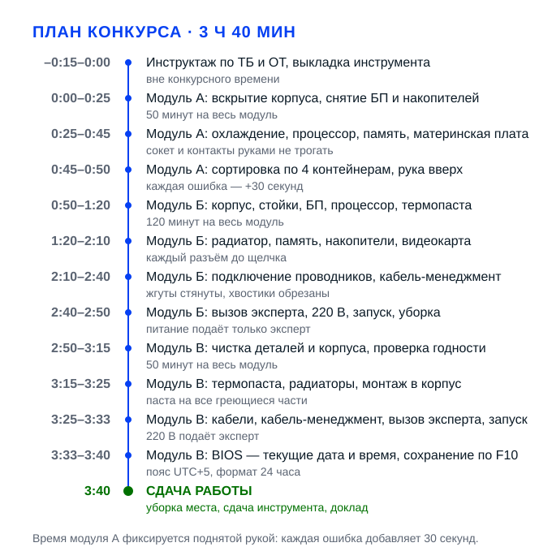
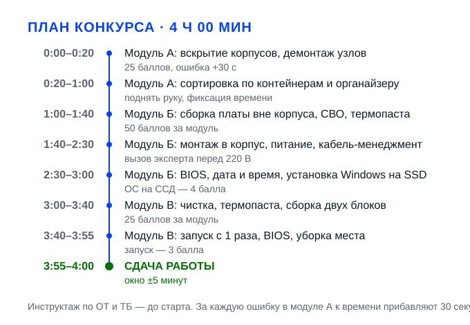
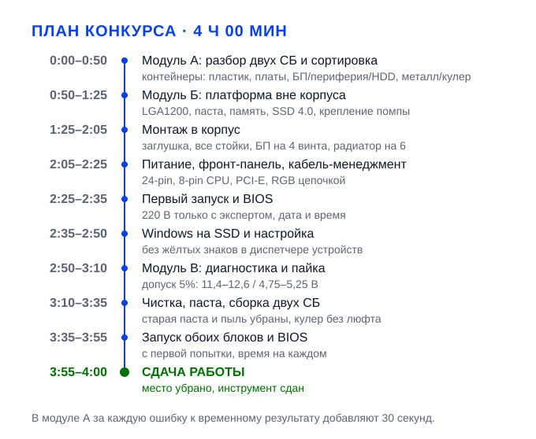

Сборка – разборка электронного оборудования (Р)
Задания ниже — официальные файлы «Абилимпикс» (источник: abilympics-russia.ru), разложенные по категориям. Решения написаны по тексту задания, регламенту и критериям оценки; в них указано, что именно проверяет эксперт.
Школьник
14–16 лет, базовый уровень заданияВыдержка из официального конкурсного задания: страницы, относящиеся к категории «Школьник» (стр. 6–9 источника).
Пошаговое решение
Конкурсное задание категории «Школьники» состоит из трёх модулей и занимает 3 часа 40 минут. В модуле А за 50 минут нужно полностью разобрать один системный блок и разложить всё вынутое по четырём контейнерам — металл, пластик, печатные платы и периферия, которую по условию не разбирают; время фиксируется поднятой рукой, а каждая ошибка добавляет к результату 30 секунд. В модуле Б за 120 минут из новых компонентов собирается компьютер: все элементы устанавливаются в чистый корпус, на греющиеся части наносится термопаста, ставятся радиаторы, подключаются проводники и выполняется кабель-менеджмент, после чего эксперт подаёт 220 вольт и компьютер запускается. В модуле В за 50 минут собирается второй системный блок из компонентов вторичного использования: их чистят от пыли, меняют термопасту, монтируют в чистый корпус, запускают и настраивают BIOS — текущие дату и время. Решение ниже идёт по этим трём модулям и отдельной задачей закрывает уборку, сдачу инструмента и доклад.

Задача 1. Разобрать системный блок под утилизацию и рассортировать компонентыМодуль А · 50 минут
Модуль А — это разбор системного блока на время: нужно полностью разобрать один компьютер и разложить всё, что из него вынуто, по четырём контейнерам — металл, пластик, печатные платы и периферия, которую по условию не разбирают. Оценивается и результат, и скорость: участник, закончивший первым с наименьшим числом ошибок, получает максимум, а каждая ошибка добавляет к его времени 30 секунд. Поэтому здесь важны не сила, а порядок движений и привычка сразу класть деталь в нужный лоток.
Действие 1.1. Подготовить рабочее место, защиту от статики и тару
Шаг 1.1.1
Надеваем антистатический халат, антистатические перчатки и защитные очки — это тот набор средств индивидуальной защиты, который конкурсное задание прямо разрешает принести на площадку. Перед первым касанием платы надеваем антистатический браслет и цепляем его зажим за неокрашенную металлическую часть корпуса; если браслета нет, берём платы только за кромки и не переносим их через всю площадку в руке. Телефон и флешку убираем в сумку, которая остаётся вне рабочей зоны.
Статический разряд в 100–200 вольт человек не чувствует, но для микросхемы он смертелен: плата после такого разряда внешне целая, а на стенде проверки уже не стартует. В модуле А это стоит ошибки и лишних 30 секунд к результату, а в модулях Б и В — сорванной сборки, потому что неисправную деталь вы обнаружите только на запуске. Запрет на телефон и флешку в задании стоит отдельным пунктом, и его проверяют до старта, а не в конце.
Халат застёгнут, перчатки без разрывов, очки на месте, браслет соединён с корпусом и не болтается на запястье. Телефон лежит в сумке, флешек на столе нет. Если браслета нет вовсе, руки работают только с кромками плат — это нужно помнить до последнего винта.
Самая частая ошибка — работать в синтетической одежде без браслета и брать материнскую плату за микросхемы и разъёмы. Плата может выйти из строя молча, и выяснится это в модуле В, когда из «вторичных компонентов» ничего не запустится. Вторая ошибка — оставить телефон на столе: это фиксируется как нарушение условий.
Эксперт проверяет СИЗ и отсутствие запрещённых предметов в первые же минуты модуля, до того как вы возьмёте отвёртку. Отсутствие очков при работе с металлическими кромками и пылью он отмечает отдельно.
Шаг 1.1.2
Раскладываем инструмент в один ряд слева направо в том порядке, в каком он понадобится: крестовая отвёртка PH2 для винтов корпуса и блока питания, PH1 для винтов плат и накопителей, плоская отвёртка для защёлок, кусачки, плоскогубцы и мультиметр. Четыре контейнера ставим справа от корпуса, подписываем или запоминаем порядок: металл, пластик, печатные платы, периферия. Рядом кладём неглубокий лоток для винтов.
Разбор идёт на время, и любая деталь, положенная не туда, потом отнимает секунды на переборку контейнера — а перебранная сортировка всё равно считается ошибкой. Отдельный лоток для винтов нужен потому, что винты корпуса, блока питания и накопителей различаются длиной и резьбой, и перепутанный винт при сборке в модуле Б или В упирается в плату или срывает резьбу в стойке. Мультиметр по условиям можно принести, и он пригодится уже в модуле В.
На столе ровно то, что разрешено: отвёртки, кусачки, плоскогубцы, мультиметр, лоток, четыре контейнера. Электроинструмента нет — он запрещён. Контейнеры стоят так, чтобы до каждого можно было дотянуться, не перешагивая через корпус.
Ссыпать винты в один стакан «потом разберусь» — через десять минут вы не отличите винт блока питания от винта крепления материнской платы, и на сборке он войдёт глубже, чем нужно. Вторая ошибка — принести шуруповёрт: электроинструмент на площадке запрещён, и его попросят убрать.
Эксперт смотрит на организацию места в первые две-три минуты: разложен ли инструмент, подписана ли тара, нет ли на столе лишнего. Это часть оценки организации работы.
Шаг 1.1.3
Обходим корпус по кругу и осматриваем крепления: сколько винтов держит боковые крышки, есть ли защёлки или безвинтовые фиксаторы, как закреплён блок питания, куда выходят кабели. Определяем для себя порядок разбора — от крупного к мелкому: крышки, кабели, блок питания, накопители, платы расширения, охлаждение, процессор, память, материнская плата, затем мелочь. Корпус ставим на бок так, чтобы доступ к обеим боковинам был свободным.
Половина потерянного времени в модуле А уходит не на отвинчивание, а на поиск очередного крепления: винт, спрятанный под наклейкой или за пластиковой заглушкой, ищут по три минуты. Порядок «от крупного к мелкому» экономит движения: пока материнская плата на месте, снимать кулер бессмысленно, а пока не снят блок питания, его жгут держит корзину накопителей. На время модуля это влияет напрямую, а время здесь и есть оценка.
Вы можете назвать вслух число винтов на каждой крышке и на блоке питания, знаете, где защёлки, и представляете последовательность до последнего винта. Корпус лежит устойчиво и не качается, крышки доступны с обеих сторон.
Начинать с материнской платы, не сняв блок питания и корзину: жгут натягивается, разъём 24-pin упирается, и плату приходится вынимать под углом — так гнут ножки разъёмов и трескают текстолит. Вторая ошибка — крутить корпус в руках, пытаясь увидеть крепление, вместо того чтобы положить его на бок.
Эксперт наблюдает, как участник начинает: осматривает ли корпус или сразу хватается за отвёртку. Осмысленный порядок разбора он отмечает как понимание конструкции, а не как везение.
Действие 1.2. Вскрыть корпус и вынуть крупные узлы
Шаг 1.2.1
Отключаем от корпуса всё, что пришло с ним: кабель питания, мониторный, USB и аудио, если они есть. Отворачиваем два винта на задней стенке, придерживая крышку ладонью, затем сдвигаем её назад на 15–20 миллиметров и только после этого снимаем. Вторую крышку снимаем так же. Обе кладём плашмя рядом, а не прислоняем к столу. Снятые крышки не ставим друг на друга — краска на кромках остаётся целой.
Крышка на большинстве корпусов держится не только винтами, но и направляющими пазами: если тянуть её на себя, пазы царапают краску и гнут кромку, а кромка потом не садится на место и корпус собирается с зазором. Прислонённая к столу крышка падает от первого же движения руки и гремит по полу — на время разбора это лишние секунды и риск повредить деталь, которую вы уже вынули. Плашмя положенная крышка ничего не задевает.
Обе крышки лежат на столе, пазы и кромки ровные, винты в лотке. Внутренняя часть корпуса открыта целиком, ничто не мешает добраться до блока питания и корзины накопителей. Если крышка не снялась, ищем третий винт, а не тянем силой.
Тянуть крышку на себя, не сдвинув: кромка гнётся, пазы выкрашиваются, и на обратной сборке крышка встаёт с перекосом. Вторая ошибка — положить винты на стол рядом с корпусом: они скатываются под него, и вы ищете их на полу, теряя время модуля.
Эксперт смотрит на аккуратность вскрытия: целы ли кромки, не брошены ли крышки, куда делись винты. Небрежное вскрытие он видит сразу, потому что оно оставляет следы на корпусе.
Шаг 1.2.2
Отсоединяем от блока питания жгут: разъём 24-pin с материнской платы (отжимаем язычок защёлки и тянем строго вверх, покачивая на пару градусов), разъём 4- или 8-pin питания процессора, разъёмы SATA к накопителям, разъёмы питания видеокарты. Затем отворачиваем четыре винта на задней стенке, придерживая блок питания второй рукой, и вынимаем его вбок, не разворачивая жгут вокруг корпуса.
Разъём 24-pin сидит плотно, и его вырывают вместе с гнездом, если тянуть под углом или забыть про защёлку: гнездо на материнской плате отрывается вместе с дорожками, и плата уходит в брак — это уже не 30 секунд штрафа, а минус деталь из сборки в модуле В. Блок питания тяжёлый, и вынутый одной рукой он падает на платы расширения, ломая их. Освобождённый жгут позволяет снять корзину накопителей без натяга.
Все разъёмы блока питания свободны, ни один не вырван с куском гнезда. Блок питания лежит на столе, его вентилятор и решётка целые, винты — в лотке, четыре штуки. Проверяем и сами разъёмы на жгуте: пластик не треснул, язычок защёлки на месте.
Дёрнуть 24-pin, не отжав защёлку: пластик трескается, гнездо остаётся на кабеле. Вторая ошибка — вынимать блок питания, не отсоединив разъём процессора, и рвать провод: жгут обрывается у самого входа в блок, и блок уходит в металл, а вам его нечем заменить.
Эксперт проверяет разъёмы после того, как узел вынут: нет ли вырванных гнёзд и оборванных проводов. Это одна из типичных ошибок, за которые начисляют штрафные 30 секунд.
Шаг 1.2.3
Снимаем накопители: отворачиваем винты крепления корзины или салазок, выдвигаем жёсткий диск и твердотельный накопитель, предварительно отсоединив кабель данных и питания. Затем вынимаем платы расширения: отворачиваем винт, держащий планку, отжимаем защёлку слота PCIe и вытягиваем видеокарту строго вертикально, покачивая за планку, а не за радиатор. Остальные платы — так же, от планки.
Тянуть видеокарту за радиатор нельзя: радиатор прикручен к текстолиту через термопрокладки, и при перекосе он отрывает от платы чипы памяти. Защёлка слота фиксирует плату за вырез у пятки, и без её отжатия плата выходит вместе с пластиковым замком. Накопители на салазках вынимаются без отвёртки, и попытка отвинтить их «на всякий случай» — это потерянные минуты на ровном месте.
Накопители и платы расширения лежат отдельно, планки ровные, защёлки слотов целые, винты в лотке. Корзина накопителей снята или отведена, доступ к материнской плате свободен со всех сторон. Винты корзины тоже в лотке, ни один не потерян.
Выдернуть видеокарту, не отжав защёлку: замок отламывается, и слот остаётся открытым — плата в нём уже не держится. Вторая ошибка — складывать платы расширения друг на друга: планки гнутся, а с обратной стороны сдираются контактные площадки.
Эксперт осматривает платы расширения и защёлки слотов после демонтажа. Отломанная защёлка и погнутая планка — видимые ошибки, они фиксируются сразу. Отдельно он смотрит, не погнуты ли планки и не вырваны ли гнёзда.
Действие 1.3. Снять охлаждение, процессор, память и материнскую плату
Шаг 1.3.1
Снимаем радиатор процессора: сначала отсоединяем провод вентилятора от разъёма CPU_FAN. Затем отворачиваем крепёжные винты крест-накрест — по половине оборота на каждый, пока все четыре не выйдут из стоек. Если радиатор сидит на засохшей термопасте, аккуратно проворачиваем его на 10–15 градусов вокруг оси и только потом снимаем, держа за основание, а не за рёбра.
Крест-накрест отворачивают потому, что при последовательном откручивании радиатор перекашивается и одним краем давит на процессор — так гнут ножки сокета. Проворот на 10–15 градусов разрывает слой засохшей пасты, которая за годы схватывается как клей. Если тянуть радиатор вверх, процессор иногда выходит из сокета вместе с ним, а на LGA-сокете это гнутые ножки, то есть мёртвая материнская плата.
Радиатор снят целиком, основание ровное, ножки сокета под ним не тронуты, провод вентилятора отключён и не оборван. Винты крепления — все четыре, в лотке. Проверьте, что на основании радиатора не осталось кусочков засохшей пасты — они помешают посадке.
Тянуть радиатор вверх с усилием: процессор вырывается из сокета, ножки гнутся. Вторая ошибка — откручивать винты по кругу, по одному до конца: радиатор идёт на перекос и трескает текстолит вокруг сокета.
Эксперт осматривает сокет сразу после снятия охлаждения: нет ли погнутых ножек и следов перекоса. Это самый частый момент, где участники теряют деталь целиком.
Шаг 1.3.2
Отжимаем рычаг сокета: выводим его из зацепа, поднимаем вверх до упора, затем отводим прижимную рамку. Процессор берём за боковые кромки большим и указательным пальцем, поднимаем строго вверх и кладём контактами вверх в отдельный лоток. Затем снимаем модули памяти: отжимаем защёлки с двух сторон одновременно, модуль выходит из слота с небольшим наклоном, тянем за кромки, не за радиаторы.
Процессор в LGA-сокете не прикручен и держится только прижимной рамкой, поэтому после её отвода он лежит свободно — и падает, если перевернуть плату или задеть его отвёрткой. Контакты на нижней стороне нежные: одно касание пальцем оставляет жир и окисел, а плата с окисленными контактами в модуле В не запустится. Защёлки памяти отжимают одновременно, иначе модуль идёт на перекос и выламывает край слота.
Процессор лежит контактами вверх, отдельно от прочих деталей, на его площадке нет пыли и следов пальцев. Модули памяти целые, защёлки слотов на месте, ни одна не отломана. Проверьте сокет на просвет: ни одна ножка не пригнута к соседней.
Перевернуть плату, не сняв процессор: он падает на стол и мнёт контакты. Вторая ошибка — вынимать память, отжав одну защёлку: модуль идёт клином, и край слота трескается. Ещё одна ошибка — оставить процессор лежать на плате, пока снимают память.
Эксперт смотрит, как снят процессор и куда он положен: отдельно и контактами вверх — правильный ответ. Процессор, лежащий в общем контейнере с металлом, он отмечает как ошибку сортировки.
Шаг 1.3.3
Вынимаем материнскую плату: отворачиваем шесть-девять винтов по периметру, начиная с углов, и складываем их отдельно от прочих. Снимаем плату, взяв её за противоположные углы, слегка отводя от задней стенки, чтобы планка портов вышла из выреза корпуса. Плату кладём на антистатический пакет или на сухую чистую поверхность текстолитом вверх, не на винты и не на металл.
Винты по периметру отворачивают от углов к центру, чтобы плата не выгнулась дугой и не треснула по дорожкам. Планка портов входит в вырез корпуса с натягом, и если тянуть плату на себя, из выреза вырывается кусок с разъёмами USB и сетевой картой. Плата, положенная на винты или на металлическую крышку, замыкает дорожки нижней стороны — внешне это никак не видно, а при проверке она не работает.
Плата вынута без перекоса, планка портов целая, винты все в лотке, стойки в корпусе не погнуты. Плата лежит на изолирующей поверхности, разъёмы не смяты. Отдельно проверьте, что ни один винт не остался вкрученным в стойку — иначе плата не выйдет.
Выдернуть плату, не выведя планку портов из выреза: разъёмы отрываются от текстолита. Вторая ошибка — положить плату на крышку корпуса: замыкание дорожек, и деталь считается испорченной. Ещё одна ошибка — тянуть плату за разъёмы, а не за кромки.
Эксперт проверяет, как плата извлечена и где лежит. Плата на металле или на куче винтов — грубая ошибка, её видно без разборки. Он также смотрит, не остались ли винты вкрученными в стойки корпуса.
Действие 1.4. Добрать мелочь, рассортировать по контейнерам и зафиксировать время
Шаг 1.4.1
Снимаем с корпуса всё съёмное: корзины и салазки накопителей, кнопку и панель питания, заглушки отсеков, решётки, пылевые фильтры, переднюю панель с защёлок, оставшиеся вентиляторы — их отворачиваем по четыре винта, отсоединив провод. Пластиковые защёлки отжимаем плоской отвёрткой, а не кусачками. Корпус после этого остаётся пустой металлической коробкой.
По условию модуль А считается выполненным, когда разобран весь компьютер, а не только сняты крупные узлы: передняя панель, корзины и вентиляторы — это тоже компоненты, и каждая оставленная в корпусе деталь читается как незаконченный разбор. Пластик отжимают отвёрткой потому, что кусачки скалывают защёлку, и панель после этого не держится — а её целостность нужна, если корпус пойдёт в сборку в модуле В.
В корпусе не осталось ни одного съёмного элемента: ни корзины, ни вентилятора, ни заглушки, ни провода. Все защёлки целые, пластиковые панели без сколов. Проверьте и то, что корпус не шатается: все его ножки и винты на месте.
Оставить корзину накопителей или вентилятор, решив, что «это часть корпуса»: разбор считается неполным, и это ошибка с 30 секундами штрафа. Вторая ошибка — снимать панель кусачками и скалывать защёлки.
Эксперт обходит корпус и смотрит внутрь: пусто или что-то осталось. Полнота разбора — главный критерий модуля А, и он проверяется глазами за десять секунд.
Шаг 1.4.2
Раскладываем всё вынутое по четырём контейнерам. В металл идут корпус, крышки, корзины, радиаторы, блок питания целиком, планки, винты. В пластик — передняя панель, заглушки, корзины салазок, кожухи вентиляторов, разъёмы и кабели. В печатные платы — материнская плата, платы расширения, модули памяти, процессор. Периферию, если она была в комплекте — клавиатуру, мышь, кабели, — не разбираем и кладём отдельно.
Сортировка по четырём группам — это и есть результат модуля А, сформулированный в задании: металл, пластик, периферия и печатные платы отдельно. Печатные платы отделяют потому, что они идут на извлечение цветных металлов и драгоценных компонентов, и попавший в металл текстолит портит всю партию. Периферию не разбирают по прямому указанию задания: разобранная клавиатура — не «старание», а ошибка.
В каждом контейнере только своё: в металле нет текстолита и пластика, в пластике нет плат, в платах нет винтов и корпусных деталей. Периферия лежит отдельно и целая, ничего не разобрано. Сверьте количество групп: их ровно четыре, и каждая стоит отдельно.
Свалить всё в один контейнер «чтобы успеть»: сортировка не выполнена, и это не одна ошибка, а несколько — по каждой перепутанной группе. Вторая ошибка — разобрать мышь или клавиатуру из старания: по заданию периферия не разбирается.
Эксперт проверяет контейнеры по очереди и выборочно достаёт детали. Смешанный контейнер он видит сразу, а каждая ошибка сортировки добавляет к вашему времени 30 секунд.
Шаг 1.4.3
Проходим по корпусу и по столу ещё раз: проверяем углы корпуса, отсеки, место под блоком питания, пространство за материнской платой. Подбираем винты и мелкие детали со стола, докладываем их в металл. Убеждаемся, что ни одна деталь не осталась лежать на полу или на крышке, и что контейнеры стоят раздельно, не соприкасаясь. Заодно поправляем детали в контейнерах, если что-то легло сверху не по группе.
Мелкий винт под корзиной или забытая планка на полу — это неполный разбор, и эксперт найдёт их при обходе, потому что смотрит именно в углы и щели. Плюс практическая сторона: деталь, оставшаяся в корпусе, при сдаче корпуса в металл уходит вместе с ним, и восстановить комплект для модуля В будет нечем. Раздельно стоящие контейнеры исключают пересыпание при переноске.
Стол чистый, на полу ничего нет, в корпусе пусто, все винты в контейнере с металлом. Контейнеры стоят отдельно друг от друга и не переполнены так, что детали выпадают. Проверьте углы отсеков и место за лотком материнской платы — там чаще всего остаётся мелочь.
Пропустить мелкую деталь в дальнем углу отсека: разбор формально неполный, и это ошибка. Вторая ошибка — поставить контейнеры вплотную: при переноске пластик ссыпается в металл, и сортировка снова нарушена.
Эксперт обходит место и заглядывает в корпус и под стол. Найдённая деталь на полу — повод перепроверить всю сортировку. Второй раз он смотрит контейнеры: после переноски сортировка не должна смешаться.
Шаг 1.4.4
Заканчиваем работу и сразу поднимаем руку — это сигнал экспертам зафиксировать время окончания модуля А. До поднятой руки не начинаем ничего постороннего: ни уборки инструмента, ни перекладывания деталей, потому что время фиксируется по руке, а не по последнему движению. После того как эксперт подошёл и отметил время, коротко докладываем: системный блок разобран полностью, компоненты разложены по четырём контейнерам.
По условиям модуля время окончания фиксируется именно поднятой рукой, и от этой отметки считается ваш результат с учётом штрафов. Если поднять руку до того, как всё разложено, эксперт увидит недоделку и запишет ошибку; если затянуть и начать прибираться — потеряете секунды, которые прямо влияют на место в рейтинге. Доклад нужен, чтобы эксперт не гадал, считаете ли вы работу законченной.
Рука поднята в момент, когда последняя деталь уже в контейнере, время записано экспертом, доклад сделан коротко и по делу. Рабочее место при этом остаётся в том виде, в котором его оценивают. Время записано в протокол, и вы его знаете.
Поднять руку «на всякий случай» заранее, а потом ещё что-то докладывать в контейнер: эксперт фиксирует недоделку. Вторая ошибка — молча доделывать до последнего, не подавая сигнала: время уходит, а штраф за неполноту всё равно начисляют.
Эксперт подходит по поднятой руке, записывает время и осматривает контейнеры. С этого момента модуль А для вас закрыт, и переделывать что-либо уже нельзя.
Задача 2. Собрать компьютер из новых компонентов и запустить егоМодуль Б · 120 минут
В модуле Б вы получаете новые компоненты и чистый корпус, и из них нужно собрать работающий компьютер: установить все выданные элементы, нанести термопасту на греющиеся части и поставить радиаторы, подключить проводники, сделать кабель-менеджмент. Сеть 220 вольт подаёт эксперт после осмотра сборки, поэтому порядок такой: сначала монтаж и укладка кабелей, затем вызов эксперта, затем запуск. На весь модуль даётся 120 минут — это самый длинный модуль конкурса, и в нём же легче всего потерять баллы на спешке.
Действие 2.1. Принять компоненты и подготовить корпус
Шаг 2.1.1
Вскрываем упаковки и раскладываем компоненты в порядке установки: корпус, материнская плата, процессор, радиатор с вентилятором, модули памяти, накопители, блок питания, видеокарта, крепёж и кабели. Сверяем с перечнем выданного: каждая позиция должна быть на столе и в единственном экземпляре. Упаковку и пакетики с крепежом не выбрасываем, а складываем в одну коробку — винты и стойки оттуда ещё понадобятся.
Комплектность — первое, что проверяют перед сборкой: если чего-то не хватает, замена возможна только через эксперта и только до начала монтажа. Разложенные по порядку установки компоненты экономят десятки минут: вы не ищете нужную деталь в куче, а берёте следующую. Крепёж в пакетиках разложен по назначению, и выброшенный пакетик — это потерянные стойки и винты M.2, без которых накопитель не закрепить.
Все позиции перечня на столе, упаковка вскрыта аккуратно, крепёж не рассыпан. Вы можете назвать, какая деталь ставится первой и какая последней. Отсутствующее или повреждённое зафиксировано до начала работы.
Начать сборку, не сверив комплект: в середине монтажа выясняется, что нет стойки или винта M.2, и работа встаёт. Вторая ошибка — выбросить пакетики с крепежом вместе с упаковкой: нужный винт потом ищут по всей площадке.
Эксперт присутствует при выдаче и фиксирует, сверялся ли участник с перечнем. Спокойная приёмка компонентов читается как организованность. Отдельно он отмечает, не вскрыта ли упаковка с повреждением.
Шаг 2.1.2
Снимаем обе боковые крышки, кладём их плашмя. Примеряем материнскую плату к корпусу без винтов и находим отверстия под стойки: они должны совпадать с отверстиями платы один к одному. Вкручиваем стойки в эти точки, а в лишние отверстия корпуса, под которыми нет отверстий платы, стойки не ставим. Проверяем пальцем, что все стойки затянуты до конца и не выступают из плоскости.
Лишняя стойка под платой упирается в дорожки с обратной стороны и замыкает их при первом включении — это одна из самых обидных поломок, потому что внешне сборка идеальна. Недостающая стойка означает, что плата держится на пяти точках вместо шести-девяти и прогибается при установке разъёмов, а прогиб трескает пайку. Примерка до винтов занимает минуту и снимает оба риска.
Стойки стоят ровно под отверстиями платы, лишних нет, все затянуты. Плата, положенная на стойки, лежит без зазора и без натяга, отверстия совпадают. Проверьте пальцем каждую стойку: она должна стоять строго вертикально и быть затянутой до конца.
Закрутить стойки во все отверстия корпуса «чтобы держалось крепче»: одна из них упрётся в дорожки, и плата выйдет из строя при включении. Вторая ошибка — недокрутить стойку: плата садится с перекосом, винт срывает резьбу.
Эксперт проверяет стойки при осмотре сборки перед подачей питания: лишняя стойка и незатянутый крепёж видны при снятой крышке. Он же смотрит, не осталось ли стоек, которые не совпадают с отверстиями платы.
Шаг 2.1.3
Устанавливаем блок питания: прикладываем его к посадочному месту так, чтобы вентилятор смотрел вниз, если в днище корпуса есть решётка и ножки, или вверх, если корпус глухой снизу. Прикручиваем четырьмя винтами с задней стенки, придерживая блок второй рукой. Жгут выводим внутрь корпуса и пока укладываем вдоль задней стенки, не натягивая. Винты затягиваем крест-накрест, чтобы блок не перекосился.
Направление вентилятора определяет, откуда блок берёт воздух: при решётке в днище он должен забирать холодный воздух снизу, а не горячий из корпуса, иначе перегревается и шумит. Четыре винта, а не два, нужны потому, что блок питания тяжёлый и висит на задней стенке — на двух винтах он провисает и передаёт вибрацию на корпус. Жгут, уложенный сразу вдоль стенки, потом не придётся распутывать вокруг материнской платы.
Блок питания сидит плотно, все четыре винта на месте, вентилятор не упирается в решётку и не закрыт посторонним. Жгут внутри корпуса, ничего не зажато между блоком и стенкой. Проверьте рукой: блок не качается, если нажать на его заднюю стенку.
Поставить блок вентилятором вверх в корпусе с решёткой в днище: он гоняет горячий воздух по кругу и греется. Вторая ошибка — закрепить на два винта: блок провисает, а жгут пережимается о край корпуса.
Эксперт смотрит на посадку блока питания и направление вентилятора при проверке сборки. Перевёрнутый блок он отмечает как ошибку монтажа. Он также проверяет, не пережат ли жгут о кромку корпуса.
Действие 2.2. Установить процессор, нанести термопасту и поставить охлаждение
Шаг 2.2.1
Открываем сокет на материнской плате: отжимаем рычаг, поднимаем прижимную рамку, снимаем защитную крышку сокета. Берём процессор за боковые кромки, находим на его углу треугольник и совмещаем с треугольником на сокете, после чего опускаем строго вертикально, не сдвигая и не прижимая. Опускаем рамку и заводим рычаг под зацеп до упора. Проверяем посадку взглядом сбоку: крышка процессора должна быть в одной плоскости с рамкой.
Ключ-треугольник — единственная защита от установки процессора не той стороной: при неверной ориентации он не ляжет в сокет, а при попытке прижать рамку погнутся ножки. Процессор опускают вертикально потому, что любое проскальзывание по сокету сминает контакты, а они расположены с шагом меньше миллиметра. Рычаг заводится до упора, иначе рамка не прижмёт процессор и контакт будет нестабильным.
Процессор лежит в сокете ровно, без зазора с одной стороны, треугольники совпали, рамка опущена и рычаг заведён за зацеп. Плата при этом не прогнулась. Проверьте, что защитная крышка сокета снята и лежит в стороне, а не осталась под рамкой.
Устанавливать процессор, не сняв защитную крышку сокета: ножки мнутся сразу и безвозвратно. Вторая ошибка — прижать процессор пальцем, чтобы «сел ровнее»: следы и смятые контакты, плата в брак. Третья — уронить процессор на стол при переносе.
Эксперт осматривает сокет и посадку процессора до установки охлаждения. Это ключевой момент модуля: погнутые ножки означают, что собрать рабочий компьютер уже не получится.
Шаг 2.2.2
Наносим термопасту на центр крышки процессора: выдавливаем каплю размером с горошину, 4–5 миллиметров в диаметре, и оставляем её в центре, не размазывая по всей площади. Если паста густая и в шприце с дозатором, распределяем тонким слоем по крышке пластиковой лопаткой или картой, оставляя края по 2–3 миллиметра непокрытыми. Шприц держим вертикально, чтобы паста выходила без пузырей воздуха.
Термопаста нужна для того, чтобы вытеснить воздух между крышкой процессора и основанием радиатора: воздух — плохой проводник, и без пасты температура под нагрузкой растёт на 20–30 градусов. Капля в центре распределится сама под давлением радиатора, и лишнее выдавится по краям; размазанный толстый слой, наоборот, работает как одеяло. Края оставляют свободными, чтобы излишек не вытек на текстолит платы.
Капля в центре крышки, размер примерно с горошину, паста не течёт по сторонам и не попала на контакты и на плату вокруг сокета. Слой ровный, без комков и сухих участков. Проверьте, что паста не попала на ножки сокета и на контакты рядом с ним.
Намазать пасту толстым слоем по всей крышке «чтобы точно хватило»: теплопередача падает, а излишек вытекает на плату. Вторая ошибка — не нанести пасту вообще, считая, что радиатор и так прижмётся: перегрев и отключение при первом же запуске.
Эксперт проверяет наличие и качество термопасты до установки радиатора. По условиям модуля паста на греющихся местах — обязательный элемент результата, и её отсутствие фиксируется как ошибка.
Шаг 2.2.3
Ставим радиатор: совмещаем крепёжные отверстия или зацепы с сокетом, опускаем радиатор строго вертикально на процессор и затягиваем крепёж крест-накрест, по половине оборота на каждый винт, до появления ощутимого сопротивления. Подключаем провод вентилятора к разъёму CPU_FAN на плате, а не к SYS_FAN. Укладываем провод так, чтобы он не попадал в лопасти.
Крест-накрест радиатор садится ровно, и паста распределяется равномерно по всей крышке; при затяжке по кругу один край прижимается сильнее, и половина крышки остаётся без контакта. Разъём CPU_FAN связан с регулятором оборотов процессора: в SYS_FAN вентилятор крутится по другой кривой, и плата может выдавать ошибку охлаждения при старте. Провод в лопастях — это шум и обрыв за первые минуты работы.
Радиатор сидит без качания, все точки крепления затянуты одинаково, вентилятор не задевает рёбра и провод. Разъём вставлен до щелчка в CPU_FAN. Плата под сокетом не выгнута. Проверьте зазор по всем четырём углам: он должен быть одинаковым.
Затянуть крепёж по кругу: радиатор идёт на перекос, температура одного ядра выше на 10–15 градусов. Вторая ошибка — подключить кулер в SYS_FAN: при старте плата ругается на отсутствие охлаждения процессора.
Эксперт проверяет посадку радиатора и разъём вентилятора при осмотре перед включением. Перекошенный радиатор виден по зазору между основанием и крышкой процессора.
Шаг 2.2.4
Проверяем узел охлаждения целиком: пальцем пробуем качнуть радиатор из стороны в сторону — он должен стоять жёстко, без люфта. Смотрим на просвет между основанием и процессором: щели быть не должно. Прокручиваем вентилятор рукой — он вращается свободно, без задевания. Провод укладываем за скобу или стяжкой к рёбрам, но не на горячую часть. Если люфт есть, подтягиваем крепёж крест-накрест ещё на четверть оборота.
Люфт радиатора означает, что крепёж не дотянут: под вибрацией зазор растёт, и через десять минут работы температура уходит вверх, а плата сбрасывает частоты. Проворот вентилятора рукой — единственный способ поймать задевание провода или погнутое ребро до включения, когда это ещё безобидно. Проверка занимает полминуты и закрывает самый частый источник перегрева.
Радиатор не качается, щели нет, вентилятор вращается от пальца и останавливается плавно, провод не касается лопастей. Ничего не мешает потоку воздуха к рёбрам. Проверьте, что разъём вентилятора вставлен до щелчка и не выходит от лёгкого натяжения.
Оставить радиатор с люфтом и не заметить этого: при запуске температура растёт, вентилятор выходит на максимум и шумит, а в худшем случае компьютер выключается. Вторая ошибка — оставить провод в лопастях: треск и обрыв провода.
Эксперт качает радиатор рукой при осмотре. Жёсткая посадка и свободный ход вентилятора — то, что он проверяет в первую очередь. Он же смотрит, не касается ли провод рёбер радиатора.
Действие 2.3. Установить память, накопители и видеокарту
Шаг 2.3.1
Отжимаем защёлки слотов памяти в стороны. Берём модуль за кромки, совмещаем вырез-ключ с выступом слота и вставляем его до щелчка: сначала одной стороной глубже, затем дожимаем вторую до полного закрытия защёлок. При двух модулях занимаем слоты, которые плата обозначает как приоритетные, — обычно второй и четвёртый от процессора, они подписаны A2 и B2.
Ключ на модуле не даёт поставить его неправильной стороной, но при перекосе он входит на половину и защёлки не закрываются — а незакрытая защёлка означает непропай контакта и ошибку памяти при старте. Пара модулей в приоритетных слотах работает в двухканальном режиме: плата видит оба канала, и скорость памяти удваивается. В остальных слотах система запустится, но в одноканальном режиме, что для проверки считается ошибкой сборки.
Оба модуля сидят до щелчка, защёлки закрыты и стоят вертикально, модули в одном уровне по высоте, ключи совпали. Плата не прогнулась под нажимом. Проверьте, что модули стоят в слотах A2 и B2, как обозначено на плате, а не в соседних.
Вставить модуль до половины и оставить защёлки приоткрытыми: компьютер не стартует или стартует с половиной памяти. Вторая ошибка — поставить оба модуля в соседние слоты: двухканальный режим не включается.
Эксперт проверяет закрытые защёлки и раскладку по слотам. Неполностью вставленный модуль он находит при осмотре до включения. Он сверяет раскладку с обозначениями на плате: A2 и B2, а не пара соседних слотов.
Шаг 2.3.2
Ставим накопитель: для M.2 находим соответствующий слот, вкручиваем стойку под длину 2280, вставляем накопитель в разъём под углом примерно 20 градусов до упора, прижимаем его к стойке и фиксируем винтом. Для накопителя 2,5 или 3,5 дюйма закрепляем его в корзине четырьмя винтами и подключаем кабель данных SATA к плате и кабель питания от блока. Винт затягиваем без усилия, чтобы не сорвать резьбу в стойке.
M.2 вставляют под углом, потому что разъём рассчитан на поворот: если вдавливать его плашмя, гнутся контактные площадки и трескается текстолит накопителя. Стойка подбирается по длине, иначе накопитель ложится на плату и замыкает дорожки. Кабель SATA подключают и к плате, и к питанию: без любого из двух накопитель не определится в системе, и это выяснится только при проверке.
Накопитель закреплён винтом и не качается, разъём вошёл до упора, кабели SATA и питания вставлены до щелчка. Накопитель не касается платы и не висит на одном разъёме. Проверьте, что винт M.2 затянут и накопитель не поднимается при нажатии на его дальний край.
Вдавить M.2 плашмя: погнутые площадки и мёртвый накопитель. Вторая ошибка — подключить только кабель данных, забыв питание: накопитель не виден в BIOS, и вы ищете несуществующую неисправность. Третья — потерять винт M.2 и оставить накопитель незакреплённым.
Эксперт проверяет крепление накопителя и оба кабеля. Накопитель, висящий на разъёме без винта, он отмечает отдельно. Он проверяет и то, что накопитель не касается металлических частей корпуса.
Шаг 2.3.3
Устанавливаем видеокарту в верхний слот PCIe x16: снимаем заглушку на задней стенке напротив слота, отжимаем защёлку слота, вставляем карту вертикально до щелчка защёлки и прикручиваем планку винтом к корпусу. Если у карты есть дополнительное питание, подключаем к ней разъёмы 6- или 8-pin от блока питания до щелчка. Защёлку слота отпускаем только после того, как карта села до конца: она должна щёлкнуть.
Верхний слот ближе всего к процессору, и на многих платах именно он работает на полной скорости; нижние могут быть электрически урезаны. Защёлка фиксирует карту за пятку разъёма, и без неё тяжёлая карта провисает под собственным весом, перекашивая контакты. Дополнительное питание обязательно: без него карта стартует, но отключается под нагрузкой, и на проверке это выглядит как неисправность сборки.
Карта сидит в слоте до щелчка, планка прикручена, защёлка закрыта, разъёмы питания вставлены до упора. Карта не качается и не упирается в соседние детали. Проверьте, что заглушка напротив слота снята, а карта не упирается в корзину накопителей.
Не прикрутить планку: карта провисает, контакт в слоте пропадает. Вторая ошибка — не подключить дополнительное питание: изображение есть до первой нагрузки, потом чёрный экран. Третья — вставлять карту в нижний слот и удивляться низкой производительности.
Эксперт проверяет посадку карты, винт планки и разъёмы питания. Это одна из точек, где невнимательность видна без приборов. Он же смотрит, снята ли заглушка на задней стенке напротив слота.
Действие 2.4. Подключить проводники и сделать кабель-менеджмент
Шаг 2.4.1
Подключаем питание: разъём 24-pin в материнскую плату до щелчка защёлки, разъём 4+4 или 8-pin в питание процессора в верхней части платы. Подключаем кабели передней панели: Power SW и Reset на соответствующие пины, HDD LED и Power LED с соблюдением полярности, затем USB и AUDIO. Проверяем, что каждый разъём вошёл до упора. Кабели передней панели подключаем по схеме на плате или по надписям у пинов.
Разъём 24-pin без щелчка даёт плавающие отказы: компьютер запускается через раз, и найти причину без повторного вскрытия невозможно. Питание процессора на многих платах находится в верхнем углу, и его забывают чаще всего — без него плата не стартует вовсе, хотя всё остальное собрано. Полярность у светодиодов важна: перевёрнутый Power LED просто не горит, и участник ищет неисправность там, где её нет.
Все разъёмы сидят до щелчка, защёлка 24-pin закрыта, кабель процессора подключён, провода передней панели на своих пинах согласно схеме. Ни один разъём не висит на половине. Проверьте, что кабель процессорного питания дошёл до разъёма и не натянут через плату.
Забыть питание процессора: при нажатии кнопки ничего не происходит, и на поиск причины уходят минуты. Вторая ошибка — перепутать полярность светодиодов и решить, что сборка не работает. Третья — вставить разъём 24-pin наоборот с усилием и погнуть контакты.
Эксперт проходит по разъёмам перед подачей питания, потому что 220 вольт подаёт он. Неподключённый разъём он находит сразу и фиксирует как ошибку подключения.
Шаг 2.4.2
Укладываем кабели: жгут питания ведём за лотком материнской платы по каналам, свободные петли стягиваем стяжками через каждые 8–10 сантиметров и обрезаем хвостики кусачками под корень. Кабели вентиляторов и передней панели уводим в сторону, не пересекая поток воздуха от передних вентиляторов к процессору. Ничего не натягиваем и не пережимаем о кромки корпуса.
Кабель-менеджмент — отдельный пункт результата модуля: по заданию после монтажа проводники подключают и укладывают. Уложенные кабели не попадают в вентиляторы и не перекрывают поток воздуха, а значит, температура ниже и система тише. Стяжки через каждые 8–10 сантиметров держат жгут, но не передавливают провода; обрезанный под корень хвостик не цепляется за пальцы при следующем вскрытии.
Жгуты уложены по каналам, стяжки затянуты и обрезаны, ни один провод не висит в воздухе и не касается лопастей. Крышка корпуса закрывается без нажима, провода не зажаты. Проверьте, что жгут не лежит на горячей части радиатора и не касается рёбер.
Оставить жгут петлёй перед вентилятором: провод попадает в лопасти, треск и обрыв. Вторая ошибка — перетянуть стяжку до упора: провода передавлены, контакт пропадает при нагреве. Третья — уложить кабели так, что крышка не закрывается без нажима.
Эксперт оценивает укладку кабелей при осмотре сборки: аккуратный жгут и свободный поток воздуха — то, что он отмечает как выполненный кабель-менеджмент.
Шаг 2.4.3
Делаем финальную проверку перед подачей питания: обходим сборку по кругу и убеждаемся, что все винты крепления затянуты, лишних стоек нет, внутри корпуса не осталось инструмента, винтов и обрезков стяжек. Проверяем, что кулер процессора подключён, накопители видны, карта прикручена, а кабели не касаются рёбер радиатора. Крышку пока не ставим. Инструмент на время осмотра убираем со стола в лоток.
Питание подаёт эксперт, и он осматривает сборку до подключения к сети: любой оставленный внутри винт или обрезок стяжки — это риск замыкания, а забытый инструмент вообще снимает доверие ко всей работе. Проверка по кругу занимает две минуты и закрывает то, что не видно с одной стороны: разъём в дальнем углу, непроложенный провод, неприкрученную планку. Крышка снимается для осмотра, поэтому её ставят после проверки.
Все винты на месте, внутри корпуса нет посторонних предметов, все разъёмы подключены, кабели не касаются горячих частей. Вы можете показать эксперту каждый узел и назвать, что к нему подключено. Сверьте по памяти: все ли выданные компоненты стоят в корпусе.
Оставить внутри винт или обрезок стяжки: при подаче питания замыкание, и сборка проверку не пройдёт. Вторая ошибка — закрыть крышку до осмотра: эксперту придётся просить открыть, а время модуля идёт. Третья — оставить внутри обрезки стяжек.
Эксперт осматривает сборку перед подключением к сети 220 вольт. Именно на этом шаге он фиксирует и полноту монтажа, и отсутствие посторонних предметов.
Действие 2.5. Вызвать эксперта, запустить компьютер и убрать место
Шаг 2.5.1
Зовём эксперта и докладываем коротко: сборка закончена, все компоненты установлены, кабели подключены и уложены, термопаста нанесена, радиатор закреплён. Подключение к сети 220 вольт выполняет эксперт — вы не вставляете кабель в розетку и не трогаете кнопку на блоке питания до его разрешения. После подключения нажимаем кнопку питания на передней панели и смотрим на реакцию.
Правило «220 вольт подаёт эксперт» записано в задании и продиктовано безопасностью: при ошибке в сборке первое включение может закончиться коротким замыканием, и лучше, чтобы в этот момент рядом был человек, отвечающий за площадку. Доклад перед запуском нужен, чтобы эксперт знал: работа закончена, и осмотр идёт по вашей сборке, а не по промежуточному состоянию. Самовольное включение — нарушение, которое фиксируется отдельно.
Эксперт подошёл, выслушал доклад, осмотрел сборку и подключил кабель питания. После нажатия кнопки вентиляторы начали вращаться, на мониторе появилось изображение. Проверьте, что вентилятор процессора вращается и его обороты не падают до нуля.
Включить компьютер самостоятельно, пока эксперт не подошёл: нарушение условий, и осмотр сборки уже не будет засчитан как выполненный по правилам. Вторая ошибка — докладывать «всё готово», когда крышка не проверена и кабели не уложены.
Эксперт фиксирует момент вызова и сам факт подключения к сети. Доклад по существу, с перечислением выполненных операций, читается как понимание своей работы.
Шаг 2.5.2
После запуска проверяем признаки нормальной работы: вентиляторы вращаются, нет повторяющихся звуковых сигналов, на экране появился логотип и таблица POST. Если плата показывает экран с параметрами, убеждаемся, что процессор определён, объём памяти совпадает с установленным, накопитель в списке есть. Затем выключаем питание, ставим боковую крышку на место и убираем рабочее место: коробки, обрезки, инструмент.
Запуск — это и есть результат модуля Б: по заданию нужно запустить собранный компьютер. Проверка по таблице POST даёт подтверждение, что определились все три ключевых узла — процессор, память, накопитель; если чего-то нет, ошибка нашлась до сдачи, и её ещё можно устранить. Уборка места входит в условия модуля, и коробки на столе эксперт видит при оценке.
Компьютер стартует, определяется процессор и полный объём памяти, накопитель виден. Звуковых сигналов ошибки нет, кулер процессора вращается. Стол свободен от упаковки и обрезков, инструмент на месте.
Оставить компьютер работать и уйти убирать, не посмотрев таблицу POST: неопределившийся накопитель обнаружится только на сдаче. Вторая ошибка — оставить коробки и обрезки на столе: уборка входит в условия модуля.
Эксперт смотрит на экран при старте вместе с участником и фиксирует, что компьютер запустился. Чистое рабочее место он отмечает как выполненное требование модуля.
Задача 3. Собрать компьютер из компонентов вторичного использования и настроить BIOSМодуль В · 50 минут
Модуль В — сборка из того, что уже было в работе: компоненты бывшего употребления нужно сначала почистить от пыли и грязи, на греющиеся части нанести термопасту и поставить радиаторы, затем смонтировать всё в чистый корпус, подключить проводники, уложить кабели и после запуска настроить BIOS — выставить текущие дату и время. На весь модуль даётся 50 минут, и половина этого времени уходит именно на подготовку деталей, а не на монтаж.
Действие 3.1. Почистить компоненты и корпус от пыли
Шаг 3.1.1
Раскладываем полученные компоненты на столе в один слой: материнская плата, процессор, радиатор с вентилятором, модули памяти, накопители, блок питания, платы расширения. Готовим мягкую кисть шириной 25–30 миллиметров, жёсткую щётку для рёбер радиатора, салфетки без ворса и спирт. Пыль выдуваем или смахиваем наружу, в сторону от стола с инструментом, а не внутрь корпуса.
Пыль в радиаторе работает как теплоизолятор: слой в миллиметр снижает эффективность охлаждения на 10–15 градусов, и собранный из непрочищенных деталей компьютер шумит и греется. Разложенные в один слой детали видно целиком, и на этом этапе легко заметить вздутый конденсатор или отломанную защёлку, пока плата ещё не закреплена в корпусе. Сметать пыль наружу, а не внутрь — чтобы не забить разъёмы и слоты.
Все компоненты на столе и осмотрены, кисть и щётка под рукой, салфетки и спирт приготовлены. Пыль не летит на инструмент и в открытые разъёмы, стол не засыпан грязью. Проверьте, что на столе нет открытой тары со спиртом рядом с чистыми деталями.
Начать монтаж, не почистив детали: пыль остаётся в радиаторе и в слотах, а после запуска оседает на новых поверхностях. Вторая ошибка — сдувать пыль внутрь корпуса или в разъёмы памяти: контакт пропадает, и плата не стартует.
Эксперт смотрит на подготовку деталей в начале модуля. По условиям модуля компоненты должны быть почищены от пыли и грязи до монтажа, и это проверяется визуально.
Шаг 3.1.2
Чистим радиатор и вентилятор: снимаем вентилятор с радиатора, если он на винтах или защёлках, выметаем пыль из рёбер щёткой в направлении каналов, продуваем промежутки. Лопасти вентилятора протираем влажной салфеткой, придерживая их пальцем, чтобы не крутить вал. Блок питания чистим снаружи и через решётку, не вскрывая корпус: продуваем короткими импульсами, чтобы не раскрутить вентилятор сверх оборотов.
Пыль в рёбрах радиатора спрессовывается в войлок, и обычная кисть её не берёт — нужна щётка, которая проходит между пластинами. Вентилятор, раскрученный струёй воздуха, работает как генератор и гонит напряжение в плату, поэтому лопасти придерживают. Блок питания не вскрывают из соображений безопасности: внутри конденсаторы держат заряд и после отключения, а на площадке это прямой риск.
Рёбра радиатора чистые на просвет, лопасти без налёта, вентилятор вращается свободно и без хруста. Блок питания снаружи чист, решётка не забита, корпус не вскрыт. Проверьте, что после продувки пыль не осела обратно на рёбра и лопасти.
Продуть вентилятор струёй, не придерживая лопасти: подшипник разбивается, вентилятор начинает трещать. Вторая ошибка — вскрыть блок питания «для чистки»: это нарушение безопасности и запрещено на площадке.
Эксперт проверяет чистоту радиатора и целостность вентилятора. Вскрытый блок питания он расценивает как нарушение требований безопасности. Он также смотрит, не погнуты ли рёбра радиатора после чистки.
Шаг 3.1.3
Чистим корпус: снимаем обе боковые крышки и переднюю панель, выметаем пыль из днища, из отсеков и из-под лотка материнской платы, протираем влажной салфеткой и даём высохнуть. Пылевые фильтры промываем под водой и сушим, решётки продуваем. Проверяем, что в стойках крепления нет обломков винтов и что все стойки на месте. Влажную салфетку не оставляем внутри корпуса: она должна высохнуть снаружи.
Чистый корпус — прямое требование модуля: компоненты ставятся именно в чистый корпус. Пыль на днище и под лотком сразу поднимается потоком воздуха и оседает на радиаторе, то есть работа по чистке деталей пропадает за десять минут. Влажную протирку обязательно сушат: влага на металле под платой — это коррозия и риск замыкания при подаче питания.
Внутри корпуса сухо и чисто, углы и отсеки без пыли, фильтры промыты и высушены, стойки целые и на своих местах. Крышки и панель снимаются и ставятся без усилия. Проверьте на ощупь: металл сухой, на днище нет капель и разводов.
Ставить плату во влажный корпус: при подаче питания замыкание по влаге. Вторая ошибка — не снять фильтры и не заметить, что один из них забит полностью: поток воздуха падает, температура растёт. Третья — промыть фильтр и поставить его влажным.
Эксперт заглядывает в корпус до монтажа: чистота отсеков и состояние фильтров видны сразу и оцениваются как часть подготовки. Он также проверяет, что стойки крепления на месте и не погнуты.
Шаг 3.1.4
Осматриваем каждую плату на предмет годности: ищем вздутые или подтёкшие конденсаторы, следы окисления и коррозии на контактах, погнутые ножки в сокете, потемнения вокруг цепей питания, трещины текстолита. Проверяем разъёмы памяти и слоты расширения на наличие мусора и погнутых контактов. При сомнении в исправности прозваниваем мультиметром цепи питания на короткое замыкание.
Сборка из вторичных компонентов — единственный модуль, где деталь может быть неисправна до начала работы, и обнаружить это лучше на столе, чем после монтажа. Вздутый конденсатор означает, что плата не запустится или будет отказывать под нагрузкой; погнутые ножки сокета не дадут поставить процессор. Мультиметр разрешён к проносу, и прозвонка цепей питания занимает минуту, но снимает риск подать питание на замкнутую плату.
Все конденсаторы ровные, без вздутия и подтёков, контакты чистые, сокет без погнутых ножек, слоты свободны от мусора. По результатам осмотра вы можете сказать, какие детали вызывают сомнение и почему.
Пропустить вздутый конденсатор и собрать плату: компьютер не стартует, а вы ищете ошибку в своей сборке, теряя время модуля. Вторая ошибка — ставить процессор в сокет с погнутой ножкой: контакт не восстановить, плата испорчена.
Эксперт наблюдает, осматривает ли участник детали перед монтажом. Умение отличить негодную деталь до сборки — то, что отличает осмысленную работу от механической.
Действие 3.2. Заменить термопасту и поставить радиаторы на бывшие в работе детали
Шаг 3.2.1
Снимаем старую термопасту с крышки процессора и с основания радиатора: размягчаем её салфеткой со спиртом, снимаем без скребка, круговыми движениями от центра к краям. Обезжириваем обе поверхности чистой салфеткой и даём высохнуть 10–15 секунд. Проверяем основание радиатора на ровность: подошва не должна иметь заусенцев и следов старой пасты в углублениях.
Засохшая паста теряет теплопроводность и работает как прокладка: новая паста, нанесённая поверх старой, не даёт выигрыша, потому что между слоями остаётся воздух и крошка. Обезжиривание нужно для того, чтобы новая паста растекалась по металлу, а не собиралась в капли на жировой плёнке. Заусенец на подошве радиатора не даёт ей прижаться к крышке, и один угол остаётся без контакта.
Крышка процессора и подошва радиатора чистые, без остатков старой пасты и без жирных разводов, поверхности сухие и ровные. Салфетки ушли в мусор, а не лежат на столе рядом с чистыми деталями. Проверьте подошву на просвет: на ней не должно быть ворса от салфетки.
Нанести новую пасту поверх старой: слой получается толстым, теплопередача хуже, чем было. Вторая ошибка — счищать пасту ножом или отвёрткой: царапины на подошве радиатора, и он уже не прижмётся. Третья — оставить на столе салфетки со старой пастой.
Эксперт смотрит на поверхности до нанесения пасты. Чистое основание радиатора и обезжиренная крышка — то, что он проверяет, потому что по условиям паста наносится на подготовленные греющиеся части.
Шаг 3.2.2
Наносим новую термопасту каплей 4–5 миллиметров в центр крышки процессора и ставим радиатор: совмещаем крепёж, опускаем вертикально, затягиваем крест-накрест по половине оборота до ощутимого сопротивления. Подключаем вентилятор к разъёму CPU_FAN, проверяем, что провод не в лопастях, и качаем радиатор рукой на люфт. Для радиаторов на защёлках продавливаем защёлки по диагонали до щелчка.
Капля в центре и давление радиатора дают тонкий равномерный слой без воздушных карманов — именно это и требуется, чтобы отвести тепло от крышки. Крест-накрест затягивают, чтобы не перекосить радиатор и не сломать крепление сокета: на вторичных деталях пластик уже имеет следы старения и трескается от неравномерной нагрузки. Люфт после установки означает, что часть крышки не контактирует с подошвой.
Радиатор сидит жёстко, без люфта, крепёж затянут равномерно, вентилятор подключён в CPU_FAN и вращается от пальца свободно. Излишек пасты не вытек на плату вокруг сокета. Проверьте, что излишек пасты вышел по краям ровным валиком, а не комком с одной стороны.
Затянуть крепёж с одной стороны до конца: радиатор перекошен, пластик крепления трескается, и деталь уже не поставить. Вторая ошибка — не подключить вентилятор: при запуске перегрев и отключение через несколько минут.
Эксперт проверяет посадку радиатора и наличие пасты при осмотре до включения. По условиям модуля радиатор должен стоять на всех греющихся местах, и это один из пунктов результата.
Действие 3.3. Смонтировать компоненты в корпус и подключить кабели
Шаг 3.3.1
Ставим материнскую плату на стойки, проверяя, что лишних стоек нет, и прикручиваем винтами по периметру, начиная с углов и затягивая без усилия. Устанавливаем процессор по ключу-треугольнику, опускаем рамку, заводим рычаг. Вставляем модули памяти в приоритетные слоты до щелчка, отжимая защёлки с двух сторон одновременно. Винты платы затягиваем без усилия: на вторичном текстолите резьба уже ослаблена.
Порядок «плата, процессор, память» удобен потому, что на снятой плате сокет и слоты доступны со всех сторон и ничто не мешает прижиму. Винты от углов к центру не дают плате выгнуться и треснуть по дорожкам — на вторичной плате, где текстолит уже прошёл несколько циклов нагрева, это особенно важно. Память до щелчка — гарантия контакта, а приоритетные слоты включают двухканальный режим.
Плата прикручена всеми винтами, не качается, процессор и память на месте, защёлки памяти закрыты. Стойки под платой не выступают и не упираются в дорожки. Проверьте, что под платой не осталось лишней стойки, а процессор не сдвинулся с места.
Прикрутить плату, не проверив лишние стойки: одна из них упирается в дорожки, и плата выходит из строя при включении. Вторая ошибка — вставлять память, не отжав вторую защёлку: край слота трескается. Третья — перетянуть винты платы и треснуть текстолит у отверстия.
Эксперт осматривает посадку платы и закрытые защёлки памяти. Плата, прикрученная с перекосом, видна по зазору у задней стенки. Он же смотрит, не осталось ли под платой лишней стойки.
Шаг 3.3.2
Устанавливаем блок питания на место и закрепляем четырьмя винтами, направляя вентилятор по конструкции корпуса. Ставим накопители в корзину или салазки и фиксируем винтами, подключаем кабель данных SATA к плате. Вставляем платы расширения в слоты до щелчка и прикручиваем планки. Проверяем, что все детали сидят плотно и ничего не болтается. Корзину накопителей ставим на место до того, как закроем доступ к ней кабелями.
Каждая незакреплённая деталь — источник вибрации и пропадающего контакта: блок питания на двух винтах провисает, накопитель на одном винте качается, карта без винта планки выходит из слота от собственного веса. На вторичных компонентах разъёмы уже разработаны, и плотная посадка компенсирует износ. Проверка «ничего не болтается» занимает полминуты и снимает половину отказов при запуске.
Блок питания на четырёх винтах, накопители закреплены и подключены, карты прикручены, защёлки слотов закрыты. Ни одна деталь не качается при лёгком нажатии. Проверьте, что накопитель не висит на разъёме и не касается лопастей вентилятора.
Оставить накопитель висеть на разъёме: при работе он смещается, контакт пропадает, система теряет диск. Вторая ошибка — не прикрутить планку карты: карта выходит из слота, и на экране нет изображения.
Эксперт проверяет крепление всех узлов перед подачей питания. Болтающаяся деталь — видимая ошибка монтажа. Он проверяет и то, что все четыре винта блока питания на месте, а не два из них.
Шаг 3.3.3
Подключаем проводники: 24-pin в плату до щелчка, 4+4 или 8-pin в питание процессора, питание накопителей и карт, кабели передней панели с соблюдением полярности светодиодов, USB и AUDIO. Укладываем жгуты по каналам корпуса, стягиваем стяжками через каждые 8–10 сантиметров, хвостики обрезаем. Проверяем, что ни один провод не касается лопастей вентиляторов.
Подключение проводников и кабель-менеджмент — прямое требование модуля В: без этого сборка не считается выполненной, даже если компьютер запустился. Уложенные кабели не перекрывают поток воздуха и не попадают в вентиляторы, а на вторичных деталях, где вентиляторы уже с изношенными подшипниками, любой посторонний предмет в лопастях быстро приводит к поломке. Обрезанные хвостики стяжек — это ещё и аккуратность, которую эксперт видит при осмотре.
Все разъёмы до щелчка, жгуты уложены и стянуты, хвостики обрезаны, провода не касаются вентиляторов и рёбер радиатора. Крышка корпуса закрывается без нажима. Проверьте, что ни один провод не натянут так, что разъём выходит из гнезда.
Оставить жгут висеть перед вентилятором: провод попадает в лопасти, треск и обрыв. Вторая ошибка — подключить кабели, но не уложить их: кабель-менеджмент не выполнен, и это отдельный пункт оценки. Третья — не подключить питание процессора.
Эксперт оценивает укладку кабелей при осмотре сборки. Аккуратный жгут и свободный поток воздуха — признак выполненного кабель-менеджмента. Он также смотрит, не висят ли провода перед передними вентиляторами.
Действие 3.4. Запустить системный блок и настроить BIOS
Шаг 3.4.1
Зовём эксперта, докладываем: компоненты почищены, термопаста нанесена, радиаторы установлены, монтаж закончен, кабели подключены и уложены. К сети 220 вольт подключает эксперт. После его разрешения нажимаем кнопку питания, смотрим на вентиляторы и на экран: должен появиться логотип и таблица POST, без повторяющихся звуковых сигналов. Кнопку держим не дольше двух секунд, чтобы не уйти в принудительное выключение.
Без вызова эксперта включение считается нарушением условий, а неисправная деталь из вторичного набора может дать короткое замыкание при первом включении. Доклад перед запуском фиксирует, что сборка закончена: эксперт осматривает готовое изделие, а не промежуточное состояние. Отсутствие звуковых сигналов и появление таблицы POST — первый признак, что процессор, память и накопитель определились.
Эксперт подключил питание, компьютер стартовал, вентиляторы вращаются, на экране таблица POST с определённым процессором, полным объёмом памяти и накопителем. Сигналов ошибки нет. Проверьте, что на экране нет сообщения об отсутствии загрузочного устройства.
Включить питание самостоятельно: нарушение условий модуля, и сборка уже не будет оценена как выполненная по правилам. Вторая ошибка — не смотреть на экран и пропустить сообщение об отсутствии загрузочного устройства.
Эксперт фиксирует вызов, подключение к сети и результат старта. Успешный запуск — ключевой пункт результата модуля В. Он фиксирует и то, что участник не трогал кабель питания до его разрешения.
Шаг 3.4.2
Входим в BIOS клавишей Delete или F2 в момент появления логотипа. Находим раздел с датой и временем — обычно Main или System Information. Выставляем текущую дату в формате день, месяц, год и время в 24-часовом формате по часовому поясу республики, то есть UTC+5: если на площадке объявлено московское время, прибавляем к нему два часа. Перемещаемся между полями стрелками или Tab, значения меняем клавишами «плюс» и «минус».
Настройка текущих даты и времени — единственное, что требуется от BIOS в категории «Школьники», и это отдельный пункт результата модуля В. Время выставляют по часовому поясу площадки, а не по своему телефону: расхождение в два часа эксперт видит сразу, потому что сверяет с часами. 24-часовой формат исключает путаницу AM и PM, из-за которой время уезжает на двенадцать часов.
Дата совпадает с текущей, время совпадает с контрольным временем площадки с точностью до минуты, формат 24-часовой. Значения в полях читаются без двусмысленности. Проверьте счётчик секунд: время должно идти вперёд, а не стоять на месте.
Выставить время по своему поясу, не сверив с площадкой: расхождение в два часа и потерянный пункт оценки. Вторая ошибка — перепутать день и месяц в формате: дата уезжает на месяцы вперёд. Третья — забыть сохранить настройки и выйти по Esc.
Эксперт сверяет дату и время на экране со своими часами. Это делается при нём, поэтому времени на «потом поправлю» не остаётся. Он сверяет и формат: 24 часа, а не 12 с AM и PM.
Шаг 3.4.3
Сохраняем настройки клавишей F10 и подтверждаем выход с сохранением, после перезагрузки снова входим в BIOS и проверяем, что дата и время держатся. Затем выключаем компьютер, ставим крышки на место, убираем инструмент, салфетки и обрезки стяжек, вытираем стол. Докладываем эксперту, что модуль закончен: сборка выполнена, компьютер запущен, BIOS настроен.
Без сохранения по F10 все изменения остаются только на экране: после перезагрузки время возвращается к прежнему, и пункт считается невыполненным. Повторный вход в BIOS — единственная проверка, которая это доказывает. Если время сбрасывается и после сохранения, причина в севшей батарейке CMOS, и об этом нужно сказать эксперту, а не оставлять как есть. Уборка места входит в условия модуля.
После перезагрузки дата и время те же, что вы выставили, компьютер загружается без ошибок, крышки на месте, стол чистый, инструмент убран. Доклад сделан. Проверьте, что после перезагрузки система загружается сама, без остановки на экране BIOS.
Выйти из BIOS без сохранения: время сбрасывается, и пункт не зачтён. Вторая ошибка — не заметить, что время сбрасывается после каждого выключения: севшая батарейка, о которой эксперту не сказали. Третья — выключить компьютер кнопкой на блоке питания.
Эксперт проверяет настройки после перезагрузки и осматривает рабочее место. Сохранённые и удержанные дата и время — то, что он фиксирует как результат модуля.
Задача 4. Убрать рабочее место, сдать инструмент и доложить результатСдача работы · после модуля В
Финальная часть конкурса не добавляет новых операций, но забирает баллы у тех, кто считает её формальностью: по условиям всех трёх модулей рабочее место нужно убрать, а по правилам площадки — сдать инструмент и доложить о выполненной работе. Здесь же проверяется электробезопасность: питание 220 вольт снимает эксперт, а не участник. Пять шагов этой задачи занимают последние минуты конкурса и сохраняют то, что уже набрано.
Действие 4.1. Убрать место и сдать инструмент
Шаг 4.1.1
Убираем по зонам, а не «как получится»: контейнеры модуля А ставим на отведённое место и не смешиваем, обрезки стяжек и пыль сметаем со стола в мусор, салфетки со спиртом выбрасываем, коробки от новых компонентов складываем стопкой. Стол протираем, инструмент раскладываем в том же порядке, в каком брали. Пол проверяем на винты и обрезки — они скатываются под стол.
Уборка рабочего места входит в условия всех трёх модулей: и в модуле Б, и в модуле В после работы место приводится в порядок. Мусор и обрезки на полу — это ещё и риск поскользнуться и упасть, а на площадке с металлическими кромками и корпусами такое падение заканчивается травмой, а не потерей балла. Разложенный инструмент нужен и вам: сдача идёт по описи, и недостающая отвёртка ищется дольше, чем раскладывается.
Стол чистый и сухой, контейнеры на месте и не смешаны, коробки сложены, на полу ничего не блестит и не катается. Инструмент лежит в один ряд, как в начале работы. Проверьте и пол под столом: винты и обрезки стяжек скатываются именно туда.
Смести всё в угол и считать уборку законченной: эксперт обходит место и видит пыль, обрезки и коробки, а баллы за организацию уже набраны не будут. Вторая ошибка — оставить на полу винты: их находят при обходе, и это читается как небрежность.
Эксперт обходит рабочее место после каждого модуля и в конце. Чистота стола и пола — то, что он отмечает без всяких измерений. Он обходит место после каждого модуля, а не только в конце конкурса.
Шаг 4.1.2
Сдаём инструмент по своему набору: пересчитываем отвёртки, кусачки, плоскогубцы, мультиметр, проверяем антистатический халат, перчатки и очки. Убираем остатки крепежа и термопасту в отведённое место, а не оставляем на столе. Если что-то сломалось или потерялось в процессе работы, говорим об этом сразу и сами, не дожидаясь вопроса. Инструмент сдаём в том виде, в каком его выдали: чистыми и сухими.
Набор инструмента — личное имущество участника, и он принесён по разрешению: электроинструмент и лишние предметы на площадке запрещены, поэтому сдача набора по описи закрывает вопрос о том, что вы пронесли. Остатки крепежа и открытая термопаста на столе — это незакрытая работа, которую эксперт видит при финальном обходе. Сломанный инструмент, о котором сказали сразу, — рабочая ситуация, а обнаруженный после вас — вопрос к участнику.
Все позиции набора на месте и в рабочем состоянии, крепёж и паста убраны, СИЗ сложены. О поломке или потере сказано эксперту до ухода с площадки. Проверьте, что в наборе нет чужих инструментов: всё, что взято со стола, возвращается на место.
Уйти молча, оставив на столе открытую термопасту и горсть винтов: место считается неубранным, и баллы снимаются. Вторая ошибка — скрыть сломанную отвёртку: при сдаче это выясняется и трактуется не в вашу пользу.
Эксперт принимает набор и сверяет его с тем, что было заявлено на входе. Честный доклад о поломке он отмечает как нормальное поведение, а не как ошибку.
Шаг 4.1.3
Проверяем электробезопасность перед уходом: убеждаемся, что кабель питания отключён от сети, причём отключает его эксперт, а не вы; крышки корпусов стоят на месте; на собранных компьютерах ничего не лежит сверху. Свободные кабели сматываем, розетки и удлинители не трогаем. Убеждаемся, что контейнеры с разобранными компонентами стоят устойчиво и не перевернутся при переноске.
Сеть 220 вольт на площадке — зона ответственности эксперта: по условиям он подключает технику и он же её отключает. Самостоятельное отключение выглядит как вмешательство в работу площадки и, кроме того, опасно, потому что блок питания держит заряд на конденсаторах. Устойчиво стоящие контейнеры — это ещё и сохранность отсортированных компонентов, которые оценивались в модуле А и могут понадобиться для сверки.
Кабель питания отключён экспертом, крышки на месте, на корпусах ничего не лежит, кабели смотаны, контейнеры стоят устойчиво и не переполнены. Ничего не подключено к сети без разрешения. Проверьте, что ни один кабель не лежит на проходе.
Самому выдернуть кабель из розетки: вмешательство в действия эксперта и риск, который на площадке не обсуждается. Вторая ошибка — оставить переполненный контейнер на краю стола: он падает, и сортировка рассыпается.
Эксперт контролирует отключение питания и осматривает корпуса. Самостоятельные действия с сетью он фиксирует как нарушение требований безопасности. Он же проверяет, что кабель питания отключён и не лежит на полу.
Действие 4.2. Доложить результат и проверить себя по условиям задания
Шаг 4.2.1
Докладываем эксперту коротко и по модулям: в модуле А системный блок разобран полностью, компоненты разложены по четырём контейнерам; в модуле Б компьютер из новых компонентов собран, термопаста нанесена, кабели подключены и уложены, компьютер запущен; в модуле В компоненты почищены, радиаторы установлены, сборка запущена, в BIOS выставлены текущие дата и время. Называем время окончания, если его нужно зафиксировать.
Доклад — единственный момент, когда эксперт слышит от участника, что именно тот считает выполненным, и сверяет это со своим чек-листом. Формулировки по модулям совпадают с результатами, описанными в задании, поэтому расхождение сразу видно: если вы говорите «собрал», а крышка не стоит и кабели не уложены, эксперт это отметит. Короткий доклад экономит время, которого в конце конкурса всегда не хватает.
Доклад прозвучал по всем трём модулям, каждое утверждение можно показать руками: контейнеры, собранный компьютер, экран BIOS с датой и временем. Время окончания зафиксировано. Проверьте, что доклад не длиннее минуты: эксперту нужно время на осмотр.
Сказать «всё сделал» без подробностей: эксперт идёт проверять сам, и недоделка обнаруживается уже без вашего объяснения. Вторая ошибка — докладывать о том, чего не делали, например об установке радиатора, который лежит рядом.
Эксперт сверяет доклад с чек-листом по модулям. Точность формулировок и готовность показать результат он оценивает как понимание собственной работы. Он отмечает и то, готов ли участник показать каждый узел.
Шаг 4.2.2
Проходим по условиям задания как по чек-листу и проверяем себя до того, как эксперт начнёт оценивать: разобран ли системный блок полностью, разложены ли компоненты по металлу, пластику, печатным платам и периферии, нанесена ли термопаста на все греющиеся части, стоят ли радиаторы, подключены ли проводники, выполнен ли кабель-менеджмент, запущены ли оба компьютера, выставлены ли в BIOS дата и время, убрано ли место. Всё, что можно поправить за минуту, поправляем сразу.
Условия задания перечисляют результат каждого модуля буквально: разобранный компьютер и рассортированные компоненты, нанесённая паста и установленные радиаторы, подключённые проводники и кабель-менеджмент, запуск, настройка даты и времени, убранное место. Сверка по этому списку занимает две минуты и находит то, что глаз «замылился»: забытую заглушку, неприкрученный винт, неубранную коробку. После начала оценки поправить уже ничего нельзя.
По каждому пункту условий есть ответ «да» или выполнено действие. Если нашлось упущение — оно устранено до подхода эксперта. Место и техника в том виде, в котором их можно показывать. Проверьте, что после самопроверки ничего не осталось в руках и на столе.
Не сверяться со списком и надеяться на память: одна забытая операция стоит балла целого пункта, хотя на её выполнение нужно тридцать секунд. Вторая ошибка — начать переделывать что-то крупное в последнюю минуту и сломать то, что уже работало.
Эксперт оценивает по тем же пунктам, что перечислены в задании, и обходит площадку после доклада. Ваша самопроверка нужна, чтобы к этому моменту всё уже стояло на своих местах.
Студент
учащиеся колледжей и техникумовВыдержка из официального конкурсного задания: страницы, относящиеся к категории «Студент» (стр. 6–9 источника).
Пошаговое решение
Студенческая категория — это четыре часа непрерывной работы на одном столе: разбор двух системных блоков под утилизацию, сборка нового компьютера с нуля, настройка BIOS и установка Windows, а затем ещё два системных блока из вторичных компонентов. Баллы распределены неравномерно: за модуль А дают 25, за модуль Б — 50, за модуль В — 25, и почти каждый пункт критериев проверяется по факту, а не на глаз: подключено ли восьмипиновое питание процессора, посажена ли плата на все стойки, прикручен ли каждый из трёх вентиляторов СВО на четыре винта. В модуле А работает секундомер: за каждую ошибку к вашему времени добавляют 30 секунд, а тот, кто закончил первым и без ошибок, получает ещё 3 балла. Поэтому выигрывают не самые быстрые руки, а те, у кого инструмент разложен, контейнеры подписаны и порядок действий продуман до старта.

Задача 1. Подготовить рабочее место и снять риски до стартаМодуль А и В · ТБ и организация, 6 баллов
Четыре часа конкурса идут тремя модулями подряд, без пауз на поиск инструмента, и всё, что не подготовлено на входе, придётся искать в середине разбора или сборки, когда каждая минута уже стоит баллов. За технику безопасности дают 2 балла в модуле А и 2 балла в модуле В, ещё по 2–3 балла снимается за аккуратность и рациональность действий, и это самые дешёвые баллы на чемпионате: их получают до первого винта. Здесь же решается, будет ли у вас под рукой чистый органайзер под винты и пять подписанных контейнеров, без которых сортировка превращается в перекладывание железа.
Действие 1.1. Войти на площадку по правилам
Шаг 1.1.1
Надеваем весь комплект сразу: антистатический халат, антистатические перчатки и защитные очки. Халат застёгиваем наглухо и подворачиваем рукава так, чтобы манжета не свисала над платой, потому что свободная ткань цепляет разъёмы, сметает винты с лотка и забивается в крыльчатку кулера. Перчатки натягиваем до того, как возьмём первую плату, и проверяем посадку: они должны облегать пальцы, а не болтаться на кончиках. Очки опускаем на глаза, а не оставляем на лбу, потому что при откусывании перемычек и выдёргивании заглушек мелкий пластик летит именно в лицо.
Техника безопасности — это 2 балла в модуле А и ещё 2 балла в модуле В, причём снимают их не за травму, а за сам факт работы без средств защиты: эксперт видит голые руки на плате и вычёркивает пункт. Второй смысл чисто технический: синтетика и сухие пальцы накапливают заряд, а разряд в 100–200 вольт не чувствуется, но для контроллера памяти смертелен, и плата уходит в брак без видимой причины.
Проверьте себя по трём признакам: халат застёгнут и не топорщится, очки на глазах, перчатки без разрывов между пальцами и без складок на ладони. Пройдитесь пальцами по манжете — она должна заканчиваться выше запястья, иначе при монтаже платы в корпус ткань попадёт под стойку.
Самая частая ошибка — надеть перчатки только к модулю Б, а разбор вести голыми руками, рассуждая, что «тут только железо»: в модуле А это сразу минус 2 балла, и вернуть их уже нельзя. Вторая ошибка — работать в халате поверх толстовки с длинным рукавом, который вылезает из-под манжеты и мешает попадать отвёрткой в крестовину винта.
Эксперт фиксирует СИЗ на входе, до старта, и дальше смотрит выборочно по ходу модулей: снял перчатки на пять минут, чтобы «попасть в разъём», — это тоже нарушение, которое попадает в протокол.
Шаг 1.1.2
Раскладываем инструмент, который разрешено принести с собой: крестовые отвёртки PH1 и PH2, тонкую шлицевую для заглушек и фиксаторов, кусачки, плоскогубцы и мультиметр. Всё укладываем слева от корпуса в один ряд, ручками к себе, чтобы брать не глядя, и так, чтобы отвёртка не лежала на пути локтя. Электроинструмент, распечатки задания, блокноты, флешки и телефон на площадку брать нельзя, поэтому план работы держим в голове, а не на бумаге, и все пометки делаем только в отведённом месте, если главный эксперт его разрешил.
Инструмент, разложенный в один ряд, экономит не секунды, а десятки секунд: в модуле А время суммируется с штрафом 30 секунд за каждую ошибку, и каждый поиск отвёртки в куче инструмента оплачивается из вашего же результата. Кроме того, рациональность действий оценивается отдельно — 2 балла в модуле А, 3 балла в модуле Б и 2 балла в модуле В, и эксперт смотрит именно на то, как организовано пространство, а не на скорость рук.
На столе лежит ровно то, что нужно, и ничего лишнего: пять инструментов плюс мультиметр, ни телефона, ни бумаг. Проверьте, что кусачки и плоскогубцы исправны — губки сходятся без зазора, рукоятки не треснуты, потому что сломанный инструмент на площадке не заменят.
Типичная ошибка — принести весь домашний набор из двадцати отвёрток и половину времени перебирать их в поисках нужной биты. Вторая — пронести телефон в кармане халата: за это снимают работу целиком, а не отдельный балл, и объяснение «я только время посмотреть» не принимается ни на одной категории.
Эксперт осматривает стол перед стартом и в конце каждого модуля, отмечая, лежит ли инструмент на своих местах и не появилось ли на площадке запрещённых предметов.
Шаг 1.1.3
Осматриваем место так, как это требует инструкция по охране труда: свет падает слева и не даёт блика на экране, розетка с заземляющим контактом исправна, огнетушитель и аптечка на видном месте, проход к столу свободен. Регулируем высоту стула так, чтобы крышка корпуса оказалась на уровне локтя, а не под подбородком, и убираем с рабочей зоны всё, что может упасть на плату. Если обнаружили неисправность оборудования или отсутствие средств пожаротушения, работу не начинаем и сразу говорим об этом эксперту.
Это прямая выдержка из требований безопасности: приступать к работе при неисправной проводке, без заземления, без огнетушителя или аптечки запрещено, и в протоколе это выглядит как грубое нарушение с обнулением пункта ТБ. Практическая сторона не менее важна: при работе стоя корпус качается, винты срываются с резьбы, а плата, положенная на край стола, падает на пол при первом же неловком движении.
Проверьте три вещи: розетка с заземлением и без люфта вилки, свет без теней в зоне материнской платы, проход не загромождён коробками. Покачайте стол ладонью — он не должен ходить, потому что на шатающемся столе невозможно посадить процессор в сокет без перекоса.
Частая ошибка — начать разбор, не проверив, что корпус стоит на столе, а не свисает с края: при снятии боковой крышки он опрокидывается вместе с платой. Вторая — работать при свете, который бьёт в глаза, и потом полчаса искать упавший винт под столом, теряя время, которое в модуле А считается.
Эксперт проверяет готовность места до старта и отдельно реагирует, если участник начал работу при явно неисправной розетке или без средств пожаротушения — это остановка модуля и вызов главного эксперта.
Действие 1.2. Развернуть контейнеры и органайзер
Шаг 1.2.1
Ставим пять ёмкостей в один ряд справа от корпуса и подписываем их или запоминаем порядок: металл и кулеры, пластик, печатные платы, блок питания с периферией и жёстким диском, крепёж. Органайзер под винты открываем заранее и ставим ближе к себе, потому что винты в модуле А оценивают отдельным пунктом: они должны быть собраны и отсортированы, а не свалены в общую банку. Под руку кладём только то, что понадобится в первые пять минут: отвёртку PH2 и плоскогубцы.
Сортировка — это 8 баллов из 25 в модуле А, и они разложены по контейнерам буквально: пластик в отдельный контейнер даёт 1 балл, печатные платы 2 балла, блок питания с периферией и жёстким диском 2 балла, металл с кулерами 2 балла, винты в органайзере ещё 1 балл. Если ёмкости стоят вразброс или не подписаны, вы начнёте складывать по памяти и к концу второго блока всё смешается, а разбирать смешанное уже нет времени.
Проверьте, что каждая ёмкость стоит устойчиво и не мешает локтю, а органайзер имеет отдельные отсеки под разные типы крепежа. Пройдите взглядом по ряду и назовите вслух, что в какую ёмкость пойдёт: если хотя бы одна категория не имеет адреса, переставьте ёмкости до старта.
Классическая ошибка — поставить контейнеры слева, туда, куда вы откладываете снятые детали, и потом машинально бросать всё в одну кучу. Вторая — использовать одну большую коробку «разберём потом»: сортировка занимает столько же времени, сколько демонтаж, и в конце модуля на неё уже не остаётся минут.
Эксперт обходит стол в начале модуля А и смотрит именно на подготовленные ёмкости: наличие подписанных контейнеров до старта читается как понимание задания, а не как импровизация.
Шаг 1.2.2
Снимаем статический заряд с себя и с инструмента: касаемся ладонью заземлённой части корпуса или металлической рамы стола, работаем на антистатическом коврике, если он есть на площадке, и не надеваем поверх халата шерстяные вещи. Платы берём за края и за металлические экраны, никогда не касаясь пальцами контактов сокета, ножек процессора и золотых дорожек планок памяти. Снятые платы кладём только на коврик или в антистатический пакет, но не на пластиковый подоконник и не на ткань.
Статика не видна и не ощущается, но именно она даёт самый обидный вид брака на этой компетенции: плата внешне целая, а компьютер не запускается, и в модуле Б вы теряете 2 балла за запуск с первого раза и 4 балла за установку операционной системы, потому что установка на нерабочую плату просто не начнётся. В модуле В к этому добавляется 1 балл за неповреждённый сокет и 1 балл за надёжное подключение питания.
Признаков статического разряда нет, поэтому проверяем не результат, а привычку: плата лежит на коврике, а не на столе, пальцы на контактах не побывали, планки памяти держим за текстолит. Если коврика на площадке нет, проверьте, что вы касались рамы корпуса перед каждым взятием платы.
Частая ошибка — положить материнскую плату на пузырчатый полиэтилен изнутри упаковки: он накапливает заряд не хуже шерсти. Вторая — брать процессор за контактную площадку и потом удивляться, что система не стартует при внешне идеальной сборке.
Эксперт смотрит на то, как участник обращается с платами в первые минуты модуля А: манера брать за края и класть на коврик говорит о квалификации больше, чем скорость демонтажа.
Шаг 1.2.3
Проходим инструктаж по охране труда и технике безопасности, слушаем, где находится аварийный выход и как обесточивается площадка, и подтверждаем готовность, когда главный эксперт объявляет старт. До сигнала не начинаем крутить винты, даже если корпус уже открыт: время модуля отсчитывается от команды, а не от первого движения. Если что-то в задании или оснастке непонятно, задаём вопрос сейчас, до старта, а не через сорок минут, когда половина работы уже сделана не так.
Инструктаж — формальное условие допуска, без него участника к работе не допускают, и это единственный момент, когда любые вопросы решаются бесплатно и без последствий. Кроме того, в модуле А за ошибки к времени прибавляют по 30 секунд, и работа, начатая до сигнала, не даёт выигрыша, но легко превращается в нарушение процедуры, за которое главный эксперт может остановить модуль.
Признак готовности простой: вы знаете, где аварийный выход, где обесточивание, и можете повторить вслух порядок трёх модулей с их временем — 60, 120 и 60 минут. Если порядок не воспроизводится, уточните его у эксперта до старта.
Ошибка новичка — начать разбор «пока не объявили», чтобы выиграть минуту: это фиксируется и, кроме штрафа, сбивает отсчёт остальным. Вторая — промолчать о непонятном требовании и потом объяснять, что «задание было непонятно»: после старта такие объяснения не учитываются.
Эксперт отмечает в протоколе факт прохождения инструктажа и момент старта, а дальше сверяет по нему время сдачи каждого модуля. Вопросы, заданные до старта, в протокол как нарушения не попадают.
Задача 2. Разобрать два системных блока под утилизациюМодуль А · 25 баллов · 60 минут
Модуль А — единственный, где результат измеряется секундомером: за каждую ошибку к вашему времени добавляют 30 секунд, а участник, который закончил первым и без ошибок, получает 3 балла сверху. Разбирать нужно два системных блока полностью, до последнего винта, раскладывая детали по контейнерам: металл с кулерами, пластик, печатные платы, блок питания с периферией и жёстким диском, отдельно процессор и батарейка в органайзер. Внутри модуля 25 баллов расписаны пооперационно, и почти все они измеримые, то есть эксперт не оценивает впечатление, а проверяет наличие детали в конкретной ёмкости.
Действие 2.1. Вскрыть корпус и снять навесное оборудование
Шаг 2.1.1
Кладём корпус на бок так, чтобы задняя стенка была обращена к вам, и отворачиваем два винта с накаткой, которые держат боковую крышку. Крышку сдвигаем назад по направляющим на два-три сантиметра и только потом снимаем, ведя её строго параллельно корпусу. Вторую крышку снимаем так же, если конструкция позволяет, и ставим обе на пол ребром, а не кладём плашмя на стол, где они занимают место и собирают винты. Работаем по одному блоку: сначала полностью разбираем первый, потом берём второй.
Снятие крышки задаёт темп всему модулю, и здесь же теряются первые баллы за аккуратность (2 балла) и рациональность действий (2 балла): крышка, сдёрнутая рывком в сторону, гнёт кромку и цепляет кабели, а разложенные плашмя крышки занимают половину стола, которую потом негде взять под контейнеры. Разбор по одному блоку нужен, чтобы крепёж двух корпусов не смешался: винты у них разные по длине и шагу резьбы.
Крышка снята без усилия, кромка ровная, направляющие не погнуты, обе крышки стоят на полу вертикально. Проверьте, что внутри не осталось свободно лежащих шлейфов, которые порвутся при перевороте корпуса, и что корпус стоит устойчиво на боку.
Самая частая ошибка — тянуть крышку на себя, не сдвинув её назад: язычки защёлок отламываются, и корпус потом не закрывается, что видно эксперту при сдаче. Вторая — разбирать оба блока одновременно, из-за чего через полчаса невозможно понять, откуда взялся конкретный винт и почему он не входит в стойку.
Эксперт проходит вдоль стола в первые минуты и отмечает, как снимаются крышки: аккуратный сдвиг без рывка читается как навык, а погнутая кромка — как минус по аккуратности.
Шаг 2.1.2
Отсоединяем кабели питания и данных от накопителей: аккуратно отжимаем фиксатор разъёма SATA, тянем за корпус разъёма, а не за провод, и вынимаем шлейфы. Отворачиваем по четыре винта с каждой стороны и вынимаем жёсткий диск и оптический привод, сдвигая их по салазкам. Периферию и накопители не разбираем: они идут в отдельный контейнер целиком, как и требует задание, и разбирать их значит терять время без всякой компенсации в баллах.
В критериях отдельным пунктом на 2 балла стоит «БП, периферия, жёсткий диск сложены в отдельный контейнер», и складывать туда нужно именно целые узлы: разобранный накопитель уже не опознаётся как накопитель и может быть отнесён экспертом к металлу или пластику. Кроме того, внутри жёсткого диска находятся пластины и магниты, которые при разборке крошатся и пачкают соседние детали в контейнере.
Накопители и привод извлечены, шлейфы целы, разъёмы не расшатаны, все четыре винта крепления каждого узла вынуты и лежат в органайзере. Проверьте, что на салазках не осталось обломков пластика, а разъёмы SATA на плате не имеют следов перекоса.
Классическая ошибка — дёрнуть за провод вместо разъёма и вырвать пластиковый язычок фиксатора, после чего кабель в контейнере, а разъём на плате сломан, и это уже повреждение оборудования. Вторая — разобрать жёсткий диск «для полной утилизации» и потерять 2 балла за содержимое контейнера.
Эксперт проверяет содержимое контейнера с блоком питания и периферией в конце модуля, и целые накопители там читаются как правильное выполнение пункта.
Шаг 2.1.3
Снимаем платы расширения: отжимаем пластиковую защёлку слота PCI-E, отворачиваем винт крепления планки к корпусу и вынимаем видеокарту строго вертикально, покачивая её минимально. Платы расширения складываем в контейнер с печатными платами, потому что по критериям это именно печатные платы, а не металл. Если в системе стоит звуковая карта или сетевой адаптер, снимаем их тем же порядком и отдельно проверяем, что защёлки вернулись в исходное положение.
За печатные платы в отдельном контейнере дают 2 балла — самый весомый пункт сортировки после металла, и видеокарта с её длинной платой занимает там основное место. Кроме того, снятая видеокарта освобождает доступ к винтам материнской платы и к защёлкам памяти, без чего следующий шаг превращается в работу вслепую и грозит сорванной резьбой.
Видеокарта вынута без перекоса, защёлка слота целая, винт крепления планки в органайзере. Проверьте слот на просвет: контакты внутри не должны быть погнуты, а пластиковый фиксатор — треснут, потому что трещина видна эксперту при осмотре платы.
Частая ошибка — вынимать видеокарту, не отжав защёлку: она вырывается вместе с куском слота, и материнская плата становится непригодной, что в модуле А не компенсируется ничем. Вторая — положить видеокарту на стол контактами вниз, после чего часть дорожек загрязняется и узел идёт в брак.
Эксперт осматривает слоты и планки в момент, когда участник кладёт их в контейнер: погнутые контакты и треснувшие защёлки фиксируются сразу, а не после сдачи.
Шаг 2.1.4
Отворачиваем четыре винта крепления блока питания к задней стенке и вынимаем его, придерживая второй рукой, потому что блок тяжёлый и при падении тянет за собой кабели. Блок питания не вскрываем ни при каких условиях: внутри конденсаторы держат опасное напряжение ещё долго после отключения от сети, и это прямое нарушение требований электробезопасности. Кладём блок в контейнер с периферией и накопителями, кабели подгибаем, чтобы они не свисали через край.
Четыре винта и целый блок питания — это условие пункта «БП, периферия, жёсткий диск сложены в отдельный контейнер» на 2 балла, но главное здесь безопасность: в блоке питания накопительная ёмкость держит заряд, и вскрытие корпуса на площадке — это немедленная остановка модуля главным экспертом. Кроме того, целый блок питания нужен в модуле В как деталь вторичного использования, если его поставят в задание.
Блок извлечён, все четыре винта в органайзере, кабели не перекушены и не вырваны из разъёмов. Проверьте, что корпус блока не имеет вмятин от отвёртки и что вентилятор блока не заблокирован посторонним предметом.
Опасная ошибка — вскрыть блок питания, чтобы «посмотреть конденсаторы»: это нарушение ТБ и остановка работы. Вторая — перекусить кабели кусачками, чтобы быстрее вынуть блок: кабели идут в контейнер с металлом, а блок остаётся с обрезками, и пункт сортировки засчитывается как выполненный с замечанием.
Эксперт следит за блоком питания отдельно: невскрытый корпус и целые кабели — признак того, что участник понимает опасность узла, а не просто механически разбирает железо.
Действие 2.2. Снять материнскую плату и охлаждение
Шаг 2.2.1
Отсоединяем разъёмы фронтальной панели от материнской платы: Power SW, Reset SW, HDD LED, USB и AUDIO. Тянем строго за пластиковый корпус разъёма, покачивая его из стороны в сторону на пару градусов, потому что тонкие штырьки гнутся от любого рывка. Кабели фронтальной панели не откусываем и не выдёргиваем вместе с пинами, а аккуратно освобождаем, и только после этого переходим к винтам платы.
Пункт про подключение элементов фронтальной панели стоит в модуле Б (2 балла) и в модуле В (1 балл), но проверить, что разъёмы снимаются без повреждения пинов, эксперт может и здесь: погнутый штырёк на плате — это повреждение оборудования, а в модуле А за повреждения снимают сразу несколько пунктов. Практически же разъёмы фронтальной панели сидят плотно, и единственный способ снять их без потерь — тянуть за корпус, а не за провод.
Все разъёмы сняты, штырьки на плате ровные, кабели не оборваны. Проверьте места пайки разъёмов на плате на просвет: трещина вокруг пина означает, что разъём тянули с перекосом, и это уже дефект платы.
Частая ошибка — дёрнуть пучок проводов целиком, чтобы «сразу всё отвалилось»: вырывается разъём вместе с пинами, и плата идёт в брак. Вторая — перекусить провода фронтальной панели кусачками, считая, что они всё равно идут в утиль: это ускоряет разбор на десять секунд, но лишает вас деталей, которые в модуле В могут понадобиться.
Эксперт обращает внимание на разъёмы фронтальной панели при осмотре платы: ровные штырьки и целые колодки видны сразу и говорят о том, что участник работал инструментом, а не силой.
Шаг 2.2.2
Отворачиваем винты крепления материнской платы, обходя её по периметру и не пропуская ни одного: в типовом корпусе их шесть, иногда девять, и один спрятан под радиатором или у самого края слота памяти. Плату придерживаем второй рукой, чтобы она не упала на стойки, и вынимаем её, слегка приподняв правый край, потому что разъёмы задней панели сидят в вырезе корпуса. Кладём плату на антистатический коврик разъёмами к себе.
Пункт «Демонтаж всех элементов СБ» стоит 1 балл, и он засчитывается только при полном разборе, а недокрученный винт означает, что плата снята с усилием и стойки погнуты. Отдельный пункт на 1 балл — «Крепёжные элементы не сорваны»: сорванная резьба на стойке видна эксперту при осмотре корпуса, а восстановить её на площадке нечем, и корпус в модуле В уже не соберёшь.
Плата снята свободно, без перекоса, все винты в органайзере, стойки в корпусе ровные и не провернулись. Проверьте, что на обратной стороне платы нет царапин от отвёртки и что ни один винт не остался вкрученным в стойку.
Ошибка, которая стоит дороже всего, — крутить винт с усилием, когда он пошёл туго: резьба срывается, и это минус 1 балл плюс испорченный корпус. Вторая — вынимать плату рывком, не заметив последний винт у слота памяти: плата трескается по текстолиту, и модуль А теряет сразу несколько пунктов.
Эксперт проверяет корпус на наличие сорванных стоек и плату на царапины, когда она уже лежит на коврике: это делается быстро и без разборки, поэтому скрыть дефект невозможно.
Шаг 2.2.3
Снимаем кулер вместе с радиатором: отключаем разъём вентилятора от платы, отворачиваем крепёж по диагонали — по пол-оборота каждый винт, а не один до конца, — и слегка прокручиваем радиатор вокруг оси, чтобы разрушить сцепление засохшей термопасты. Тянем вверх строго вертикально, без качания в стороны, и если радиатор не идёт, прогреваем подошву феном на низкой температуре или продолжаем прокручивать, но не прикладываем силу.
Отдельный пункт на 1 балл звучит как «При демонтаже не повреждён кулер и процессор», и он появился в критериях именно потому, что на старых платформах процессор держится в гнезде силой прижима и прихватывается термопастой: радиатор, сдёрнутый в сторону, вырывает процессор вместе с собой и гнёт ножки сокета. После такого повреждения в модуле В пункт «Не повреждён сокет/процессор» на 1 балл уже не вернуть.
Кулер снят целиком, рёбра не погнуты, вентилятор вращается свободно, процессор остался в сокете или вышел вместе с радиатором без повреждения ножек. Проверьте, что площадка процессора не имеет сколов по углам, а крепёжные винты не вырваны из радиатора.
Самая дорогая ошибка модуля — дёрнуть радиатор вбок: процессор выходит из гнезда вместе с ним, ножки гнутся, и вы теряете 1 балл за кулер с процессором плюс время на выправление. Вторая — открутить один винт до конца, пока остальные держат: радиатор перекашивается и скалывает угол кристалла.
Эксперт осматривает снятый кулер и посадочное место сразу после демонтажа, потому что именно на этом шаге чаще всего фиксируются повреждения, влияющие на оценку следующего модуля.
Шаг 2.2.4
Снимаем радиаторы с материнской платы: отворачиваем крепёж или отжимаем пластиковые клипсы, начиная с угла, и снимаем радиатор цепей питания и чипсета строго вверх. Затем извлекаем батарейку BIOS: отжимаем металлическую защёлку-фиксатор тонкой шлицевой отвёрткой и даём батарейке выйти из гнезда сама, не поддевая её ножом. И радиаторы, и батарейку складываем отдельно, потому что батарейка по критериям идёт в органайзер, а не в общий контейнер.
За демонтаж радиаторов на материнской плате дают 1 балл, за батарейку BIOS ещё 1 балл, и оба пункта измеримые: эксперт смотрит, сняты ли они физически. Батарейка, кроме того, относится к опасным отходам и не должна попадать в контейнер с металлом, а радиаторы часто приклеены на термопрокладку и при неаккуратном снятии отрываются вместе с чипами, что превращает плату в неремонтопригодную.
Радиаторы сняты целиком, чипы под ними не сколоты, батарейка вынута без деформации корпуса и лежит в органайзере. Проверьте, что фиксатор гнезда вернулся в исходное положение и что на плате не осталось обломков пластиковых клипс.
Частая ошибка — поддеть батарейку отвёрткой и замкнуть её на корпус гнезда: батарейка разряжается, а пружинный контакт подгибается. Вторая — снимать радиатор рывком, отрывая его вместе с чипом чипсета, после чего 1 балл превращается в повреждение оборудования.
Эксперт проверяет плату на наличие чипов без радиаторов и целостность гнезда батарейки, когда плата попадает в контейнер: это видно без разборки и фиксируется в протоколе.
Действие 2.3. Разложить детали по контейнерам
Шаг 2.3.1
Складываем в первую ёмкость весь металл: каркасные детали, заглушки слотов, кронштейны, а также кулеры и радиаторы, потому что по критериям металл и кулер идут в один контейнер. Пластиковые рамки вентиляторов при этом отделяем от металлического радиатора, если они снимаются без инструмента, и отправляем в пластик. Каждую деталь кладём, а не бросаем, чтобы не погнуть рёбра радиатора и не поцарапать соседние элементы.
«Металл, кулер, сложены в отдельный контейнер» — это 2 балла, один из самых весомых пунктов сортировки, и он проверяется физически: эксперт заглядывает в ёмкость и ищет там радиаторы. Логика сортировки простая: на утилизации металл идёт на переплавку, а радиаторы и кулеры почти целиком алюминиевые, поэтому их место именно здесь, а не в контейнере с печатными платами.
В ёмкости лежат радиаторы, кулеры, кронштейны и металлические заглушки, пластиковых деталей нет. Проверьте на ощупь: если деталь магнитится и не содержит платы, её место в этой ёмкости, а всё, что гнётся и щёлкает, — в пластике.
Ошибка, которая стоит 2 баллов, — свалить кулеры вместе с печатными платами: внешне ёмкость выглядит заполненной, но пункт не засчитывается. Вторая — бросать радиатор с силой, из-за чего рёбра гнутся и деталь перестаёт быть пригодной для вторичного использования в модуле В.
Эксперт проверяет содержимое контейнера с металлом в конце модуля, и наличие кулеров с радиаторами в нём — прямой признак выполнения пункта на 2 балла.
Шаг 2.3.2
Складываем во вторую ёмкость весь пластик: лицевые панели, корпусные заглушки, салазки накопителей, пластиковые рамки вентиляторов, декоративные накладки и обломки крепежа. Отделяем пластик от металла аккуратно, потому что многие детали корпуса сделаны комбинированными: металлическая пластина с пластиковой накладкой требует разделения, и на это уходит несколько секунд, которые окупаются баллом.
«Пластик сложен в отдельный контейнер» — 1 балл, самый простой пункт модуля, и терять его обидно: он выполняется механически, если ёмкость стоит под рукой. С технологической точки зрения пластик нельзя смешивать с платами, потому что при переработке партия печатных плат с пластиковыми включениями идёт в брак, а на конкурсе это ещё и прямой минус по критерию сортировки.
В ёмкости только полимерные детали, металлических включений нет, крупные детали не выступают через край. Проверьте на просвет одну-две комбинированные детали: если внутри видна металлическая пластина, разделите её до того, как бросите в контейнер.
Частая ошибка — положить лицевую панель целиком, не сняв с неё металлические фиксаторы, из-за чего пункт считается выполненным с замечанием. Вторая — отправить в пластик обломки плат и разъёмов, которые визуально похожи на полимер, но содержат металлические контакты.
Эксперт осматривает контейнер с пластиком на предмет металлических включений, и одна найденная металлическая деталь превращает пункт в невыполненный. Ёмкость с пластиком он приподнимает и встряхивает, чтобы увидеть дно.
Шаг 2.3.3
Складываем в третью ёмкость все печатные платы: материнскую плату, видеокарту, платы расширения, небольшие платы контроллеров и планки памяти, снятые с платы. Платы укладываем стопкой плашмя, разъёмами в одну сторону, чтобы они не тёрлись друг о друга контактами. Если на плате остались пластиковые фиксаторы или металлические экраны, которые снимаются без усилия, снимаем их и раскладываем по своим ёмкостям.
За печатные платы в отдельном контейнере дают 2 балла — это самый весомый пункт после металла, и он в критериях вынесен отдельной строкой именно потому, что платы представляют собой наибольшую ценность при утилизации из-за содержания цветных и драгоценных металлов. Смешивать их с пластиком или металлом нельзя ни технологически, ни по критериям: эксперт ищет в этой ёмкости именно текстолит с дорожками.
В ёмкости лежат материнская плата, видеокарта и все снятые платы расширения, металлических и пластиковых деталей нет. Проверьте, что ни одна плата не осталась в корпусе: после снятия материнской платы в корпусе иногда остаются платы-переходники, прикрученные к стойке.
Ошибка, которая стоит 2 баллов, — положить материнскую плату в контейнер с металлом, потому что «она большая и тяжёлая». Вторая — оставить планки памяти в слотах платы: по критериям память относится к элементам, которые снимаются, и её наличие в слотах читается как неполный демонтаж.
Эксперт пересчитывает платы в контейнере и сверяет с тем, что было в корпусе: недостача планки памяти или видеокарты сразу видна по пустым слотам. Каждую плату он берёт за край и смотрит, не остались ли на ней фиксаторы.
Шаг 2.3.4
Складываем в четвёртую ёмкость блок питания, периферию и накопители: жёсткий диск, оптический привод, если он есть, кабели питания и шлейфы данных. Периферию не разбираем — это прямо указано в задании, поэтому клавиатура, мышь и корпусные вентиляторы с проводами идут сюда целиком. Кабели сворачиваем кольцом и перевязываем, чтобы они не свисали через край ёмкости и не цеплялись за инструмент.
Пункт «БП, периферия, жёсткий диск сложены в отдельный контейнер» стоит 2 балла, и проверяется он по наличию всех трёх категорий одновременно: если блок питания лежит в металле, а диск в пластике, пункт не засчитывается. Разделение по этому признаку имеет и практический смысл: блок питания и накопители содержат опасные компоненты, которые на утилизации обрабатываются отдельно от простого лома.
В ёмкости лежат блок питания, все накопители и вся периферия, кабели смотаны. Проверьте, что накопители не разобраны, а блок питания не имеет обрезанных проводов и вскрытого корпуса. Проверьте, что кабели не вываливаются через край ёмкости.
Частая ошибка — отправить блок питания в металл, потому что корпус у него металлический: пункт на 2 балла теряется целиком. Вторая — разобрать жёсткий диск ради «полной утилизации», после чего он перестаёт опознаваться как накопитель.
Эксперт проверяет эту ёмкость в первую очередь, потому что она самая показательная: наличие всех трёх узлов сразу подтверждает, что участник понял логику сортировки.
Шаг 2.3.5
Раскладываем по отсекам органайзера процессор, батарейку BIOS и весь крепёж. Процессор и батарейку кладём в отдельные ячейки, потому что по критериям они должны быть убраны отдельно в органайзер, и это 2 балла. Винты сортируем по типам: длинные от блока питания и накопителей, короткие от платы, винты с накаткой от крышек — и раскладываем по разным отсекам, не смешивая в одну кучу, потому что за отсортированный крепёж дают ещё 1 балл.
Два пункта, которые проверяются буквально: «Процессор и батарейка убраны отдельно в органайзер» на 2 балла и «Винты собраны в органайзер и отсортированы» на 1 балл. Сортировка крепежа — не педантизм: в модуле В вы будете собирать системный блок из вторичных компонентов, и винт не той длины, вкрученный в стойку, пробивает плату насквозь, а это уже повреждение оборудования и потеря нескольких пунктов.
Процессор лежит контактами вверх в отдельной ячейке, батарейка рядом, винты разложены по типам без смешения. Проверьте, что ни один винт не остался в корпусе или на столе: пройдите взглядом по столу и по полу вокруг корпуса.
Ошибка, которая стоит 3 баллов сразу, — свалить процессор, батарейку и винты в один отсек: и пункт про органайзер, и пункт про сортировку крепежа снимаются. Вторая — оставить винты вкрученными в крышки и стойки, потому что тогда крепёж считается недособранным.
Эксперт открывает органайзер и смотрит на раскладку: отдельные ячейки под процессор и батарейку и разделённый по типам крепёж видны с первого взгляда.
Действие 2.4. Зафиксировать время и убрать место
Шаг 2.4.1
Закончив разбор второго блока и разложив всё по контейнерам, поднимаем руку и ждём, пока эксперт подойдёт и зафиксирует время. Руку держим поднятой до подхода, ничего больше не трогаем: любая работа после сигнала не учитывается, а время уже остановлено. Перед сигналом проходим по пяти ёмкостям и органайзеру взглядом, потому что после фиксации времени исправлять раскладку нельзя, а каждая найденная ошибка добавит к результату 30 секунд.
Фиксация времени — это 3 балла за первое правильное выполнение модуля и штраф 30 секунд за каждую ошибку, то есть в этом модуле секунды прямо конвертируются в баллы. Поднятая рука — единственный признак, по которому эксперт понимает, что вы закончили: если вы продолжаете что-то перекладывать молча, время идёт, и никто его не остановит.
Рука поднята, эксперт подошёл и записал время, до этого момента все ёмкости проверены. Убедитесь, что вы можете назвать, что лежит в каждой ёмкости, потому что эксперт может спросить, а неуверенный ответ читается как случайная раскладка.
Частая ошибка — поднять руку, а потом вспомнить про батарейку и броситься её искать: время уже зафиксировано, ошибка осталась, и штраф 30 секунд никуда не денется. Вторая — не поднимать руку вообще, надеясь доделать «ещё минуточку», и потерять 3 балла за первое выполнение.
Эксперт фиксирует время по поднятой руке и сразу же осматривает контейнеры: оценка сортировки идёт в связке с фиксацией времени, поэтому проверять раскладку после сигнала бессмысленно.
Шаг 2.4.2
Убираем рабочее место: сметаем со стола пластиковую стружку и пыль, собираем упавшие винты, ставим инструмент на место в том же порядке, в котором брали, и выносим пустые коробки в отведённую зону. Крышки корпусов складываем стопкой у стены, контейнеры сдвигаем к краю стола, чтобы они не мешали следующему модулю, и протираем стол влажной салфеткой, если он запылён.
«После выполнения работы рабочее место убрано» — 1 балл, и это тот балл, который теряют чаще всего, потому что после разбора стол выглядит как поле боя, а силы уже потрачены. Кроме того, чистое место нужно вам же: в модуле Б на этом же столе будет собираться новый компьютер, и пыль от разбора в открытом корпусе — это дополнительный риск для контактов и для системы охлаждения.
Стол свободен от мусора и стружки, инструмент на местах, контейнеры сдвинуты, упавшие винты собраны. Проведите ладонью по столу: на ней не должно остаться пыли и мелких обломков пластика. Пустые коробки и упаковка должны быть вынесены из рабочей зоны.
Ошибка — оставить на столе горку обломков и уйти «сдавать модуль»: минус 1 балл и испорченное впечатление от всей работы. Вторая — смести пыль со стола на пол, где её видно не хуже, а по требованиям безопасности захламление рабочего места считается отдельным нарушением.
Эксперт осматривает стол после каждого модуля, и чистая поверхность перед началом модуля Б читается как готовность к следующей работе, а не как формальность.
Задача 3. Собрать компьютер из новых компонентов и установить системуМодуль Б · 50 баллов · 120 минут
Самый дорогой модуль: половина баллов, и они рассыпаны по мелочам, каждая проверяется физически. Отдельно оценивают, посажена ли материнская плата на все стойки, прикручен ли блок питания четырьмя винтами, закреплена ли видеокарта двумя винтами, подключено ли восьмипиновое питание процессора, собрано ли питание трёх вентиляторов СВО последовательно в один разъём и выведена ли подсветка RGB одной цепочкой. Сборка идёт в два слоя: сначала всё, что можно собрать вне корпуса, потом монтаж и проводка, и только после этого запуск, BIOS и установка Windows на SSD, которая стоит 4 балла.
Действие 3.1. Собрать плату вне корпуса
Шаг 3.1.1
Кладём материнскую плату на антистатический коврик или на картонную упаковку от неё, разъёмами к себе, и снимаем защитную крышку сокета LGA1200 только перед установкой процессора. Осматриваем сокет на просвет под углом: контактные ножки должны стоять ровными рядами, без завалов и следов термопасты. Крышку сокета откидываем до упора и не трогаем её пальцами, потому что прижимная рамка пружинная и при неосторожном движении бьёт по ножкам.
«Элементы материнской платы собраны вне корпуса» — отдельный пункт на 2 балла, и он существует потому, что процессор и память в тесном корпусе ставятся с перекосом: рука не имеет хода, планка входит в слот под углом, ножки сокета гнутся. За повреждённый сокет или процессор при установке снимают 1 балл, а заодно рушится вся дальнейшая работа: плата с погнутыми ножками не запускается, и 2 балла за запуск с первого раза уже не вернуть.
Плата лежит на ровной непроводящей поверхности, сокет чистый, ножки ровные, крышка откинута. Проверьте, что на текстолите нет металлической стружки и капель термопасты: одна капля в сокете стоит всей платы, а заметить её после установки процессора невозможно.
Частая ошибка — ставить процессор, положив плату на полиэтиленовый пакет: плата прогибается, и прижим не дожимает. Вторая — снять крышку сокета заранее и оставить её открытой на десять минут, пока вы разбираете коробки: в открытый сокет попадает пыль и обломки пластика.
Эксперт подходит к столу в первые минуты модуля и смотрит, где собирается плата: сборка на коврике вне корпуса засчитывается сразу, сборка прямо в корпусе лишает 2 баллов, даже если всё заработало.
Шаг 3.1.2
Берём процессор за боковые металлические края крышки, не касаясь контактной площадки, и опускаем его в сокет по ключам: треугольник на углу процессора должен совпасть с треугольником на рамке сокета, а пазы по бокам — попасть на выступы. Процессор ложится в гнездо под собственным весом, без нажима; если чувствуется сопротивление, значит он развёрнут, и его нужно поднять и переставить. Опускаем прижимную рамку, заводим её под крючок и фиксируем рычаг движением вниз-в сторону.
За «Не повреждён сокет/процессор при установке (с 1 раза)» дают 1 балл, и это самый буквальный пункт критериев: эксперт смотрит на сокет после снятия кулера и на число попыток установки. Ошибка здесь стоит не только балла: погнутые ножки LGA1200 практически не выправляются на площадке, и модуль Б теряет ещё и запуск, и установку операционной системы, то есть до 6 баллов.
Процессор стоит ровно, без зазора по краям, прижимная рамка закрыта и рычаг заведён под фиксатор. Проверьте, что крышка процессора не имеет следов от пальцев и что рамка не перекошена: перекос виден по неровной линии прилегания.
Роковая ошибка — нажать на процессор, чтобы «дожался»: несколько ножек сокета заваливаются, и плата идёт в брак. Вторая — закрыть прижимную рамку, не попав в пазы, из-за чего рамка ложится на края крышки и скалывает угол кристалла при первом же нагреве.
Эксперт осматривает сокет и процессор после установки кулера, потому что снять радиатор обратно участник уже не станет: погнутые ножки видны через отверстия в рамке.
Шаг 3.1.3
Устанавливаем планки памяти в слоты, которые указаны в инструкции к плате как приоритетные, обычно это второй и четвёртый от процессора, и раздвигаем защёлки слотов до щелчка. Планку берём за края, совмещаем прорезь с ключом в слоте и давим двумя пальцами строго вертикально, пока обе защёлки не закроются сами. Если планка вошла одной стороной и не идёт второй, вынимаем её полностью и повторяем, а не дожимаем с перекосом.
«ОЗУ установлена с 1 раза» — 1 балл в модуле Б и ещё 1 балл в модуле В, и это не формальность: планка, вставленная с третьей попытки, обычно уже имеет потёртые контакты и сидит в слоте неплотно. Неправильно выбранные слоты дают одноканальный режим, а иногда и полный отказ запуска, что стоит 2 балла за старт с первого раза.
Обе защёлки закрыты, планки стоят на одной высоте, фиксаторы не подпирают планку снизу. Проверьте нажатием сверху: планка не должна качаться в слоте, а её контакты не должны быть видны над слотом. Защёлки должны быть подняты в верхнее положение до упора.
Ошибка — вставлять память при закрытых защёлках, раздвигая их самой планкой: контакты царапаются, и модуль определяется через раз. Вторая — поставить одну планку, не дождавшись щелчка: система не стартует, и вы теряете время на поиск причины в уже собранном корпусе.
Эксперт проверяет память после сборки, нажимая на планки: качающаяся планка и следы многократных попыток видны сразу, а пункт про установку с первого раза фиксируется по факту.
Шаг 3.1.4
Ставим твердотельный накопитель в слот M.2 версии 4.0: отворачиваем винт крепления или отщёлкиваем пластиковую застёжку, вставляем накопитель в разъём под углом примерно 30 градусов до упора и прижимаем его к стойке. Фиксируем застёжкой или винтом, как предусмотрено конструкцией платы, и проверяем, что накопитель лежит параллельно плате. Если на слот установлена заводская термопрокладка, снимаем с неё защитную плёнку перед тем, как прижать накопитель.
«SSD закреплён с помощью застёжки на материнской плате в слот 4.0» — 1 балл, и это условие нормальной работы: незакреплённый накопитель приподнимается, контакт пропадает, и компьютер не видит загрузочный диск, из-за чего установка Windows (4 балла) просто не начинается. Слот 4.0 указан в критериях не случайно: на платах этого класса он единственный, который работает на полной скорости, а соседние делят линии с видеокартой.
Накопитель закреплён, стоит ровно, застёжка закрыта до щелчка, винт затянут без перетяга. Проверьте, что накопитель не выходит из разъёма при легком подъёме за дальний край: люфт означает, что он не дожат в слот.
Ошибка — прижать накопитель, не сняв защитную плёнку с термопрокладки: под накопителем остаётся воздушный зазор, он греется и уходит в троттлинг. Вторая — потерять винт крепления M.2, который меньше всех остальных винтов в наборе, и оставить накопитель висеть на разъёме.
Эксперт проверяет крепление накопителя нажатием и смотрит, в какой слот он установлен: слот 4.0 подписан на плате, и подмена его соседним слотом видна.
Действие 3.2. Смонтировать систему охлаждения
Шаг 3.2.1
Снимаем с подошвы помпы защитную плёнку — она прозрачная и приклеена плотно, поэтому проводим ногтем по краю и стягиваем её целиком, не оставляя лоскутов. Наносим термопасту на центр крышки процессора каплей размером с горошину или тонкой полосой по диагонали и разравниваем её пластиковой лопаткой или карточкой в слой, который просвечивает, но не пропускает металл. Размазывать пасту пальцем в перчатке нельзя: перчатка оставляет ворс и снимает лишнее.
«Убрана плёнка и нанесён тонкий слой термопасты» — 1 балл, но цена ошибки выше балла: забытая плёнка даёт рост температуры на 20–30 градусов, процессор уходит в троттлинг уже при загрузке, а в модуле В за потёки термопасты снимают ещё 1 балл отдельно. Слой нужен тонкий потому, что термопаста не охлаждает, а всего лишь вытесняет воздух из микронеровностей: толстый слой работает как одеяло.
Плёнки на подошве нет, слой пасты равномерный, металл крышки просвечивает, потёков по краям нет. Проверьте, что паста не попала на контакты вокруг сокета и на боковые стенки рамки: там она высыхает и мешает прижиму.
Частая ошибка — нанести пасту «побольше, чтобы точно хватило»: излишек выдавливается по краям, пачкает сокет и плату, и это отдельный минус за потёки. Вторая — забыть снять плёнку, что обнаруживается только по температурам после запуска, когда разбирать уже нет времени.
Эксперт смотрит на подошву помпы до установки и на слой пасты после: равномерность и отсутствие потёков проверяются визуально за пару секунд. Отсутствие плёнки он проверяет, проводя ногтем по краю подошвы.
Шаг 3.2.2
Подбираем крепление помпы под сокет LGA1200: в комплекте СВО обычно лежат две рамки, и нужная та, у которой отверстия совпадают с шагом крепёжных отверстий платы. Устанавливаем упорные стойки с обратной стороны платы, прижимаем рамку и насаживаем помпу на процессор, закручивая винты по диагонали — по одному-два оборота каждый, пока все четыре не будут затянуты равномерно. Помпа должна сесть плотно, без перекоса, а трубки — выходить в сторону, удобную для укладки.
«Выбрано крепление помпы для LGA1200» — 1 балл, «Верно зафиксирована помпа на процессоре» — 3 балла, самый весомый пункт всего модуля после установки системы. Перекос помпы означает неравномерный прижим: одна сторона процессора греется, другая не контактирует вовсе, и при первом же запуске срабатывает тепловая защита. Рамка от другого сокета ставится с натягом, винты входят в резьбу с перекосом, и сорвать их можно одним движением.
Помпа сидит на процессоре ровно, все четыре винта затянуты, люфта нет, трубки не пережаты. Проверьте рукой: помпа не должна проворачиваться вокруг оси и приподниматься при легком подъёме за корпус. Все четыре винта должны быть затянуты на одинаковую глубину.
Ошибка — затянуть один винт до конца, а остальные потом: рамка перекашивается, и один угол процессора остаётся без контакта. Вторая — поставить рамку от LGA1700 или AM4, продавив её винтами: резьба срывается, и помпу уже не закрепить.
Эксперт проверяет помпу на люфт и на перекос, а также смотрит маркировку рамки: крепление не под тот сокет видно по натягу и по несовпадению отверстий.
Шаг 3.2.3
Подключаем помпу к разъёму на материнской плате, который обозначен как PUMP_FAN или AIO_PUMP, а не к обычному разъёму для вентиляторов. Разъём имеет ключ, поэтому вставляем его только в одном положении, до щелчка, и укладываем провод так, чтобы он не попал под рамку помпы. Если на помпе есть отдельный провод подсветки, пока не подключаем его: подсветка собирается одной цепочкой позже, вместе с остальными элементами RGB.
«Помпа подключена в соответствующий разъём на материнской плате» — 1 балл, и это не придирка: разъём PUMP_FAN рассчитан на ток насоса и не регулируется по температуре так, как вентиляторный, а при подключении в CPU_FAN насос получает ШИМ-регулирование и может остановиться под нагрузкой. Остановка насоса в замкнутом контуре означает, что тепло не отводится вообще, и компьютер выключается через две-три минуты работы.
Разъём вставлен до щелчка в PUMP_FAN, провод не натянут, не пережат рамкой. Проверьте по маркировке рядом с разъёмом: надпись должна читаться как PUMP или AIO_PUMP, а не CPU_FAN. Провод должен лежать свободно, с запасом на вибрацию насоса.
Ошибка — подключить помпу в CPU_FAN и успокоиться, потому что разъём подошёл: система запускается, но под нагрузкой уходит в защиту. Вторая — оставить провод помпы висеть на весу, чтобы «потом уложить»: при монтаже радиатора он попадает под винт и пережимается.
Эксперт прослеживает провод помпы от насоса до разъёма и сверяет подпись на плате: это занимает несколько секунд и делается до запуска. Он же смотрит, не перекручен ли провод помпы вокруг трубок.
Действие 3.3. Смонтировать компоненты в корпус
Шаг 3.3.1
Устанавливаем металлическую заглушку разъёмной панели в вырез задней стенки корпуса до щелчка, нажимая по периметру, пока она не сядет заподлицо. Делаем это до установки материнской платы, потому что после монтажа платы доступ к вырезу перекрывается, а заглушка вставляется с усилием и требует свободного места вокруг. С внутренней стороны корпуса проверяем, что лепестки заземления заглушки не выступают внутрь и не попадут в разъёмы платы.
«Установлена металлическая заглушка разъёмной панели материнской платы» — 1 балл, и это один из самых частых пропусков: заглушку забывают, собирают всё, а потом обнаруживают, что сзади зияет дыра, и разбирать ради неё полкорпуса уже нет времени. Металлическая она должна быть именно потому, что служит экраном и заземлением: пластиковая не экранирует порты и не обеспечивает контакт с корпусом.
Заглушка сидит заподлицо, не выступает за плоскость стенки, лепестки не торчат внутрь. Проверьте пальцем по контуру: острых краёв, выступающих внутрь, быть не должно, иначе при установке платы они поцарапают текстолит.
Ошибка — поставить заглушку после монтажа платы, подсовывая её сбоку: она входит с перекосом, лепестки загибаются внутрь и упираются в разъёмы. Вторая — оставить заводскую заглушку корпуса, которая не совпадает с разводкой портов новой платы.
Эксперт проверяет заднюю панель на просвет: заглушка на месте, порты выходят ровно, ничего не подпирает. Он проверяет, что заглушка не выступает за плоскость стенки.
Шаг 3.3.2
Вкручиваем в корпус все стойки под крепёжные отверстия платы, сверяясь с её размером, и проверяем, что под каждым отверстием стоит стойка, а лишних стоек, которые упрутся в текстолит, нет. Опускаем плату в корпус, заведя порты в заглушку, и закручиваем винты крест-накрест, по одному-два оборота каждый, пока все не будут затянуты. Затем ставим блок питания в посадочное место вентилятором вниз или вверх по компоновке корпуса и затягиваем все четыре винта с задней стенки.
«Мат. плата поставлена на всевозможные крепежи» — 1 балл и «Блок питания установлен на 4 винта» — 1 балл, и оба пункта проверяются физически. Плата, посаженная на три стойки из шести, прогибается при подключении разъёмов, а прогиб текстолита ломает дорожки под сокетом. Блок питания на двух винтах вибрирует, гудит и передаёт вибрацию на корпус, что слышно на слух при проверке.
Плата стоит без перекоса, все винты на месте, стойки не выглядывают из-под отверстий. Блок питания не качается при нажатии на корпус и не смещается, все четыре винта затянуты. Стойки не должны выглядывать из-под отверстий платы.
Ошибка — оставить лишнюю стойку под платой, которая упирается в дорожки: плата замыкает, и компьютер не стартует. Вторая — затянуть винты платы по часовой стрелке подряд, из-за чего плата встаёт с перекосом и последний винт не попадает в резьбу.
Эксперт пересчитывает винты платы и блока питания, а также покачивает блок: недокрученный блок виден по зазору между фланцем и стенкой. Он же смотрит, не осталось ли лишних стоек под текстолитом.
Шаг 3.3.3
Крепим радиатор СВО к корпусу: прикладываем его к посадочным отверстиям, совмещаем все точки крепления и затягиваем минимум шесть винтов, распределяя их по углам и середине. На радиатор ставим три вентилятора, каждый на четыре винта, следя за направлением потока: воздух должен идти от лицевой панели к задней, а стрелки на корпусе вентилятора показывают направление. Отдельно ставим корпусный вентилятор на заднюю стенку на четыре винта и проверяем, что он не задевает радиатор.
Здесь сосредоточено 4 балла: 1 балл за радиатор на шести винтах, 2 балла за три вентилятора по четыре винта каждый и 1 балл за корпусный вентилятор. Пункты измеримые и считаются буквально по винтам, поэтому «прикрутил на два, остальные потом» не работает. Направление потока важно физически: вентиляторы, поставленные навстречу друг другу, гоняют воздух по кругу внутри корпуса, и температура процессора растёт на 10–15 градусов.
Радиатор держится без люфта, все три вентилятора прикручены четырьмя винтами каждый, корпусный вентилятор на месте. Проверьте рукой вращение каждой крыльчатки: ничего не задевает, ход свободный. Стрелки на корпусах вентиляторов должны смотреть в одну сторону.
Ошибка — прикрутить вентиляторы к радиатору уже после установки радиатора в корпус: винты некуда вставить, и часть из них остаётся недокрученной. Вторая — поставить вентиляторы на выдув со стороны лицевой панели, из-за чего в корпус затягивается пыль через щели, а не через фильтр.
Эксперт считает винты на радиаторе и вентиляторах, а также проверяет направление потока по стрелкам: это две минуты работы и 4 балла разницы. Он проверяет, что радиатор не касается планок памяти.
Действие 3.4. Подключить питание и фронтальную панель
Шаг 3.4.1
Подключаем два основных разъёма питания: широкий двадцатичетырёхконтактный ATX в правый край платы и восьмиконтактный EPS в верхний левый угол, рядом с сокетом. Оба разъёма имеют ключи и защёлки, поэтому вставляются только в одном положении до отчётливого щелчка, а защёлка должна зайти за выступ на ответной части. Восьмиконтактный разъём иногда разборный и состоит из двух четырёхконтактных половин — их нужно соединить до установки, а не под платой.
«Подключено питание материнской платы» и «Подключено 8-ми пиновое питание процессора» дают по 1 баллу, и второй пункт — самая частая причина «компьютер не включается» при полностью правильной сборке: без EPS процессор не получает питание, вентиляторы крутятся, а изображения нет. Запуск с первого раза стоит 2 балла, и именно этот забытый разъём чаще всего их отнимает.
Оба разъёма вставлены до щелчка, защёлки зацеплены, провода не натянуты. Проверьте рукой: разъём не должен выходить при легком подъёме за корпус, а между ним и гнездом не должно быть зазора. Защёлка должна быть зацеплена за выступ ответной части.
Ошибка — вставить восьмиконтактный разъём с усилием, не совместив ключ: контакты гнутся, и питание процессора пропадает. Вторая — подключить только половину разборного разъёма, решив, что второй кусок не нужен: система запускается, но под нагрузкой выключается.
Эксперт прослеживает оба кабеля от блока питания до платы и проверяет защёлки: это делается до подачи 220 вольт, вместе с общим осмотром проводки. Он проверяет, что кабель не натянут и не пережат кромкой.
Шаг 3.4.2
Устанавливаем видеокарту: снимаем заглушки с двух соседних слотов на задней стенке, отжимаем защёлку слота PCI-E x16, вставляем карту до щелчка и фиксируем её двумя винтами к планке корпуса. Подключаем к видеокарте дополнительное питание PCI-E — шести- или восьмиконтактный разъём, в зависимости от модели, — и проверяем, что карта не провисает и не упирается в радиатор или кабели.
«Видеокарта установлена в разъём и зафиксирована двумя винтами на корпусе» — 1 балл, «Подключено питание PCI-E к видеокарте» — 1 балл. Два винта нужны потому, что карта длиной 25–30 сантиметров без второго винта провисает под собственным весом и постепенно выходит из слота. Без питания PCI-E карта либо не запускается, либо работает на пониженных частотах, а предупреждение на экране участник принимает за неисправность платы.
Карта сидит в слоте до щелчка защёлки, прикручена двумя винтами, питание подключено до щелчка. Проверьте, что карта стоит параллельно полу и не качается при нажатии на дальний край. Разъём питания должен сидеть до щелчка, без зазора.
Ошибка — зафиксировать карту одним винтом, потому что второй не попал в резьбу: планка гнётся, и карта выходит из слота при транспортировке. Вторая — подключить питание от кабеля, рассчитанного на периферию, вместо отдельной линии PCI-E.
Эксперт нажимает на видеокарту и считает винты, а также проверяет, подключён ли разъём питания: это два отдельных пункта по 1 баллу. Он смотрит, не упирается ли карта в кабели радиатора.
Шаг 3.4.3
Подключаем накопители: к жёсткому диску ведём кабель данных SATA3 от материнской платы и кабель питания от блока питания, вставляя оба до щелчка, с фиксаторами. Если в сборке есть карта расширения или дополнительная периферия на планках, фиксируем её минимум тремя винтами к корпусу. Кабели SATA укладываем с запасом на изгиб, но без натяга, и не перекручиваем их вокруг оси.
«Подключено питание к жёсткому диску и подключён кабель SATA3» — 1 балл, «Периферия установлена минимум на 3 винта» — 1 балл. SATA3 указан в критериях потому, что на платах есть порты разных поколений и разъёмы разных цветов: подключение в порт SATA2 снижает скорость, но главное — кабель должен сидеть плотно, иначе диск пропадает из системы при малейшем сдвиге корпуса.
Оба кабеля диска вставлены до щелчка, фиксаторы защёлкнуты, диск виден в BIOS в списке накопителей. Проверьте, что кабель данных не пережат крышкой и не касается лопастей вентилятора. Фиксаторы на обоих кабелях должны быть защёлкнуты.
Ошибка — подключить только питание, забыв кабель данных: диск определяется физически, но система его не видит, и участник ищет причину в настройках BIOS. Вторая — закрепить карту расширения одним винтом, из-за чего она выпадает из слота при подключении кабеля.
Эксперт проверяет подключение накопителя по списку устройств в BIOS и считает винты крепления периферии на планках корпуса. Он проверяет, что кабель данных не пережат крышкой.
Шаг 3.4.4
Подключаем всю фронтальную панель: Power SW и Reset SW на соответствующие штырьки в нижнем правом углу платы, HDD LED с соблюдением полярности, разъём USB 3.0 в широкий ответный разъём и разъём AUDIO в гнездо, подписанное как F_AUDIO или AAFP. Каждый разъём имеет ключ или пропущенный контакт, поэтому вставляется только в одном положении; тянем за корпус разъёма, а не за провода. Раскладку штырьков сверяем с маркировкой на плате, а не по памяти.
«Подключены все элементы фронтальной панели» — 2 балла в модуле Б и 1 балл в модуле В, а «Подключены элементы ЮСБ и АУДИО к материнской плате» — ещё 1 балл в модуле В. Ошибка здесь не мешает запуску, поэтому её легко не заметить: компьютер работает, но кнопка включения не реагирует или не работают передние разъёмы, и эксперт обнаруживает это при проверке, когда исправлять уже поздно.
Кнопка питания запускает компьютер с первого нажатия, индикатор обращения к диску мигает, передние USB и наушники работают. Проверьте, что ни один разъём не вставлен со смещением на один контакт: смещение видно по краю колодки.
Ошибка — перепутать полярность HDD LED: индикатор не горит, но страшнее перепутать Power SW и Reset SW, из-за чего компьютер выключается при нажатии кнопки перезагрузки. Вторая — вставить USB 3.0 с усилием, не совместив ключ, и погнуть контакты в разъёме платы.
Эксперт проверяет фронтальную панель нажатием кнопок и подключением наушников к переднему разъёму — это прямой тест двух пунктов критериев. Он смотрит, не вставлен ли разъём со смещением на контакт.
Шаг 3.4.5
Собираем питание вентиляторов СВО последовательно: соединяем провода трёх вентиляторов друг с другом по цепочке и подключаем только один конец в разъём на материнской плате, обычно CPU_FAN или SYS_FAN. Так же последовательно собираем подсветку RGB: соединяем все элементы в одну цепь и подключаем её к разъёму подсветки на плате. Отдельно подключаем питание входных вентиляторов корпуса, если они не запитаны от блока питания напрямую.
Три отдельных пункта: питание вентиляторов СВО последовательно в соответствующий разъём — 2 балла, общая подсветка RGB последовательно — 3 балла, питание входных вентиляторов — 1 балл. Всего 6 баллов, и все они теряются при одной ошибке: если каждый вентилятор воткнуть в свой разъём, их не хватит, а подсветка, подключённая не в тот разъём, не синхронизируется и светит одним цветом.
Все три вентилятора вращаются при запуске, подсветка горит и управляется с материнской платы, входные вентиляторы работают. Проверьте, что в цепочке не осталось неподключённого разъёма-хвостовика, который может замкнуть на корпус.
Ошибка — подключить вентиляторы параллельно через разветвитель вместо последовательной цепочки: суммарный ток превышает допустимый для разъёма, и плата отключает канал. Вторая — оставить RGB-цепочку разомкнутой, из-за чего не светится последний вентилятор.
Эксперт включает компьютер и смотрит на все вентиляторы и на подсветку сразу: неработающий вентилятор виден без разборки, а последовательность цепочки проверяется по проводам.
Действие 3.5. Провести кабель-менеджмент, запустить и настроить систему
Шаг 3.5.1
Укладываем проводку за лотком материнской платы: силовые кабели от блока питания выводим через отверстия в поддоне, подтягиваем стяжками с шагом примерно десять сантиметров и обрезаем хвосты стяжек заподлицо. Лицевую сторону корпуса оставляем свободной от проводов, а на задней части аккуратно собираем остатки в жгут, не пережимая кабели о кромку металла. Кабели, которые не используются, складываем в отсек блока питания, а не оставляем висеть в воздушном потоке.
«Укладка проводников и лицевой и задней части» — 3 балла, один из самых весомых пунктов модуля. Провод, висящий в потоке воздуха, во-первых, перекрывает вентилятор и поднимает температуру, во-вторых, задевает лопасти и трещит, в-третьих, при снятии боковой крышки попадает под неё и пережимается. За кабель-менеджмент в модуле В дают ещё 2 балла, поэтому навык укладки работает на два модуля сразу.
Лицевая сторона корпуса без свободно висящих проводов, все кабели за поддоном, стяжки обрезаны, ничего не задевает вентиляторы. Проверьте, что при закрытии боковой крышки ни один провод не попал под кромку и крышка садится без нажима.
Частая ошибка — стянуть все кабели в один тугой жгут у лицевой панели: красиво выглядит, но перекрывает забор воздуха и мешает установке видеокарты. Вторая — оставить хвосты стяжек длиной в сантиметр, которые видны эксперту и цепляются за руку при сборке.
Эксперт открывает обе стороны корпуса: лицевая часть оценивается на просвет, а задняя — на аккуратность жгута и отсутствие пережатых кабелей. Он проверяет, что стяжки обрезаны заподлицо.
Шаг 3.5.2
Зовём эксперта, показываем собранный компьютер и только в его присутствии подключаем кабель питания к сети 220 вольт. Включаем кнопкой на корпусе, смотрим на реакцию: должны раскрутиться вентиляторы, загореться подсветка и появиться изображение на мониторе. Если компьютер не запустился, не дёргаем разъёмы при включённом питании, а обесточиваем его, ждём несколько секунд и проверяем питание процессора, память и видеокарту.
«Подключение к 220 в присутствии экспертов» — 1 балл, и это требование безопасности, а не формальность: подача питания на собранное оборудование без эксперта считается нарушением, за которое могут остановить модуль. «Запуск компьютера с 1 раза» — 2 балла, и они снимаются даже при успешном запуске со второй попытки, потому что первая попытка означает недопроверенную сборку.
Компьютер включился с первого нажатия, вентиляторы вращаются, изображение есть, пост-код не выдаёт ошибок. Проверьте, что нет запаха горелого и посторонних звуков: треск означает, что кабель попал в вентилятор.
Ошибка — включить компьютер до прихода эксперта, чтобы «сэкономить время»: это нарушение, и 1 балл снимается независимо от результата. Вторая — при неудачном запуске начать перетыкать разъёмы под напряжением, что запрещено требованиями безопасности.
Эксперт присутствует при подключении и фиксирует число попыток запуска, а также слушает работу вентиляторов и смотрит на индикаторы платы. Он же проверяет, что кабель питания не натянут.
Шаг 3.5.3
Входим в BIOS клавишей Delete или F2 при загрузке и первым делом выставляем текущие дату и время в соответствующем разделе, затем проверяем, что накопитель определился и режим работы контроллера стоит AHCI, а загрузка идёт в режиме UEFI. Ставим загрузочную флешку первым устройством, сохраняем настройки клавишей F10 и выходим. После перезагрузки начинаем установку Windows, выбирая для системы именно SSD, и размечаем диск, удаляя старые разделы, если они есть.
«ОС установлена на ССД» — 4 балла, самый дорогой отдельный пункт модуля Б, и настройка BIOS с датой и временем входит в результат модуля отдельной строкой. Дата и время нужны не для красоты: при неверной дате не работают сертификаты, обновления и активация, а установка на жёсткий диск вместо SSD означает, что система будет грузиться в разы дольше и пункт не засчитают.
В BIOS выставлены текущие дата и время, диск виден, режим UEFI и AHCI включены. После установки проверьте, что Windows загружается без флешки, а в списке дисков система стоит именно на твердотельном накопителе.
Ошибка — установить систему на жёсткий диск, потому что он больше по объёму: 4 балла теряются сразу, а переустанавливать систему в оставшееся время уже нечем. Вторая — забыть выставить дату и время, из-за чего Windows устанавливается с ошибкой синхронизации и не активируется.
Эксперт проверяет дату и время в BIOS и смотрит, на какой диск установлена система: в свойствах диска видно, твердотельный он или механический. Он смотрит также, включён ли режим UEFI и AHCI.
Задача 4. Собрать два системных блока из вторичных компонентовМодуль В · 25 баллов · 60 минут
Финальный модуль и самый коварный по времени: за 60 минут нужно собрать не один, а два системных блока из бывших в употреблении деталей, и половина баллов здесь зависит от подготовки, а не от сборки. Старую термопасту нужно снять со всех элементов, пыль вычистить из радиаторов и корпуса, нанести новый слой без потёков и поставить кулер так, чтобы он сидел без люфта с первого раза. Дальше сборка идёт быстрее, чем в модуле Б, потому что детали уже проверены, но требования те же: плата на все крепёжи, блок питания на четыре винта, кабель-менеджмент и запуск с первого раза, который стоит 3 балла.
Действие 4.1. Подготовить детали вторичного использования
Шаг 4.1.1
Чистим детали от пыли до того, как они попадут в корпус: радиаторы продуваем грушей или сжатым воздухом против направления рёбер, плату проходим мягкой кистью по текстолиту, корпус изнутри обтираем сухой салфеткой и выдуваем пыль из труднодоступных углов. Вентиляторы чистим кистью, придерживая крыльчатку пальцем, чтобы она не раскручивалась струёй воздуха и не сожгла подшипник. Влажные салфетки на плату не применяем и следим, чтобы пыль не забивалась в сокет.
«Убрана пыль» — 1 балл, но реальная цена выше: пыль в радиаторе работает как теплоизолятор, и процессор из вторичных компонентов с забитым пылью кулером уходит в троттлинг уже через минуту после запуска. Кроме того, пыль внутри корпуса видна эксперту при осмотре, а в критериях есть отдельный пункт за аккуратность, 1 балл в модуле В.
Радиаторы просвечивают между рёбрами, на лопастях вентиляторов нет серого налёта, в углах корпуса нет комков пыли. Проверьте сокет на просвет: ни одна ворсинка не должна лежать на контактах. Корпус внутри должен быть сухим, без разводов от салфетки.
Ошибка — продувать радиатор в сторону открытой платы: пыль забивается в слоты и в сокет, и потом плата не запускается. Вторая — чистить вентилятор струёй, раскручивая его до визга: подшипник выходит из строя, и вентилятор начинает трещать при работе.
Эксперт осматривает радиаторы и корпус на просвет перед сборкой: чистые рёбра видны сразу, а комки пыли в углах не спрячешь. Он проверяет, что пыль не забилась в сокет.
Шаг 4.1.2
Снимаем старую термопасту со всех элементов, где она была: с крышки процессора, с подошвы кулера, с чипов под радиаторами. Пользуемся безворсовой салфеткой и изопропиловым спиртом, протирая до тех пор, пока салфетка не перестанет темнеть, а на металле не останется серого налёта. Засохшую пасту не соскабливаем ножом и не трём абразивом: подошву кулера достаточно размягчить каплей спирта и снять остатки пластиковой картой.
«Убрана старая термопаста со всех элементов» — 1 балл, и это условие нормального теплоотвода: засохшая паста превращается в порошок с воздушными полостями, и новый слой ложится на неровную основу. Если старую пасту не снять, суммарное тепловое сопротивление растёт вдвое, процессор греется, а в критериях модуля В отдельно стоит пункт за тонкий слой без потёков — на грязной подошве его не выполнить.
Крышка процессора и подошва кулера чистые, без серого налёта, поверхность матовая и однородная. Проведите по подошве салфеткой: она должна остаться белой, а на металле не должно быть видно полос и царапин от скребка.
Ошибка — тереть подошву кулера ножом или наждачной бумагой: снимается слой металла, поверхность становится вогнутой, и прижим уже не обеспечивает контакт. Вторая — оставить пасту на боковых стенках крышки процессора, откуда она потом стечёт на контакты.
Эксперт смотрит на подошву кулера и на крышку процессора до нанесения новой пасты: чистая поверхность и отсутствие царапин фиксируются визуально. Он проверяет, что на подошве не осталось разводов от спирта.
Шаг 4.1.3
Наносим новую термопасту тонким слоем: каплю размером с рисовое зерно по центру крышки процессора и разравниваем пластиковой картой или лопаткой, добиваясь слоя, через который просвечивает металл. Следим, чтобы паста не выходила за края крышки и не попадала на текстолит вокруг сокета, а также на боковые площадки крепления. Если паста выступила по краю, снимаем излишек салфеткой до установки кулера, а не после.
«Нанесён тонкий слой термопасты, нет потёков» — 1 балл, и это отдельный пункт именно потому, что потёки на плате выглядят небрежно и опасны: термопаста бывает токопроводящей, и капля на контактах вокруг сокета замыкает цепи. Тонкий слой нужен потому, что задача пасты — вытеснить воздух из микронеровностей, а не стать прокладкой: лишний слой увеличивает тепловое сопротивление.
Слой равномерный, металл просвечивает, потёков по краям крышки и на текстолите нет. Проверьте, что паста не попала на контакты сокета и на площадки крепления рамки: там она мешает прижиму. Плёнка на подошве кулера должна быть снята до установки.
Ошибка — намазать пасту толстым слоем «чтобы точно хватило»: излишек выдавится по краям, и это минус балл за потёки. Вторая — размазать пасту пальцем в перчатке: в слое остаётся ворс, который работает как прокладка.
Эксперт смотрит на слой до установки кулера и на края крышки после: потёки видны сразу, а снять кулер обратно участник уже не станет. Он проверяет, что паста не попала на площадки крепления рамки.
Шаг 4.1.4
Ставим кулер на процессор и фиксируем его так, чтобы он сел с первого раза и без люфта: совмещаем крепёжные элементы, заводим крючки или винты, затягиваем по диагонали равномерно, по одному-два оборота. После установки проверяем рукой: радиатор не должен проворачиваться вокруг оси и приподниматься при легком подъёме за край. Подключаем вентилятор кулера к разъёму CPU_FAN, чтобы плата видела обороты и могла управлять скоростью.
«Кулер установлен надёжно с 1 раза, без люфта» — 1 балл, и люфт здесь не косметический дефект: при плохом прижиме одна сторона процессора не контактирует с подошвой, температура растёт, и компьютер выключается под нагрузкой. Переустановка кулера в этом модуле стоит времени, которого нет: на два блока отведено 60 минут, и каждая лишняя операция отнимает его у второго блока.
Кулер сидит плотно, не качается, не проворачивается, вентилятор подключён к CPU_FAN. Проверьте, что радиатор не касается планок памяти и не упирается в стенку корпуса при установке. Вентилятор должен быть подключён к разъёму CPU_FAN.
Ошибка — затянуть крепёж с одной стороны до конца: радиатор встаёт с перекосом, и контакт остаётся только по краю. Вторая — поставить кулер, не подключив вентилятор, из-за чего плата выдаёт ошибку CPU Fan Error и не стартует без нажатия клавиши.
Эксперт проверяет кулер на люфт и на перекос, а также смотрит, подключён ли вентилятор к разъёму процессора: неподключённый кулер виден сразу. Он проверяет, что радиатор не упирается в стенку корпуса.
Действие 4.2. Собрать плату вне корпуса и смонтировать в корпус
Шаг 4.2.1
Собираем элементы на материнской плате вне корпуса, как в модуле Б: ставим процессор по ключам, раздвигаем защёлки и вставляем планки памяти до щелчка, устанавливаем накопитель в слот. Каждую операцию делаем один раз и до конца, потому что вторичные слоты уже имеют следы износа и многократная перестановка разбивает контакты. Если плата пришла с уже установленным процессором, не снимаем его без необходимости, а только проверяем посадку.
«Элементы материнской платы собраны вне корпуса» — 1 балл, «Не повреждён сокет/процессор» — 1 балл, «ОЗУ установлена с 1 раза» — 1 балл. В модуле В эти пункты дешевле, чем в модуле Б, но их три, и они складываются в 3 балла из 25. Собирать вне корпуса здесь важнее ещё и потому, что вторичные платы часто имеют погнутые края и трещины у слотов, и работать с ними в тесном корпусе рискованно.
Процессор и память стоят ровно, защёлки закрыты, сокет не повреждён. Проверьте, что планки памяти не имеют следов перекоса и стоят на одной высоте с соседними. Процессор должен стоять ровно, без зазора по краям.
Ошибка — переставлять память несколько раз «чтобы точно села»: контакты вторичного слота стираются, и модуль определяется через раз. Вторая — собирать плату прямо в корпусе, торопясь из-за двух блоков: сокет повреждается при первом же неловком движении.
Эксперт осматривает сокет и слоты памяти после сборки: следы многократных попыток и задиры на контактах видны при увеличении. Он проверяет, что планки стоят в приоритетных слотах.
Шаг 4.2.2
Монтируем плату в корпус: сначала вкручиваем все стойки под её отверстия, затем опускаем плату, заведя порты в заглушку, и закручиваем винты крест-накрест на все крепёжные точки. Ставим блок питания и затягиваем все четыре винта, а периферию на планках фиксируем минимум тремя винтами. Ту же операцию повторяем для второго блока, не смешивая крепёж первого и второго корпусов.
«Мат. плата поставлена на всевозможные крепежи» — 1 балл, «Блок питания установлен на 4 винта» — 1 балл, «Периферия установлена минимум на 3 винта» — 1 балл. Во вторичных корпусах стойки часто уже частично выкручены или сорваны, поэтому их обязательно проверять: плата на двух стойках прогибается, а вторичный текстолит от прогиба трескается легче нового.
Плата на всех стойках, винты затянуты, блок питания на четырёх винтах, периферия на трёх. Проверьте покачиванием: ни плата, ни блок не должны смещаться при нажатии. Периферия на планках должна держаться на трёх винтах.
Ошибка — оставить стойку, которая упирается в дорожки платы: вторичная плата замыкает, и запуска не будет. Вторая — закрутить блок питания на два винта, потому что два отверстия не совпали: во вторичном корпусе это частая история, и правильный выход — переставить блок в другое посадочное место.
Эксперт считает винты платы, блока питания и периферии на обоих блоках: пункты измеримые, и количество фиксируется в протоколе. Он проверяет, что стойки не сорваны на обоих корпусах.
Действие 4.3. Подключить питание, фронт и уложить кабели
Шаг 4.3.1
Подключаем питание ко всем элементам блока: двадцатичетырёхконтактный разъём в плату, четырёх- или восьмиконтактный разъём процессора, питание накопителей и видеокарты, если она есть. Каждый разъём вставляем один раз и до щелчка, сверяя ключ, потому что вторичные разъёмы уже разболтаны и требуют аккуратного совмещения. Затем подключаем фронтальную панель: Power SW, Reset SW, HDD LED, USB и AUDIO, сверяя раскладку по маркировке на плате.
«Ко всем элементам СБ правильно (с 1 раза) и надёжно подключено питание» — 1 балл, «Подключены все элементы фронтальной панели» — 1 балл, «Подключены элементы ЮСБ и АУДИО к материнской плате» — 1 балл. Формулировка «с 1 раза» означает, что повторные переподключения фиксируются: разболтанный разъём вторичной платы при третьей попытке теряет контакт окончательно, и запуск с первого раза (3 балла) уже не засчитывается.
Все разъёмы на месте, защёлки зацеплены, провода не натянуты. Проверьте по списку: питание платы, питание процессора, накопители, фронт, USB, AUDIO — шесть позиций, ни одной пропущенной. Каждый разъём должен сидеть до щелчка, без зазора.
Ошибка — подключить питание процессора после установки радиатора, когда до разъёма не подлезть: разъём остаётся вставленным наполовину, и компьютер не стартует. Вторая — перепутать полярность HDD LED и решить, что индикатор сломан, потратив на это время.
Эксперт прослеживает каждый кабель от разъёма до потребителя и проверяет фронтальную панель нажатием кнопок после запуска. Он проверяет, что ни один разъём не вставлен со смещением.
Шаг 4.3.2
Укладываем кабели за лотком, подтягиваем стяжками и убираем лишнюю длину в отсек блока питания, чтобы лицевая сторона осталась свободной. Подключаем вентиляторы корпуса и кулера к соответствующим разъёмам, проверяя, что направление потока не противоречит компоновке: воздух идёт от лицевой панели к задней. Ту же проводку повторяем на втором блоке и проверяем, что кабели не задевают лопасти.
«Верное подключение вентиляторов системного блока» — 1 балл, «Организован кабель-менеджмент» — 2 балла. Провод, попавший в вентилятор, даёт треск, а со временем перетирается и замыкает, поэтому укладка — это не только эстетика. На вторичных корпусах кабели часто короче штатных, и уложить их без натяга можно только за поддоном.
Лицевая сторона без висящих проводов, стяжки обрезаны, вентиляторы вращаются свободно и ничего не задевают. Проверьте оба блока: крышка должна закрываться без нажима. Лопасти вентиляторов должны вращаться свободно.
Ошибка — оставить кабель вентилятора висеть в потоке: он трещит по лопастям, и звук слышит эксперт при запуске. Вторая — уложить кабели поверх платы, закрыв доступ к слотам памяти и к разъёму питания.
Эксперт открывает боковые крышки обоих блоков и оценивает укладку с двух сторон: за кабель-менеджмент дают 2 балла, и они видны без измерений. Он проверяет, что кабели не задевают лопасти.
Действие 4.4. Запустить блоки, настроить BIOS и сдать работу
Шаг 4.4.1
Зовём эксперта и в его присутствии подключаем оба блока к сети 220 вольт по очереди, чтобы не перегружать линию и слышать каждый запуск отдельно. Включаем первый блок, ждём появления изображения, проверяем, что вентиляторы вращаются и нет посторонних звуков, затем выключаем и переходим ко второму. Если блок не запустился, обесточиваем его, ждём несколько секунд и проверяем питание процессора и память, не трогая разъёмы под напряжением.
«Запуск компьютера с 1 раза» — 3 балла в модуле В, самый дорогой пункт финального модуля, и он выставляется по каждому блоку отдельно. Подключение в присутствии эксперта обязательно: без него работа считается выполненной с нарушением требований безопасности. Два блока означают, что искать причину отказа придётся дважды, а времени на это в 60 минутах почти нет.
Оба блока запускаются с первого нажатия, изображение есть, вентиляторы работают, пост-код без ошибок. Проверьте, что индикаторы на платах не горят красным и что нет запаха перегретого пластика. Оба блока должны выходить на рабочий стол без ошибок.
Ошибка — подключить оба блока сразу к одной линии и включить одновременно: при броске тока срабатывает защита, и оба блока остаются выключенными. Вторая — при неудачном запуске начать менять память местами, не обесточив блок, что запрещено требованиями безопасности.
Эксперт присутствует при подключении и фиксирует число попыток по каждому блоку, а также слушает работу вентиляторов. Он проверяет, что блоки включаются по очереди, а не вместе.
Шаг 4.4.2
Входим в BIOS каждого блока и выставляем текущие дату и время, проверяем, что накопитель определился и режим контроллера выставлен верно, а загрузка идёт с нужного диска. Сохраняем настройки и перезагружаемся, чтобы убедиться, что изменения применились. После этого убираем рабочее место: собираем инструмент, вытираем стол, убираем обрезки стяжек и пыль, ставим контейнеры и органайзер на место и сдаём остатки крепежа эксперту.
Настройка BIOS с датой и временем входит в результат модуля В отдельной строкой, а «Рабочее место убрано» — 1 балл, и это последний балл конкурса, который теряют чаще всего, потому что после двух сборок силы уже кончились. Обрезки стяжек и пыль на столе видны эксперту при финальном обходе, а неверная дата в BIOS означает, что пункт настройки не выполнен.
На обоих блоках выставлены текущие дата и время, настройки сохранены после перезагрузки. Стол чистый, инструмент на местах, обрезки стяжек убраны, контейнеры не мешают проходу. Обрезки стяжек и упаковка должны быть вынесены из зоны.
Ошибка — выставить дату и время только на первом блоке, забыв про второй: пункт засчитывается по обоим. Вторая — оставить на столе горку обрезков стяжек и пыль, потеряв балл за уборку и испортив впечатление от всей работы.
Эксперт проверяет дату и время в BIOS обоих блоков и обходит стол после сдачи: уборка оценивается последней, но помнится дольше всего. Он проверяет, что инструмент сдан, а остатки крепежа собраны.
Специалист
работающие профессионалыВыдержка из официального конкурсного задания: страницы, относящиеся к категории «Специалист» (стр. 6–10 источника).
Пошаговое решение
Конкурсное задание категории «Специалисты» длится четыре часа и состоит из трёх модулей, идущих один за другим без паузы: разбор двух системных блоков под утилизацию (модуль А, 50 минут, 25 баллов), сборка компьютера из новых компонентов с настройкой BIOS и установкой Windows (модуль Б, 120 минут, 50 баллов) и ремонт с последующей сборкой двух блоков из бывших в употреблении деталей (модуль В, 70 минут, 25 баллов). Всего сто баллов, и распределены они неравномерно: половина — в модуле Б, где отдельно считаются винты и разъёмы. От категории «Студенты» это задание отличается двумя вещами — нужно устранить внесённую неисправность пайкой и выполнить предварительную настройку системы, а от категории «Школьники» ещё и скоростью: в модуле А за каждую ошибку к вашему времени прибавляют 30 секунд. План ниже рассчитан на прохождение без переделок: переделка здесь дороже любой ошибки.

Задача 1. Разобрать два системных блока под утилизацию и рассортировать всё по контейнерамМодуль А · 25 баллов · 50 минут
Модуль А — единственный, где баллы зависят не только от качества, но и от секунд: два системных блока нужно разобрать полностью, разложить детали по четырём контейнерам и собрать винты с процессором в органайзер. Здесь же работает правило «за каждую ошибку к временному результату плюс 30 секунд», поэтому выигрывает не тот, кто быстрее машет отвёрткой, а тот, у кого движения идут в одном порядке оба раза и ничего не приходится переделывать. Смысл модуля в том, чтобы показать промышленную разборку: аккуратно, без сорванного крепежа, с сохранением процессора, кулера и радиаторов.
Действие 1.1. Войти на площадку и подготовить инструмент
Шаг 1.1.1
Надеваем антистатический халат поверх своей одежды, застёгиваем его на все кнопки и подворачиваем рукава так, чтобы они не свисали над платой. На руки — антистатические перчатки, на глаза — защитные очки: из старого блока при разборе вылетает пыль, а отвёртка срывается с подржавевшего винта неожиданно и близко к лицу. Перед первым касанием платы снимаем с себя статический заряд, коснувшись ладонью заземлённой части корпуса или металлической столешницы, и только после этого берём плату за края, никогда не за разъёмы и не за дорожки.
Средства индивидуальной защиты — отдельный измеримый критерий «Соблюдение техники безопасности», 2 балла в каждом модуле, и эксперт ставит их не за халат в сумке, а за халат на вас во время работы. Разряд в 100–200 вольт человек не чувствует, но для контроллера питания и цепей памяти он смертелен: плата после такого касания может не запуститься уже в модуле Б, и вы будете искать несуществующую неисправность вместо того, чтобы собирать компьютер.
Халат застёгнут, рукава заканчиваются выше запястья, перчатки сидят плотно и не мешают брать винты, очки на носу, а не на лбу. Проверьте себя простым движением: если рукав достаёт до платы, лежащей на столе, рукав длинный. Перчатки должны быть без разрывов на пальцах — именно там они рвутся первыми.
Работать в халате нараспашку или снять перчатки «чтобы чувствовать винт» — балл за ТБ уходит сразу, а сорванный шлиц на винте крепления платы в модуле А стоит ещё и времени, потому что за каждую ошибку к вашему результату добавляют 30 секунд. Вторая ошибка — надеть очки на лоб: пыль из блока летит в глаза тогда, когда вы наклоняетесь к корпусу.
Эксперт фиксирует СИЗ до старта и потом смотрит, остаются ли перчатки на руках к моменту работы с платой, а не лежат рядом на столе. Отдельно отмечается момент снятия статики — это видно по первому касанию корпуса.
Шаг 1.1.2
Выкладываем инструмент в один ряд справа от корпуса: крестовую отвёртку PH2 для винтов крепления платы и блока питания, PH1 для винтов накопителей и карт расширения, плоскую 3–4 мм для пластиковых защёлок, бокорезы, плоскогубцы, пинцет и мультиметр. Органайзер с ячейками ставим так, чтобы он был пустым и открытым: винты вы будете складывать туда сразу, а не в горсть и не на стол. Мультиметр включаем заранее в режим прозвонки и проверяем на заведомо исправном проводе, что он пищит.
Инструмент в одном месте — это не про удобство, а про «Рациональность действий» (2 балла) и «Аккуратное выполнение работы» (2 балла): эксперт видит, ищете вы отвёртку по всему столу или берёте её не глядя. Мультиметр нужен в модуле В, но проверенный заранее прибор экономит там минуты, а севшая батарейка «Крона» обнаруживается в самый неподходящий момент, когда до сдачи остаётся двадцать минут.
Отвёртки лежат жалом в одну сторону, бокорезы сомкнуты, органайзер пуст, мультиметр пищит на прозвонке. Проверьте посадку жала PH2 в винт: оно должно входить до дна шлица без люфта, иначе шлиц слижется на первом же тугом винте.
Брать отвёртку «на глаз», не подобрав размер: тонкое жало проворачивается в крупном шлице и превращает крестовой винт в круглый, а такой винт уже не открутить без высверливания — это потерянные минуты и минус балл за «Крепёжные элементы не сорваны». Вторая ошибка — складывать винты в карман или на столешницу, где они смешиваются с чужими.
Эксперт смотрит на организацию места в первые минуты модуля и отдельно проверяет, чем именно вы работаете: наличие отвёртог с подходящим жалом видно по состоянию шлицов на снятых винтах.
Шаг 1.1.3
Ставим четыре контейнера вплотную к корпусу и подписываем их или ставим в известном вам порядке: «пластик», «печатные платы», «блок питания, периферия, жёсткий диск», «металл и кулеры». Рядом кладём органайзер с отдельными ячейками под процессор, батарейку BIOS и винты. Контейнеры должны быть достаточно широкими, чтобы плата входила плашмя и не вставала на ребро, а крышки — сниматься одной рукой, потому что второй рукой вы держите деталь.
Сортировка — самая дорогая часть модуля А по баллам: пластик в отдельном контейнере (1 балл), печатные платы отдельно (2 балла), блок питания с периферией и жёстким диском отдельно (2 балла), металл с кулером отдельно (2 балла). Если контейнеры не подготовлены заранее, детали начинают складываться «пока сюда», а в конце разбирать кучу под таймер уже некогда — и четыре балла уходят на ровном месте.
Четыре контейнера стоят в ряд, подписаны или стоят в заранее продуманном порядке, органайзер открыт и пуст. Проверьте, что контейнер для печатных плат не меньше формата материнской платы: плату, положенную на ребро, легко поцарапать о край.
Сваливать всё в один контейнер с намерением «рассортировать в конце»: в конце таймер уже тикает, и сортировка делается на скорость, с ошибками — а каждая ошибка это плюс 30 секунд к результату. Вторая ошибка — поставить контейнеры за спиной, тогда на каждую деталь вы делаете лишний разворот корпуса.
Эксперт проверяет контейнеры после разборки и по содержимому видит, сортировали вы по ходу или сгребали всё в одну кучу. Подписи на контейнерах оцениваются как часть рациональности.
Действие 1.2. Вскрыть корпус и снять крупные узлы
Шаг 1.2.1
Кладём корпус на бок так, чтобы задняя стенка смотрела на вас, и отворачиваем два винта, которыми крышка держится сзади. Винты у большинства корпусов невыпадающие, но если они выпадают — сразу в органайзер. Крышку сдвигаем назад на 1–2 сантиметра, пока она не сойдёт с направляющих, и снимаем строго вверх, не отводя в сторону: кромка тонкая, ей легко погнуть или порезаться. Второй блок вскрываем тем же движением, чтобы оно стало автоматическим.
Снятая крышка открывает доступ ко всему, что оценивается дальше, и экономит время на обоих блоках: одинаковый порядок движений — это и есть «Рациональность действий». Кроме того, снимая крышку сдвигом, а не рывком, вы не гнёте кромку и не срываете резьбу в тонком металле, что прямо связано с критерием «Крепёжные элементы не сорваны» (1 балл).
Крышка снята целиком, лежит плашмя на столе, винты в органайзере, кромка ровная. Загляните внутрь: если видите, что крышка была на защёлке сбоку, а не только на винтах, второй блок вскрывайте с учётом этого — иначе пластиковая защёлка отломится.
Тянуть крышку на себя, не сдвинув: направляющие гнутся, крышка идёт с перекосом и царапает краску корпуса. Вторая ошибка — положить винты на стол рядом с корпусом: они скатываются под блок, и вы тратите время на поиск вместо разборки.
Эксперт обращает внимание на состояние кромки и крепежа после вскрытия: погнутая крышка и слизанные винты видны сразу и относятся к аккуратности выполнения.
Шаг 1.2.2
Отсоединяем от блока питания все кабели: широкий 24-контактный разъём с защёлкой, 4- или 8-контактный питания процессора, разъёмы SATA и Molex. Защёлку на 24-контактном отжимаем пальцем и покачиваем разъём из стороны в сторону, а не тянем за провода. Затем отворачиваем четыре винта на задней стенке и вынимаем блок питания боком, придерживая второй рукой, чтобы он не упал на плату.
Блок питания идёт в отдельный контейнер вместе с периферией и жёстким диском — это 2 балла, и складывать его нужно целиком, не разбирая. Вынимать за провода нельзя: в разъёме остаются контакты под напряжением конденсаторов, а провода отрываются от платы внутри блока, после чего он превращается в мусор, за который баллы уже не дадут.
Блок питания лежит в контейнере целиком, провода не оборваны, четыре винта в органайзере. Проверьте, что вы не оставили в корпусе пластиковую рамку-переходник от старого блока — она тоже относится к пластику.
Выдернуть 24-контактный разъём рывком, не отжав защёлку: пластиковый корпус разъёма трескается, а вместе с ним уходит и время на то, чтобы выковыривать остатки. Вторая ошибка — оставить блок питания в корпусе и разбирать вокруг него: он закрывает половину доступа к плате.
Эксперт проверяет, что блок питания извлечён полностью и лежит в правильном контейнере, а провода не имеют следов обрыва у основания разъёмов, и отдельно смотрит, не остались ли в корпусе винты от него.
Шаг 1.2.3
Отворачиваем винты и вынимаем жёсткий диск и оптический привод: у диска обычно два винта с каждой стороны или салазки, у привода — по одному с боков. Кабели SATA отсоединяем, отжав металлическую защёлку на разъёме, а не выкручивая провод. Дальше снимаем карты расширения: видеокарту, если она есть, и любые платы в слотах PCI и PCI-E — сначала отворачиваем винт крепления планки к корпусу, затем отжимаем пластиковую защёлку слота и вынимаем карту строго вертикально, без качания.
Жёсткий диск и периферия по критериям идут в тот же контейнер, что и блок питания, — это те 2 балла, которые легко потерять, если диск положить к металлу. Карты расширения вынимаются вертикально, потому что перекос вырывает контактные площадки из текстолита: плата после такого извлечения уже не работает, а её ремонт в конкурсное время невозможен.
Диск и привод в контейнере с блоком питания, карты расширения сняты без сколов на планках, защёлки слотов целы. Проверьте слоты на плате: если пластиковая защёлка PCI-E осталась в закрытом положении, значит вы вынули карту с усилием — осмотрите контакты.
Вынимать карту, не отжав защёлку слота: она ломается, и дальше вы уже не сможете нормально поставить карту в модуле В, а сломанный слот — это минус балл и потерянное время. Вторая ошибка — тянуть за радиатор видеокарты, а не за планку и текстолит: радиатор отходит от чипа.
Эксперт осматривает слоты и планки снятых карт: следы вырыва и сломанные защёлки фиксируются как повреждение оборудования, а целые защёлки он отмечает как признак аккуратного демонтажа.
Шаг 1.2.4
Снимаем пластик: переднюю панель, если она на защёлках, отжимаем её снизу и тянем на себя, а не в сторону, затем вынимаем корзины для дисков и пластиковые салазки. Пластиковые заглушки отсеков выдавливаем изнутри. Все пластиковые детали отправляем в контейнер «пластик» сразу, по одной, не откладывая на столе и не складывая горкой: хрупкие ушки заглушек ломаются под весом соседних деталей.
Пластик в отдельном контейнере — 1 балл, но проверяется он просто: эксперт смотрит содержимое. Одновременно вы освобождаете доступ к нижней части корпуса, где обычно стоит крепление платы и остатки пыли, и второй блок разбирается быстрее. Защёлки ломаются именно при боковом усилии, поэтому панель тянется строго от корпуса.
Контейнер «пластик» наполнен, на панели нет отломанных ушек, корпус пуст внутри. Проверьте, что в контейнере нет случайно попавших туда винтов — их потом придётся вылавливать, а винты оцениваются отдельно.
Отламывать защёлки, поддевая панель отвёрткой с усилием: ушки остаются в корпусе, панель висит на одном креплении, и это читается как небрежность. Вторая ошибка — оставить пластик в корпусе «он же часть корпуса»: критерий требует отдельного контейнера.
Эксперт заглядывает в контейнер с пластиком и проверяет, что корпус внутри пуст: остатки пластика в корпусе — прямой минус по измеримому критерию, а отломанные ушки он находит на дне корпуса.
Действие 1.3. Снять материнскую плату и всё, что на ней держится
Шаг 1.3.1
Отсоединяем от платы всё, что к ней подходит: 24-контактный разъём питания, разъём питания процессора, кабели SATA, провода фронтальной панели (Power SW, Reset SW, LED), разъёмы USB и аудио. Тонкие провода фронтальной панели тянем за пластиковый наконечник, а не за провод, и запоминаем или фотографируем, где стояли перемычки: в модуле В их придётся ставить обратно, и путаница в полярности светодиодов — самая частая причина «не горит кнопка».
Питание снимается первым, потому что плату нельзя вынимать с подключёнными кабелями: при подъёме они натягиваются и выламывают разъёмы вместе с дорожками. Разъёмы фронтальной панели оцениваются в модуле Б отдельным критерием на 2 балла, и знание их расположения экономит там время, которого всегда не хватает.
Плата свободна от проводов, разъёмы целы, наконечники фронтальной панели не оборваны. Проверьте, что не осталось забытого кабеля под платой — он мешает снимать крепёж и рвётся при подъёме, а его разъём потом ищут всей площадкой.
Тянуть за провод, а не за наконечник: провод выходит из обжимки, и разъём остаётся в плате, а кабель становится бесполезным. Вторая ошибка — снимать плату с подключённым 24-контактным разъёмом, при этом пластик разъёма трескается.
Эксперт проверяет целостность разъёмов и проводов фронтальной панели — они будут использоваться в следующих модулях, и оборванный провод виден сразу, а восстановить обжимку в конкурсное время нечем.
Шаг 1.3.2
Снимаем кулер с процессора: у башенного — отворачиваем винты крепления крест-накрест, по половине оборота, чтобы не перекосить радиатор; у боксового — поворачиваем четыре пластиковые ножки против часовой стрелки и вынимаем их. Если термопаста засохла и радиатор «прилип», слегка прогреваем его феном на 60–80 градусов или аккуратно поворачиваем вокруг оси на 10–15 градусов, а не тянем вверх. Кулер снимаем строго вертикально и сразу кладём в контейнер «металл и кулеры».
Критерий «При демонтаже не повреждён кулер и процессор» — 1 балл, и он в модуле А проверяется осмотром: погнутые рёбра радиатора, сломанные ножки крепления, вырванный процессор вместе с радиатором — всё это видно. Процессор, вырванный из сокета вместе с кулером, обычно уже мёртв: ножки LGA остаются на плате, а контактные площадки на процессоре отрываются.
Кулер снят целиком, рёбра не погнуты, крепление целое, процессор остался в сокете. Проверьте, что радиатор не качается в руке: если качается — вы погнули основание, и такой кулер уже не прижмётся к процессору в модуле В.
Тянуть радиатор вверх при засохшей пасте: процессор выходит из сокета вместе с ним, и вы теряете и процессор, и балл за его сохранность. Вторая ошибка — откручивать винты по кругу, а не крест-накрест: радиатор перекашивается и срывает резьбу в пластиковых стойках.
Эксперт осматривает кулер и процессор сразу после снятия и фиксирует повреждения; для него важен именно факт целого процессора в сокете, а не то, насколько быстро вы сняли радиатор.
Шаг 1.3.3
Снимаем радиаторы с материнской платы: радиатор чипсета и радиаторы цепей питания. Они держатся на винтах с обратной стороны платы или на пластиковых пистонах — отворачиваем винты крест-накрест, затем аккуратно проворачиваем радиатор на месте, чтобы отклеилась термопрокладка, и снимаем его без перекоса. Радиаторы отправляем в контейнер «металл», а термопрокладки и крепёж — в органайзер.
«Демонтаж радиаторов на материнской плате» — отдельный измеримый критерий на 1 балл, и он проверяется по факту: если радиатор чипсета остался на плате, балл не ставится. Снимать их нужно до откручивания платы от корпуса, потому что на весу плату держать неудобно, а винты с обратной стороны достаются только при свободном доступе.
Оба радиатора сняты, плата под ними без сколов, крепёж собран. Проверьте, что не осталось винтов, торчащих с обратной стороны: они мешают положить плату на стол и царапают дорожки, а выкрошенная стружка замыкает соседние контакты.
Поддевать радиатор отвёрткой: скол текстолита и сорванная дорожка — это уже не балл, а испорченная плата, которую в модуле В не восстановить. Вторая ошибка — снимать радиатор, не открутив винты с обратной стороны, и тянуть до треска пистонов.
Эксперт проверяет наличие обоих радиаторов в контейнере и состояние платы под ними: сколы и следы поддевания фиксируются как повреждение, а термопрокладки он ищет отдельно от металла.
Шаг 1.3.4
Достаём батарейку BIOS: отжимаем металлическую защёлку-фиксатор в сторону и батарейка CR2032 сама выходит из гнезда под углом. Берём её за края, а не за плоскость, и сразу кладём в отдельную ячейку органайзера, не в общий контейнер. После этого отворачиваем винты крепления платы к стойкам корпуса — обычно шесть-девять штук — и вынимаем плату, приподнимая её за края и сдвигая от задней стенки, чтобы разъёмы вышли из окна.
Батарейка BIOS — два отдельных критерия: «Демонтаж батарейки BIOS» (1 балл) и «Процессор и батарейка убраны отдельно в органайзер» (2 балла). Именно поэтому её нельзя бросать в контейнер с платами: она должна лежать отдельно, и эксперт это проверяет. Плата, снятая за разъёмы, гнётся, а микротрещины в дорожках проявляются позже, при сборке.
Батарейка в отдельной ячейке, плата снята, все винты крепления в органайзере, стойки в корпусе целы. Проверьте, что плата лежит на столе разъёмами вверх и ничем не подпёрта снизу: любой винт под текстолитом оставляет вмятину с трещиной.
Выковыривать батарейку отвёрткой: гнездо ломается, контакт подгибается, и плата теряет питание часов — в модуле В время в BIOS будет сбрасываться. Вторая ошибка — тянуть плату, не открутив все винты: она трещит по текстолиту у крепёжных отверстий.
Эксперт смотрит, где лежит батарейка, и осматривает гнездо: погнутый контакт и сломанный фиксатор видны невооружённым глазом, а сама батарейка проверяется на месте в органайзере.
Действие 1.4. Рассортировать детали, собрать органайзер и зафиксировать время
Шаг 1.4.1
Проходим по корпусу и столу и раскладываем всё по четырём контейнерам: пластик — панели, салазки, заглушки; печатные платы — материнская плата и все снятые карты расширения; блок питания, периферия и жёсткий диск — одним набором; металл и кулеры — радиаторы, корпусные вентиляторы, металлические планки. Периферию не разбираем: клавиатура и мышь, если они есть в комплекте, идут целиком в свой контейнер.
Четыре группы — это 7 баллов из 25 в модуле А, и они набираются ровно этим проходом. Периферия отдельно оговорена в задании: её не разбирают, поэтому разобранная мышь не даёт дополнительных баллов, а время съедает. Платы нельзя класть на металл: контакты замыкаются о радиаторы, и плата, которую в модуле В предстоит оживить, выходит из строя.
В каждом контейнере только своя группа, платы лежат плашмя и не касаются металла, периферия целая. Проверьте контейнер с металлом: в нём не должно быть винтов, они идут в органайзер, иначе при встряхивании контейнера они слизывают резьбу с соседних деталей.
Складывать платы к металлу «они же тоже железные»: контакты и дорожки замыкаются, и плата уходит в утилизацию вместе с шансом на баллы в модуле В. Вторая ошибка — разбирать периферию, на что уходит время, а критерий этого не требует.
Эксперт проверяет содержимое контейнеров после модуля и отмечает каждую группу отдельно; смешанный контейнер читается как отсутствие сортировки, а плата, лежащая на металле, — как риск повреждения.
Шаг 1.4.2
Раскладываем по ячейкам органайзера процессор, батарейку BIOS и винты, причём винты сортируем по типу: отдельно винты крепления платы, отдельно винты накопителей, отдельно винты корпуса и блока питания. Процессор берём за края, контактными площадками вверх, и кладём в ячейку так, чтобы он не касался ничего металлического. Батарейку — плюсом вверх, отдельно от винтов.
«Винты собраны в органайзер и отсортированы» — 1 балл, «Процессор и батарейка убраны отдельно в органайзер» — 2 балла, и это самые дешёвые баллы модуля, если делать их по ходу разборки. Отсортированные винты нужны и вам: в модуле В крепёж подбирается по резьбе, и винт М3 в отверстии под М3,5 срывает резьбу в стойке.
В ячейках: процессор, батарейка, три-четыре группы винтов, ничего не смешано. Проверьте, что винты не выступают за край ячейки: при переносе органайзера они перекатываются и снова смешиваются, а потом вы тратите время на разбор по резьбе.
Сваливать все винты в одну ячейку: балл за сортировку не ставится, а в модуле В вы будете перебирать их на скорость. Вторая ошибка — оставить процессор на столе: он падает, ножки или площадки мнутся, и это уже минус балл за сохранность.
Эксперт открывает органайзер и смотрит именно на разделение винтов и на то, лежит ли процессор отдельно от батарейки и крепежа, — это два отдельных критерия на 1 и 2 балла.
Шаг 1.4.3
Повторяем всю последовательность на втором блоке, не меняя порядок действий: крышка, блок питания, накопители, карты, пластик, кабели, кулер, радиаторы, батарейка, плата. После второго блока обходим стол, убираем стружку и пыль, ставим инструмент на место, проверяем, что все четыре контейнера заполнены по группам, и только тогда поднимаем руку — это сигнал эксперту, что время модуля зафиксировано.
Второй блок даёт основную часть баллов модуля, потому что критерий требует разобрать оба компьютера, а время фиксируется по поднятой руке. Правило «за каждую ошибку плюс 30 секунд» означает, что чистота работы напрямую переводится в результат: три ошибки — это полторы минуты форы соперникам. Уборка перед поднятой рукой — это ещё 1 балл, который теряют чаще всего, потому что руку поднимают сразу после последнего винта.
Оба корпуса пусты, все контейнеры заполнены по группам, органайзер собран, стол чист, инструмент на месте. Только после этого рука вверх — и не опускайте её, пока эксперт не подойдёт и не отметит время.
Поднять руку, не убрав рабочее место: время зафиксировано, но балл за уборку снят, а вернуться и убрать уже нельзя — модуль закрыт. Вторая ошибка — менять порядок на втором блоке и искать отвёртку там, где её нет.
Эксперт подходит по поднятой руке, фиксирует время и осматривает место: чистота стола и заполненные контейнеры проверяются в этот момент, а не потом, и вернуться к сортировке после фиксации уже не дадут.
Задача 2. Собрать компьютер из новых компонентов, запустить его, настроить BIOS и установить WindowsМодуль Б · 50 баллов · 120 минут
Модуль Б — половина всех баллов конкурса, и половина его критериев проверяется не «в целом», а поштучно: сколько винтов, сколько раз пришлось поправлять, с первой ли попытки встали процессор, память и видеокарта. Здесь важно не просто собрать работающий компьютер, а собрать его в правильном порядке — платформа на столе, потом корпус, потом питание, потом кабель-менеджмент. Сто двадцать минут кажутся большим запасом, но установка Windows и настройка BIOS съедают их незаметно, поэтому темп задаётся с первой минуты.
Действие 2.1. Собрать платформу вне корпуса
Шаг 2.1.1
Распаковываем новый комплект на столе и раскладываем по группам: материнская плата на антистатическом пакете, процессор в своей коробке, память, SSD, система водяного охлаждения, блок питания, корпус с крепежом. Сверяем состав с заданием и пересчитываем крепёж: винты корпуса, стойки, винты СВО, защёлку M.2. Отдельно проверяем, что в комплекте СВО есть крепление именно под LGA1200 — пластина с маркировкой и четыре стойки.
«Элементы материнской платы собраны вне корпуса» — 2 балла, и этот критерий проверяется по факту: если процессор и память ставились уже внутри корпуса, балл не ставится. Комплектность проверяется до начала работы, потому что нехватку крепежа после старта решает только главный эксперт, а время на это не останавливается. Отсутствие крепления LGA1200 — отдельная ловушка: помпу на AM4-креплении на плату LGA1200 не поставить без переходника.
Все узлы разложены, крепёж пересчитан, на площадке СВО лежит пластина с маркировкой 1200. Проверьте, что плата лежит на пакете, а не на голом столе, и что на ней не осталось защитных плёнок на радиаторах чипсета.
Начать сборку, не проверив крепление СВО: на середине монтажа выясняется, что стойки не подходят к отверстиям, и вы теряете десять минут на поиск нужных в куче крепежа. Вторая ошибка — выбросить пакетики с винтами в общую коробку, после чего подбор занимает время на каждом шаге.
Эксперт подходит к столу в начале модуля и смотрит на организацию: разложенные группы и подобранное заранее крепление он отмечает как рациональность действий (3 балла).
Шаг 2.1.2
Открываем сокет: отжимаем рычаг вниз, выводим его из зацепа и поднимаем на 90 градусов, затем приподнимаем металлическую рамку. Процессор берём за боковые грани, совмещаем золотой треугольник на его углу с треугольником на пластиковой рамке сокета и опускаем строго вертикально, без перекосов и без нажима. Рамку опускаем, рычаг заводим под зацеп и прижимаем — усилие появляется только в самом конце, когда прижимная пластина касается процессора.
«Не повреждён сокет/процессор при установке (с 1 раза)» — 1 балл, но цена ошибки выше балла: погнутые контакты LGA1200 не выпрямить, плата выходит из строя, и модуль на 50 баллов заканчивается, не начавшись. Ключи-вырезы и треугольники придуманы именно для того, чтобы процессор входил одним единственным положением, и установка «на глаз» с усилием — главная причина вырванных контактов.
Процессор лежит в сокете ровно, без зазора с одной стороны, рамка опущена, рычаг заведён под зацеп. Проверьте пальцем по краю: если с одной стороны есть люфт, процессор стоит не по ключам — поднимите и переставьте, пока не прижали.
Нажать на процессор, чтобы «он щёлкнул»: контакты сокета подминаются, и плата уже не запустится. Вторая ошибка — опустить процессор под углом и задвинуть его в рамку: скалываются углы текстолита и повреждаются площадки.
Эксперт смотрит установку процессора в момент её выполнения — это один из немногих шагов, который он наблюдает лично, и оценивает именно с первой попытки.
Шаг 2.1.3
Снимаем защитную плёнку с основания помпы: она прозрачная, приклеена к медной пластине и без снятия оставляет нулевой теплоотвод. Наносим термопасту на центр процессора каплей размером с горошину, четыре-пять миллиметров, и разравниваем тонким слоем пластиковой картой или шпателем из комплекта, не доходя двух миллиметров до края крышки. Слой должен быть полупрозрачным, сквозь него читается маркировка процессора.
«Убрана плёнка и нанесён тонкий слой термопасты» — 1 балл в модуле Б и 1 балл в модуле В за отсутствие потёков; в критериях модуля В отдельно стоит «Нанесён тонкий слой термопасты, нет потёков». Толстый слой работает как одеяло: теплопроводность пасты в десятки раз ниже, чем у меди, и процессор уходит в троттлинг под нагрузкой. Паста, выдавленная за край, пачкает сокет, и её оттуда уже не вымыть без снятия процессора.
Плёнка снята, паста лежит тонким ровным слоем без комков и без выхода за край крышки. Проведите по краю салфеткой: если она пачкается, значит слой лишний, снимите излишек и разровняйте, а затем посмотрите на просвет под углом — слой должен быть матовым, без блеска.
Забыть снять плёнку с помпы: компьютер запускается, но через две минуты температура уходит за 90 градусов, вентиляторы ревут, и эксперт фиксирует перегрев. Вторая ошибка — намазать пасту «побольше, чтобы наверняка»: излишек выходит на сокет и на текстолит вокруг.
Эксперт проверяет слой пасты до установки помпы: ему видно и количество, и равномерность, и снятую плёнку — она должна лежать на столе, а не на медном основании.
Шаг 2.1.4
Устанавливаем память: отгибаем защёлки крайних слотов, совмещаем прорезь на планке с ключом в слоте и вдавливаем планку двумя пальцами по краям до щелчка обеих защёлок. Две планки ставим в слоты A2 и B2 — они обычно окрашены в другой цвет и стоят через один, это включает двухканальный режим. Затем ставим SSD M.2: вставляем его в слот 4.0 под углом 20–30 градусов до упора, прижимаем и фиксируем поворотной защёлкой, а не винтом, если плата на защёлке.
«ОЗУ установлена с 1 раза» — 1 балл, и «SSD закреплён с помощью защёлки на материнской плате в слот 4.0» — ещё 1 балл; оба критерия сформулированы так, что вторая попытка уже не считается. Планка, вставленная до половины, даёт старт без изображения или половину объёма памяти, а SSD, вставленный под прямым углом, ломает контакты разъёма. Двухканальный режим — это ещё и производительность, которую видно в тестах после установки системы.
Обе защёлки закрыты, планка стоит ровно, без перекоса, SSD прижат и зафиксирован. Проверьте, что SSD виден в BIOS на вкладке загрузки: если его нет, значит он не дошёл до упора в слоте и контакты не совпали, а не «плата не поддерживает накопитель».
Давить на планку с одной стороны: она входит перекосом, защёлкиваются не оба конца, и компьютер не стартует. Вторая ошибка — прикрутить SSD винтом там, где стоит поворотная защёлка: винт упирается в площадку, и контакт остаётся неподжатым.
Эксперт смотрит установку памяти и SSD лично и отмечает, с первой ли попытки закрылись защёлки: для него это измеримый факт, а не впечатление, и вторая попытка фиксируется отдельной строкой.
Шаг 2.1.5
Собираем крепление помпы под LGA1200: на обратную сторону платы ставим металлическую упорную пластину, совместив четыре отверстия, сверху надеваем пластиковые стойки и притягиваем их винтами от руки до упора, без перетяжки. На помпу ставим соответствующую рамку с маркировкой 1200 и заводим её на стойки. Проверяем, что помпа садится на процессор ровно и не касается радиаторов цепей питания.
«Выбрано крепление помпы для LGA1200» — 1 балл, и это критерий, который легко потерять, взяв первую попавшуюся рамку: отверстия LGA1200 и LGA1700 отличаются на два миллиметра, и рамка «почти подходит» садится с перекосом. Перетянутые стойки продавливают текстолит, а недотянутые дают люфт помпы, из-за которого паста выдавливается неравномерно и температура растёт.
Пластина стоит ровно, все четыре стойки на месте, рамка помечена 1200, помпа садится без зазора. Проверьте обратную сторону платы: стойки не должны выступать в зону, где потом ляжет крепление корпуса.
Поставить рамку 1700 и затянуть винты: помпа ложится под углом, один край не касается процессора, и половина тепла не отводится. Вторая ошибка — тянуть стойки отвёрткой до хруста: резьба в пластике срывается, и крепление держится на одном винте.
Эксперт осматривает крепление до установки платы в корпус и проверяет маркировку рамки — это отдельный балл и один из немногих пунктов, где видно, читал ли участник задание.
Действие 2.2. Смонтировать платформу в корпус
Шаг 2.2.1
Ставим металлическую заглушку разъёмной панели: вставляем её снаружи корпуса, совместив вырезы с портами, и вдавливаем по всему периметру до щелчка, пока кромка не встанет заподлицо. Затем проверяем стойки: их должно быть столько же, сколько отверстий в плате, и все они должны быть на высоте 6,5 миллиметра над поддоном. Плату опускаем в корпус под углом, заводим порты в окно заглушки и притягиваем винтами крест-накрест, по половине оборота, не перетягивая.
«Установлена металлическая заглушка разъёмной панели материнской платы» — 1 балл, «Мат. плата поставлена на всевозможные крепежи» — ещё 1 балл. Заглушка, вставленная изнутри, не даёт портам выйти наружу, и вы узнаёте об этом, когда плата уже прикручена. Плата, притянутая без стойки под одним из отверстий, при подключении кабеля прогибается и трескается у разъёма — это самая обидная поломка модуля.
Заглушка сидит по всему периметру без зазоров, все отверстия платы совпадают со стойками, винты затянуты равномерно. Проверьте рукой: плата не должна пружинить при нажатии на разъём питания, а винты не должны выступать из стоек больше чем на полтора оборота.
Притянуть плату, не заметив лишнюю стойку под текстолитом: она упирается в дорожки и при затяжке пробивает их насквозь. Вторая ошибка — сначала прикрутить плату, а потом пытаться вставить заглушку, поддевая её отвёрткой и царапая краску корпуса.
Эксперт проверяет заглушку и число затянутых винтов: он пересчитывает их и смотрит, все ли стойки на месте, — это два отдельных измеримых критерия, и оба проверяются до подачи питания.
Шаг 2.2.2
Ставим блок питания вентилятором вниз, если в корпусе есть пылевой фильтр снизу, или вверх, если корпус глухой, и закрепляем его четырьмя винтами с задней стенки. Винты затягиваем по диагонали, чтобы блок сел ровно и не перекашивался, и проверяем, что его фланец прилегает к задней стенке без зазора. Кабели выводим в отсек за поддоном, оставляя свободными те, что пойдут к плате и видеокарте, а лишнюю длину сразу собираем в петлю.
«Блок питания установлен на 4 винта» — 1 балл, и это ровно тот критерий, который теряют из-за спешки: три винта держат блок, но балл за них не дают. Перекошенный блок питания вибрирует, его вентилятор гудит, а вес блока держится на одном-двух винтах, что при переноске системного блока заканчивается оторванным креплением.
Все четыре винта на месте и затянуты, блок сидит без зазора по задней стенке, вентилятор не упирается в фильтр. Проверьте, что блок не касается кабелями платы и не перекрывает нижний вентилятор корпуса.
Закрепить блок на два винта «и так держится»: балл снимается, а блок при подключении 24-контактного кабеля проворачивается и тянет разъём. Вторая ошибка — поставить блок вентилятором вверх в корпус с глухим верхом: он забирает горячий воздух из корпуса и греется сам.
Эксперт пересчитывает винты блока питания при осмотре сборки: критерий измеримый, и три винта вместо четырёх фиксируются без обсуждений, а заодно он смотрит, не упирается ли вентилятор в фильтр.
Шаг 2.2.3
Собираем радиатор СВО: прикручиваем к нему три вентилятора, каждый на четыре винта, следя за направлением потока — стрелка на корпусе вентилятора показывает, куда он дует, и воздух должен идти сквозь радиатор наружу. Радиатор ставим в корпус так, чтобы трубки не натягивались, и крепим минимум шестью винтами к передней или верхней панели. Провода вентиляторов выводим к одной точке.
«К радиатору СВО прикручены 3 вентилятора, каждый на 4 винта» — 2 балла и «Радиатор смонтирован в корпус верно минимум на 6 винтов» — 1 балл; это три балла, которые набираются механической работой и теряются на «поставлю два винта из четырёх». Вентилятор, притянутый двумя винтами, вибрирует и гудит, а перепутанное направление потока гонит горячий воздух внутрь корпуса, и процессор греется даже с исправным охлаждением.
На каждом вентиляторе по четыре винта, радиатор держится минимум на шести, поток идёт наружу, трубки не перетянуты и не пережаты. Проверьте пальцем: вентилятор не должен качаться на радиаторе, а радиатор не должен смещаться при лёгком нажатии на угол.
Поставить вентиляторы на два винта и перепутать направление: и то и другое видно, и оба критерия стоят отдельно. Вторая ошибка — затянуть радиатор так, что трубки натянулись: место пайки у помпы трескается, и СВО течёт на плату.
Эксперт пересчитывает винты на вентиляторах и на радиаторе — это два отдельных измеримых критерия, и он смотрит именно количество, а не общее впечатление от сборки.
Шаг 2.2.4
Ставим видеокарту: отжимаем защёлку слота PCI-E x16, вводим карту планкой в окно корпуса и опускаем до щелчка защёлки, затем крепим планку двумя винтами к корпусу. Корпусный вентилятор на выдув ставим на четыре винта и подключаем к разъёму на плате. После этого сажаем помпу на процессор: опускаем её на стойки и затягиваем винты крест-накрест, по одному обороту, чтобы паста выдавилась равномерно.
«Видеокарта установлена в разъём и зафиксирована двумя винтами на корпусе» — 1 балл, «Корпусный вентилятор установлен на 4 винта и подключён к материнской плате» — 1 балл, «Верно зафиксирована помпа на процессоре» — 3 балла. Помпа, затянутая по кругу, перекашивает процессор и выдавливает пасту в одну сторону: контакт остаётся только на половине крышки, и под нагрузкой температура растёт на двадцать градусов.
Карта сидит в слоте до щелчка и не качается, планка притянута двумя винтами, помпа стоит ровно, винты затянуты равномерно, шланги не натянуты. Проверьте, что помпа не касается планок памяти и не давит на радиатор цепей питания.
Вставить карту, не отжав защёлку, и не закрепить планку: карта провисает под собственным весом, контакт в слоте пропадает при малейшем сдвиге корпуса. Вторая ошибка — тянуть помпу винтами по кругу и сорвать резьбу в стойке.
Эксперт проверяет видеокарту и крепление помпы вручную: покачивает карту и смотрит, равномерно ли прижата помпа, — за это дают 3 балла, самый весомый пункт механики модуля.
Действие 2.3. Подключить питание, фронтальную панель и уложить кабели
Шаг 2.3.1
Подключаем 24-контактный разъём питания платы: вставляем его до щелчка защёлки, придерживая плату рукой с обратной стороны разъёма, чтобы она не прогибалась. Затем находим 8-контактный разъём питания процессора, обычно он split на 4+4, и вставляем его в разъём EPS на верхнем краю платы, также до щелчка. Если разъём на плате 4-контактный, используется половина с ключом.
«Подключено питание материнской платы» — 1 балл и «Подключено 8-ми пиновое питание процессора» — 1 балл, причём это не формальность: без питания процессора плата запускается, но не стартует, и вы полчаса ищете неисправность там, где просто не вставлен разъём. Не до конца вставленный 24-контактный разъём даёт просадку по линиям 12 и 5 вольт, компьютер перезагружается под нагрузкой.
Оба разъёма вставлены до щелчка, защёлки закрыты, провода не натянуты. Проверьте рукой: разъём не должен выходить при лёгком потягивании, а плата под ним не должна прогибаться. Защёлка на 24-контактном разъёме должна стоять в закрытом положении и не выпирать.
Забыть 8-контактное питание процессора: вентиляторы крутятся, изображения нет, и на поиск уходит время модуля. Вторая ошибка — вставить разъём с усилием не той стороной: ключи не совпадают, контакты разъёма подминаются.
Эксперт проверяет подключение питания при осмотре до подачи 220 вольт: он тянет разъёмы и смотрит на защёлки, потому что неподключённое питание — частая причина «не запускается».
Шаг 2.3.2
Подключаем питание видеокарты: находим на блоке питания кабели PCI-E с маркировкой, обычно 6+2 контакта, и вставляем их в разъёмы карты до щелчка, все гнёзда, которые на ней есть. Затем подключаем накопитель: кабель питания SATA от блока питания и кабель данных SATA3 от платы, причём кабель данных вставляем в порт SATA3, окрашенный в цвет платы, а не в соседний SATA2.
«Подключено питание PCI-E к видеокарте» — 1 балл и «Подключено питание к жёсткому диску и подключён кабель SATA3» — 1 балл. Видеокарта без дополнительного питания стартует, но отваливается в играх и тестах, а иногда не даёт изображения вовсе. Кабель данных в порту SATA2 работает, но медленнее, и эксперт смотрит именно на маркировку порта.
Все разъёмы питания карты заняты, кабель данных стоит в порту SATA3, защёлки SATA закрыты. Проверьте, что кабель не перекручен, не упирается в вентилятор и не натянут так, что тянет разъём из гнезда на карте.
Оставить одно гнездо питания видеокарты пустым, решив, что «хватит одного»: карта работает нестабильно, а критерий требует подключения. Вторая ошибка — воткнуть кабель данных в порт, который на этой плате отключён или относится к другому контроллеру.
Эксперт проверяет питание видеокарты и порт SATA при осмотре: он смотрит и на разъёмы карты, и на маркировку порта, куда идёт кабель данных, — оба пункта стоят по баллу.
Шаг 2.3.3
Подключаем фронтальную панель: разъём USB 3.0 — широкий, 19 контактов, с ключом-выступом; USB 2.0 — на 9 контактов, часто двумя отдельными разъёмами; HD Audio — на 9 контактов, стоит отдельно от USB и помечен; и тонкие провода Power SW, Reset SW, HDD LED, Power LED с плюсом и минусом. Полярность светодиодов важна: белый или цветной провод — плюс, чёрный — минус. Кнопку питания можно ставить любой стороной, светодиоды — нет.
«Подключены все элементы фронтальной панели» — 2 балла, и это самый нелюбимый участниками пункт: проводов много, они тонкие, а разъёмы стоят в нижнем углу платы. Перепутанная полярность светодиода не мешает работе, но кнопка не подсвечивается, и эксперт это видит. Кабель HD Audio, вставленный в разъём USB, замыкает питание на аудиокодек — это уже не балл, а испорченная плата.
Все группы разъёмов на месте, ключи совпали, светодиоды в правильной полярности, провода не натянуты. Проверьте по схеме платы или по маркировке рядом с разъёмами: надписи F_PANEL, F_AUDIO, F_USB сделаны не просто так.
Вставить HD Audio в разъём USB: они похожи по числу контактов, но расположение питающих выводов другое, и кодек выходит из строя. Вторая ошибка — не подключить Power SW и потом искать, почему кнопка не работает, когда всё остальное собрано.
Эксперт проверяет фронтальную панель после сборки, а после запуска смотрит, горит ли индикатор питания и работает ли кнопка сброса, — это 2 балла, и они видны в работе.
Шаг 2.3.4
Собираем питание вентиляторов СВО последовательно: три вентилятора соединяем между собой короткими кабелями в цепочку и подключаем последний в разъём CPU_FAN или в разъём хаба, указанный в задании. RGB-подсветку также собираем в цепочку, от помпы к вентиляторам, и подключаем в разъём ARGB или RGB на плате, соблюдая направление стрелок на разъёмах. Провода укладываем за поддон, стягиваем стяжками и не оставляем петель в зоне вентиляторов.
«Питание вентиляторов СВО собрано последовательно и подключено в соответствующий разъём материнской платы» — 2 балла, «Общая RGB подсветка собрана последовательно и подключена в соответствующий разъём» — 3 балла, «Питание входных вентиляторов подключено» — 1 балл. Цепочка нужна потому, что разъёмов на плате меньше, чем вентиляторов, и каждый в отдельном разъёме перегружает канал. RGB в неправильный разъём сжигает светодиоды за секунду.
Цепочка собрана, все вентиляторы крутятся, подсветка горит ровно, стрелки на разъёмах совпали, провода не попадают в лопасти. Проверьте после запуска: если один вентилятор стоит — значит цепочка разорвана на его разъёме.
Подключить ARGB в разъём 12-вольтовой RGB-ленты: подсветка вспыхивает и гаснет навсегда. Вторая ошибка — оставить провода вентиляторов висеть в воздухе: они попадают в лопасти, вентилятор останавливается, и температура растёт.
Эксперт проверяет цепочки при осмотре до запуска и потом смотрит на работающие вентиляторы и подсветку — это 6 баллов, самая дорогая часть подключений.
Шаг 2.3.5
Укладываем проводку: кабели питания идут за поддоном, к передней панели и к видеокарте выходят через ближайшие отверстия с резиновыми вставками, лишняя длина собирается в петлю за поддоном и стягивается стяжками. Спереди корпуса провода не должны пересекать поток воздуха и закрывать вентиляторы. Стяжки обрезаем бокорезами заподлицо, чтобы острые концы не царапали руки и не резали изоляцию.
«Укладка проводников и лицевой и задней части» — 3 балла и «Организован кабель-менеджмент» — 2 балла в модуле В: это самые весомые «оформительские» критерии, и они проверяются визуально с двух сторон корпуса. Провода, висящие перед вентиляторами, ухудшают продув, а кабель, прижатый к горячему радиатору, плавит изоляцию.
Спереди чисто, вентиляторы не перекрыты, за поддоном провода собраны в жгуты, стяжки обрезаны, крышка закрывается без нажима. Проверьте, что ни один провод не защемлён кромкой крышки — при закрытии она должна идти свободно.
Затолкать провода под крышку силой: изоляция пережимается, а крышка не садится, и вы тратите время на переборку. Вторая ошибка — оставить острые концы стяжек: они видны при осмотре и читаются как небрежность.
Эксперт открывает обе крышки и смотрит укладку с двух сторон: 3 балла за лицевую и заднюю часть он ставит именно за аккуратность и отсутствие проводов в потоке.
Действие 2.4. Запустить компьютер и настроить BIOS
Шаг 2.4.1
Зовём эксперта до подключения к сети: по правилам модуля подключение к 220 вольтам выполняется в присутствии эксперта, и это отдельный критерий на 1 балл. Проверяем ещё раз, что переключатель на блоке питания стоит в положении I, кабель питания вставлен до упора, монитор подключён к видеокарте, а не к разъёму на плате, клавиатура вставлена. Только после этого вставляем вилку в розетку и нажимаем кнопку питания.
«Подключение к 220 В в присутствии экспертов» — 1 балл, и это правило техники безопасности, а не формальность: сборка под напряжением без свидетеля — нарушение, за которое снимают баллы за ТБ. Монитор, подключённый к плате при установленной видеокарте, даёт чёрный экран, и участник начинает разбирать исправную сборку.
Эксперт рядом, кабель в розетке, кнопка нажата, вентиляторы начали вращение. Проверьте, что на мониторе появился логотип BIOS: если экран чёрный, а вентиляторы крутятся, смотрите на кабель монитора и на индикаторы платы.
Включить компьютер без эксперта: балл за подключение к 220 вольтам не ставится, а нарушение ТБ фиксируется отдельно. Вторая ошибка — включить блок питания, не переведя тумблер на нём в положение I, и решить, что сборка не работает.
Эксперт присутствует при подаче питания лично и отмечает этот момент в листе оценки: без его подписи балл за подключение не начисляется, а сборка до этого момента считается не проверенной.
Шаг 2.4.2
После нажатия кнопки ждём 10–20 секунд: плата проводит самотест, экран может несколько раз погаснуть, это нормально. Если появился логотип и сообщение о новом процессоре, нажимаем F1 или указанную клавишу и попадаем в BIOS. Если изображения нет, проверяем по порядку: кабель монитора в видеокарте, питание процессора, до конца ли вставлена память, нет ли на плате горящего индикатора ошибки.
«Запуск компа с 1 раза» — 2 балла, и критерий считается выполненным только при первом нажатии: повторные попытки видны эксперту и фиксируются. Понимание порядка проверки важно и по времени: методичный перебор занимает три минуты, а хаотичное перетыкание всего подряд — пятнадцать, и это время вычитается из установки Windows.
Компьютер стартовал с первого нажатия, изображение есть, в BIOS видны процессор, объём памяти и SSD. Проверьте, что плата не выдаёт звуковых сигналов ошибки и не горит красный индикатор рядом с памятью.
Крутить память и видеокарту, не проверив кабель монитора: половина «неработающих» сборок запускается после перестановки кабеля в разъём видеокарты. Вторая ошибка — держать кнопку питания зажатой: плата уходит в защиту и выключается.
Эксперт стоит рядом в момент первого включения и фиксирует, с какой попытки пошёл запуск: 2 балла дают только за первую, а каждая следующая видна и записывается в комментарий.
Шаг 2.4.3
В BIOS первым делом выставляем текущие дату и время: находим раздел Main или System Information, правим часы по своему телефону с точностью до минуты и сохраняем. Затем проверяем режим накопителей — AHCI для SATA, режим UEFI для загрузки, включаем профиль XMP или DOCP для памяти, чтобы она работала на паспортной частоте. В разделе загрузки ставим первым устройством установочный носитель, который выдал эксперт, сохраняем настройки клавишей F10 и подтверждаем выход.
«Настроен BIOS: дата и время» — обязательный пункт задания, и в критериях он идёт вместе с установкой системы; неверная дата ломает проверку сертификатов и обновлений, а на некоторых платах ещё и мешает загрузке с установочного носителя. XMP включает паспортную частоту памяти: без него память работает на базовых 2133 МГц, и это видно в информации о системе. Забытое сохранение F10 — самая обидная ошибка: настройки сделаны, но не применены.
Дата и время совпадают с реальными, память показывает паспортную частоту, первым устройством загрузки стоит установочный носитель, настройки сохранены и компьютер перезагрузился. Проверьте, что после перезагрузки время не сбросилось — если сбросилось, села батарейка CMOS.
Настроить BIOS и выйти без сохранения: все правки теряются, а участник уверен, что всё сделал. Вторая ошибка — выставить дату в неверном формате, месяц и день местами, после чего установщик Windows ругается на сертификаты.
Эксперт проверяет дату, время и порядок загрузки после вашей работы, заходя в BIOS сам: это измеримый пункт, и он смотрит фактическое значение, а не ваши слова.
Действие 2.5. Установить Windows на SSD и выполнить предварительную настройку
Шаг 2.5.1
Загружаемся с установочного носителя, выданного экспертом, выбираем язык, раскладку и «Установить». При запросе ключа нажимаем «У меня нет ключа продукта», выбираем редакцию, принимаем лицензию и в окне выбора диска указываем SSD: у него объём совпадает с заданием, а неразмеченная область одна. Если диск не виден, ищем драйвер контроллера на носителе или проверяем режим SATA в BIOS. Разметку делаем автоматически, установку запускаем на SSD, а не на жёсткий диск.
«ОС установлена на ССД» — 4 балла, самый весомый единичный критерий модуля, и он проверяется по факту: система должна стоять именно на твердотельном накопителе. Установка на жёсткий диск при наличии SSD — грубая ошибка, которую видно в BIOS и в «Управлении дисками». Двадцать-тридцать минут установки — это половина оставшегося времени модуля, поэтому запускать её нужно сразу после BIOS, а не после «ещё пары штрихов».
Установка прошла без ошибок, система загрузилась с SSD, в «Управлении дисками» видно, что разделы созданы на SSD, а жёсткий диск свободен. Проверьте, что установщик не создал разделы на втором диске, иначе загрузчик окажется не там, где вы ждёте, и система не стартует после перезагрузки.
Выбрать в списке первый диск, не глядя на объём: система встаёт на жёсткий диск, и 4 балла уходят. Вторая ошибка — создать разметку вручную и оставить маленький системный раздел, из-за чего обновления потом не ставятся.
Эксперт проверяет, на какой носитель установлена система: он открывает BIOS и «Управление дисками» и смотрит фактическое расположение разделов — это 4 балла, и они либо есть, либо нет.
Шаг 2.5.2
После первого входа в систему открываем «Диспетчер устройств» и проверяем, не осталось ли устройств с жёлтым знаком: обычно это сетевой адаптер, аудиокодек или чипсетные контроллеры. Драйверы ставим с носителя, выданного на площадке, или из центра обновлений, если сеть доступна. После установки драйверов перезагружаемся и проверяем, что знаков не осталось и разрешение экрана соответствует монитору.
Диспетчер устройств с жёлтыми знаками — прямой признак недоделанной работы: без драйвера видеокарты не работает нужное разрешение, без драйвера аудио нет звука, без сетевого драйвера не будет доступа к сети. В критериях модуля это идёт как часть предварительной настройки, которую требует задание категории «Специалисты», и эксперт смотрит диспетчер устройств при приёмке.
Все устройства определены, жёлтых знаков нет, разрешение экрана совпадает с монитором, звук есть. Проверьте вкладку «Видеоадаптеры»: там должен быть назван реальный чип, а не «Базовый видеоадаптер», иначе разрешение останется низким и часть окна не поместится на экран.
Оставить систему на базовом видеоадаптере: изображение растянуто, часть интерфейса не помещается на экран, и эксперт видит незавершённую настройку. Вторая ошибка — ставить драйверы «на все устройства подряд» с сомнительного носителя и получить синий экран.
Эксперт открывает диспетчер устройств и смотрит список: отсутствие жёлтых знаков — это видимый результат, который нельзя объяснить словами, и он проверяется до уборки места.
Шаг 2.5.3
Выполняем предварительную настройку системы: задаём имя компьютера по требованию задания, ставим правильный часовой пояс и синхронизацию времени, проверяем, что дата совпадает с BIOS, отключаем лишние уведомления и спящий режим, чтобы демонстрация не гасла. Проверяем работу кнопки питания, USB-портов и звука. В конце убираем рабочее место: коробки и стяжки в мусор, инструмент на место, крышка корпуса закрыта и закреплена винтами.
Предварительная настройка прямо названа в задании для категории «Специалисты», и её результат виден при приёмке: имя компьютера, часовой пояс, дата. Уборка — отдельные баллы в каждом модуле («Рабочее место убрано», 1 балл), и они снимаются, если коробки лежат под столом. Закрытая крышка нужна ещё и потому, что при проверке эксперт смотрит сборку снаружи.
Имя компьютера и часовой пояс заданы, время верное, USB и звук работают, крышка закрыта, на столе нет упаковки и обрезков стяжек. Проверьте, что все винты крышки на месте — потерянный винт ищут всей площадкой.
Оставить крышку не прикрученной «чтобы эксперт посмотрел внутрь»: смотреть он будет и так, а балл за уборку и аккуратность потеряете. Вторая ошибка — неверный часовой пояс, из-за которого время в системе уезжает на несколько часов.
Эксперт принимает модуль по чек-листу: он смотрит настройки, проверяет работу портов и оценивает чистоту места — это последний момент, когда можно добавить баллы или потерять их.
Задача 3. Найти и устранить неисправность пайкой и собрать два системных блока из бывших в употреблении компонентовМодуль В · 25 баллов · 70 минут
Модуль В — тот, где от участника требуется не переставить детали, а понять, что именно сломалось, и починить это паяльником. Неисправность вносит главный эксперт, и по регламенту она относится к вариативной части задания, поэтому искать её нужно не по памяти, а прибором. После ремонта два системных блока собираются из бывших в употреблении компонентов: их нужно очистить от пыли и старой пасты, поставить радиаторы и запустить с первого раза, а на семидесяти минутах каждая переделка стоит дорого.
Действие 3.1. Найти неисправность прибором, а не на глаз
Шаг 3.1.1
Кладём плату на антистатический коврик и осматриваем её при хорошем свете, при необходимости с лупой: ищем вздутые конденсаторы с крестом на торце, потемневшие участки текстолита, следы перегрева вокруг цепей питания, разъёмы с погнутыми контактами. Проверяем жгуты и разъёмы блока питания на оплавление и запах горелого. Результат осмотра проговариваем себе словами: что вызывает подозрение и в какой цепи.
Осмотр занимает три-четыре минуты и в половине случаев сразу показывает зону поиска, а вариативная часть задания допускает разные неисправности, поэтому слепой перебор не работает. Вздутый конденсатор виден по куполу на торце, и это уже готовая версия: он не держит напряжение, и цепь питания процессора или памяти работает нестабильно. Проговорённая версия нужна для критерия «Рациональность действий» — эксперт слышит, что вы ищете осознанно.
Есть список из двух-трёх подозрительных мест с указанием цепи, и есть первая версия причины. Проверьте себя: если версия звучит как «что-то сломалось», осмотр не закончен, вернитесь к плате с лупой и фонариком.
Сразу браться за паяльник, не осмотрев плату: можно перепаять исправный компонент, а неисправный оставить, и на этом закончится время модуля. Вторая ошибка — смотреть только на верхнюю сторону платы, тогда как вздутые конденсаторы часто стоят снизу, у разъёмов.
Эксперт наблюдает за диагностикой и оценивает её рациональность: наличие версии и порядок проверок ему важнее, чем скорость первого движения паяльником.
Шаг 3.1.2
Берём мультиметр в режим измерения постоянного напряжения и проверяем блок питания: ставим его разъёмы перед собой, включаем в сеть через кабель, зелёный провод PS-ON замыкаем на чёрный GND куском провода или скрепкой и измеряем напряжения на разъёмах. Норма: 12 вольт по жёлтым проводам, 5 вольт по красным, 3,3 вольта по оранжевым, 5 вольт дежурного питания по фиолетовому. Допуск — пять процентов, то есть 11,4–12,6 вольта по линии 12 вольт и 4,75–5,25 по линии 5 вольт.
Пять процентов — не придирка, а граница, за которой блок питания уходит в защиту: просадка 12 вольт до 10,5 даёт отказ запуска процессора, хотя вентиляторы крутятся. Проверка блока питания первой отсекает половину версий и экономит двадцать минут, а критерий «Ко всем элементам СБ правильно подключено питание» в модуле В оценивается отдельно. Мультиметр разрешён к использованию — он назван в списке того, что участник берёт с собой.
Напряжения в допуске, дежурные 5 вольт есть, вентилятор блока вращается при замкнутом PS-ON. Проверьте показания дважды: при первом касании щупы могут не контактировать, и прибор покажет нули, которые вы примете за неисправность.
Мерить напряжения, не замкнув PS-ON: блок питания без команды не запускается, и вы получите нули на всех линиях, решив, что он мёртв. Вторая ошибка — держать щупы за металлические части: показания искажаются, а при неаккуратном движении щуп замыкает соседние контакты.
Эксперт смотрит, пользуется ли участник прибором и понимает ли показания: названные вслух значения в допуске — это признак профессиональной диагностики.
Шаг 3.1.3
Сужаем поиск: если питание в норме, прозваниваем цепи на обрыв и короткое замыкание в режиме сопротивления, проверяем предохранители, диоды и дорожки у подозрительных элементов, а также целостность дорожек от разъёмов к контроллерам. Найденный дефектный элемент помечаем маркером и сверяем его номинал со схемой или с маркировкой на корпусе. После этого формулируем план ремонта: что выпаиваем, чем и на что меняем.
Паять нужно только то, что действительно неисправно: перепайка наугад на плате с плотным монтажом почти всегда заканчивается оторванной контактной площадкой, а это уже неисправность, которую в конкурсное время не исправить. Сверка номинала обязательна: конденсатор на 6,3 вольта вместо 16 в цепи 12 вольт выйдет из строя в первые секунды после включения, и запуск «с первого раза» не состоится.
Дефект локализован до элемента, номинал сверен, план ремонта понятен и не требует снятия платы целиком. Проверьте, что замена есть в наборе на площадке: если нужного номинала нет, согласуйте замену с экспертом до пайки, а не после.
Менять элемент «на всякий случай», не убедившись в его неисправности: плата получает лишний нагрев, а причина остаётся. Вторая ошибка — поставить конденсатор с меньшим рабочим напряжением, чем в оригинале, и получить повторный отказ при первом включении.
Эксперт подходит и слушает обоснование: он проверяет, совпадает ли ваша версия с внесённой неисправностью, и это влияет на оценку рациональности и аккуратности.
Действие 3.2. Выполнить пайку и проверить результат
Шаг 3.2.1
Включаем паяльную станцию и выставляем 320–350 градусов: для бессвинцового припоя на современных платах нужно 350, для обычного достаточно 320. Жало берём тонкое, коническое или скошенное, зачищаем и облуживаем. Наносим флюс-гель на выводы, прогреваем площадку и вывод две-три секунды, добавляем немного припоя и снимаем остатки оплёткой или оловоотсосом, помогая пинцетом. Двухвыводный компонент вынимаем, нагрев оба вывода поочерёдно.
Температура — главный параметр: при 400 градусах дорожки отслаиваются за две секунды, а при 280 припой не плавится, и участник давит на компонент, отрывая площадку. Время контакта жала с площадкой ограничено тремя-пятью секундами, потому что перегрев убивает и конденсатор, и соседние элементы. Оплётка и отсос нужны, чтобы освободить отверстия: с припоем в отверстии новый компонент не сядет до конца.
Жало облужено, припой плавится за одну-две секунды, отверстия свободны, площадки не потемнели. Проверьте, что рядом стоящие элементы не сдвинуты жалом, а на текстолите нет капель припоя. Отверстия должны быть чистыми насквозь: проверьте их пинцетом, а не на глаз.
Ставить температуру «на максимум, чтобы быстрее»: площадка отслаивается, и дорожка остаётся на жале. Вторая ошибка — греть и тянуть одновременно, без флюса: припой не успевает расплавиться, и вывод выходит вместе с металлизацией отверстия.
Эксперт смотрит на рабочую температуру станции и на аккуратность нагрева: потемневший текстолит и следы жала на соседних деталях он фиксирует как повреждение.
Шаг 3.2.2
Ставим новый компонент: у электролитического конденсатора совмещаем полосу с минусом на корпусе с маркировкой минуса на плате, у диода — полосу катода с меткой на шелкографии, у разъёма — ключ с вырезом. Вставляем выводы до упора, придерживаем пинцетом, припаиваем сначала один вывод, проверяем посадку, затем второй. Паяем короткими касаниями по одной-две секунды, давая плате остыть между ними.
Полярность — причина половины повторных отказов: перевёрнутый электролит вздувается при первом включении и может закоротить цепь питания. Проверка посадки после первого вывода нужна потому, что подпружиненный компонент выходит из отверстия при пайке второго, и перекос виден только сбоку. Короткие касания сохраняют и компонент, и площадку.
Компонент сидит заподлицо с платой, полярность совпадает с шелкографией, припой лежит галтелью с двух сторон, ножки не торчат больше чем на миллиметр. Проверьте покачиванием: припаянный вывод не должен двигаться в отверстии.
Перепутать полярность конденсатора: он вздувается при включении, и вместо починки вы получаете вторую неисправность. Вторая ошибка — держать жало на выводе десять секунд: пластиковый корпус разъёма плавится, контакты смещаются.
Эксперт осматривает пайку с лупой: галтель, полярность и отсутствие перегрева — три вещи, которые он проверяет в первую очередь, и каждая из них стоит отдельного замечания в листе.
Шаг 3.2.3
Промываем место пайки изопропанолом и жёсткой кистью, убираем остатки флюса безворсовой салфеткой, затем осматриваем под лупой на предмет перемычек между дорожками и непропаянных выводов. Прозваниваем мультиметром: питание и земля не должны звониться накоротко, а цепь с новым компонентом — иметь ожидаемое сопротивление. Только после этого ставим плату в корпус.
Остатки флюса проводят ток и со временем разъедают дорожки, а под лупой видно то, что не видно глазом: микроскопическую перемычку между выводами, которая даёт короткое замыкание при включении. Прозвонка на короткое занимает двадцать секунд и спасает от выгоревшего блока питания. Критерий «Не повреждён сокет/процессор» и «Запуск компьютера с 1 раза» напрямую зависят от этой проверки.
Плата чистая, перемычек нет, короткого замыкания по питанию нет, все выводы пропаяны. Проверьте место пайки под углом к свету: галтель должна блестеть, а не выглядеть матовым шариком — матовый шарик это холодная пайка.
Включить плату с непромытым флюсом и перемычкой: короткое замыкание выжигает дорожку, и модуль на 25 баллов закрывается. Вторая ошибка — считать, что «прозвонка не нужна, я и так аккуратно паял»: одна перемычка под лупой не видна, а при включении она выжигает дорожку и соседний элемент.
Эксперт проверяет результат пайки до сборки: чистота, отсутствие перемычек и работа цепи — его основные точки контроля в модуле В, и он смотрит плату до того, как она встанет в корпус.
Действие 3.3. Очистить компоненты и подготовить охлаждение
Шаг 3.3.1
Снимаем старую термопасту с процессора и основания кулера: размягчаем её изопропанолом, выдерживаем полминуты и снимаем безворсовой салфеткой, затем полируем медное основание до чистого металла. Пластиковой картой или деревянной палочкой аккуратно счищаем засохшие корки по краям, не касаясь ножек и площадок. Остатки пасты в углах крышки процессора убираем ватной палочкой, смоченной спиртом.
«Убрана старая термопаста со всех элементов» — 1 балл, и это не только балл: засохшая паста с трещинами работает как теплоизолятор, и новый кулер с ней даёт температуру на десять-пятнадцать градусов выше. Металлическим скребком и ножом пользоваться нельзя — на медном основании остаются борозды, и прижим становится неравномерным. Спирт не должен попадать на контакты сокета.
Основание кулера и крышка процессора чистые, без серых разводов, поверхность меди ровная, паста не забилась между ножками сокета. Проведите салфеткой ещё раз: если она пачкается, промывка не закончена.
Счищать пасту ножом или отвёрткой: борозды на медном основании уменьшают пятно контакта, и процессор греется даже с новой пастой. Вторая ошибка — лить спирт прямо на сокет: жидкость заносит остатки пасты в контакты, и плата перестаёт видеть процессор.
Эксперт проверяет чистоту основания и крышки до нанесения новой пасты: серые разводы и остатки в углах он отмечает как невыполненный пункт на 1 балл, а чистую медь — как выполненный.
Шаг 3.3.2
Убираем пыль: корпус продуваем сжатым воздухом или вытираем влажной салфеткой изнутри, радиаторы чистим мягкой кистью по направлению рёбер, вентиляторы продуваем, придерживая лопасти пальцем, чтобы они не раскручивались от струи. Контакты памяти и видеокарты протираем мягким ластиком вдоль контактов, затем изопропанолом. Пылевые фильтры промываем и сушим.
«Убрана пыль» — 1 балл, и пыль в радиаторе — это не эстетика: слой в миллиметр снижает эффективность охлаждения на двадцать процентов, а пыль на лопастях нарушает балансировку, и вентилятор начинает гудеть. Раскрученный струёй воздуха вентилятор вырабатывает ресурс подшипника за секунды. Ластик снимает окисную плёнку с золотых контактов, из-за которой память не определяется.
Рёбра радиатора просвечивают, лопасти чистые, контакты блестят, в корпусе нет комков пыли. Проверьте углы корпуса и пространство за передней панелью: там остаётся основная масса пыли, а её не видно, пока не снимешь панель.
Дуть воздухом в раскрученный вентилятор: подшипник выходит из строя, и вентилятор начинает шуметь или останавливаться. Вторая ошибка — тереть контакты памяти наждачной бумагой или грубым ластиком: золотое покрытие стирается, и планка перестаёт контактировать.
Эксперт смотрит радиаторы и вентиляторы при осмотре: пыль в рёбрах видна сразу, как и разбалансированный вентилятор по звуку, поэтому чистка проверяется до сборки, а не после.
Шаг 3.3.3
Наносим новую термопасту на процессор тонким слоем и ставим кулер: у б/у крепления проверяем состояние пластиковых ножек и винтов, при необходимости меняем их на целые из набора, а погнутые винты откладываем в сторону. Кулер ставим строго вертикально, притягиваем крест-накрест и проверяем, что он не качается. Подключаем вентилятор кулера в разъём CPU_FAN, а не в соседний SYS_FAN.
«Нанесён тонкий слой термопасты, нет потёков» — 1 балл и «Кулер установлен надёжно с 1 раза, без люфта» — ещё 1 балл; оба критерия проверяются вручную покачиванием. Люфт в полмиллиметра означает неравномерный прижим: одна сторона процессора греется, температура растёт, и запуск может состояться, а стабильной работы не будет. Разъём CPU_FAN управляет вентилятором по температуре, а SYS_FAN — нет, и процессор остаётся без регулировки.
Паста тонкая, без потёков на текстолите, кулер не качается, вентилятор подключён в CPU_FAN. Проверьте пальцем по углам радиатора: все четыре точки должны быть прижаты одинаково, а радиатор не должен проворачиваться вокруг оси при лёгком усилии.
Оставить старые пластиковые ножки с трещинами: кулер садится на три точки, люфт виден, и балл снимается. Вторая ошибка — подключить вентилятор кулера в SYS_FAN, после чего плата выдаёт ошибку и останавливает загрузку.
Эксперт покачивает кулер рукой и смотрит, в какой разъём включён вентилятор: люфт и не тот разъём он проверяет лично, это два отдельных балла, и оба видны без приборов.
Действие 3.4. Собрать два системных блока и запустить их
Шаг 3.4.1
Собираем платформу вне корпуса: процессор в сокет по ключам, память в слоты через один до щелчка, затем плату ставим в чистый корпус на все стойки и притягиваем винтами крест-накрест. Блок питания крепим четырьмя винтами, накопитель — на салазки или в корзину, карты расширения — в слоты до щелчка и на винты. Порядок тот же, что в модуле Б, и это экономит время: движения уже отработаны.
«Элементы материнской платы собраны вне корпуса» — 1 балл, «Блок питания установлен на 4 винта» — 1 балл, «Периферия установлена минимум на 3 винта» — 1 балл, «Мат. плата поставлена на всевозможные крепежи» — 1 балл. В модуле В всего 25 баллов, и четыре из них набираются ровно этим порядком действий. Повторение последовательности модуля Б экономит десять минут из семидесяти, а их как раз и не хватает на второй блок.
Плата на всех стойках, блок питания на четырёх винтах, карты закреплены, память на месте. Проверьте, что в корпусе не осталось лишних стоек и что все кабели выведены в отсек за поддоном, иначе крышка не сядет и вы потеряете время на переборку.
Ставить процессор и память уже в корпусе: балл за сборку вне корпуса теряется, а работать в тесном корпусе дольше и рискованнее. Вторая ошибка — крепить плату на пяти винтах из девяти: при подключении кабеля она прогибается.
Эксперт осматривает сборку до подключения питания: количество винтов и расположение платы он проверяет пересчётом, как и в модуле Б, и заодно смотрит, не осталось ли в корпусе лишнего крепежа.
Шаг 3.4.2
Подключаем питание: 24-контактный разъём платы, 4- или 8-контактный разъём процессора, питание накопителя и кабель данных SATA, питание видеокарты, если она требует дополнительного. Дальше фронтальная панель: USB, аудио, кнопка питания и светодиоды с соблюдением полярности. Вентиляторы корпуса подключаем к разъёмам SYS_FAN, следя за направлением потока: передние на вдув, задний на выдув.
«Ко всем элементам СБ правильно (с 1 раза) и надёжно подключено питание» — 1 балл, «Подключены все элементы фронтальной панели» — 1 балл, «Подключены элементы ЮСБ и АУДИО к материнской плате» — 1 балл, «Верное подключение вентиляторов системного блока» — 1 балл. Направление потока важно физически: вентилятор, поставленный на вдув сзади, гонит горячий воздух обратно в корпус, и температура растёт на десять градусов.
Все разъёмы на месте до щелчка, светодиоды в правильной полярности, передние вентиляторы дуют внутрь, задний наружу. Проверьте стрелки на корпусах вентиляторов — они показывают направление потока и направление вращения.
Подключить аудиоразъём в разъём USB: они похожи, но распиновка разная, и кодек выходит из строя. Вторая ошибка — поставить все вентиляторы на выдув, после чего корпус работает как пылесос и тянет пыль через щели.
Эксперт проверяет подключения до подачи питания: он тянет разъёмы и смотрит направление вентиляторов, это четыре отдельных балла, и каждый фиксируется своей строкой в листе.
Шаг 3.4.3
Укладываем проводку в обоих блоках: питание за поддоном, к видеокарте и передней панели через ближайшие отверстия, лишнее собираем в петли и стягиваем стяжками, концы обрезаем заподлицо. Провода не должны пересекать поток вентиляторов и касаться горячих радиаторов. Затем собираем второй блок в том же порядке и с той же укладкой, не откладывая кабель-менеджмент на конец.
«Организован кабель-менеджмент» — 2 балла, и они ставятся за оба блока: неубранный второй блок обнуляет впечатление от первого. Провода перед вентиляторами снижают продув, а кабель на радиаторе плавится, и запах горелой изоляции на конкурсе читается как авария. Стяжки, обрезанные заподлицо, — признак профессиональной работы, их отсутствие видно при осмотре.
В обоих блоках провода собраны в жгуты, вентиляторы свободны, крышки закрываются без нажима, острых концов стяжек нет. Проверьте каждый блок отдельно: то, что вы сделали в первом, во втором часто делается «потом» и не делается вовсе.
Собрать второй блок на скорую руку, решив, что балл уже получен за первый: критерий смотрит оба блока, и половина работы не считается. Вторая ошибка — оставить провода под крышкой: она не садится, а при закрытии силой пережимается изоляция.
Эксперт открывает оба блока и смотрит укладку: 2 балла ставятся только при аккуратной проводке в каждом из них, и небрежный второй блок обнуляет впечатление от первого.
Шаг 3.4.4
Зовём эксперта и включаем первый блок: подключение к 220 вольтам выполняется только в его присутствии. Ждём самотест, при первом запуске входим в BIOS, выставляем текущие дату и время, проверяем, что видны оба накопителя и весь объём памяти, сохраняем настройки. То же самое повторяем на втором блоке. Если блок не стартует с первого раза, проверяем питание процессора, посадку памяти и подключение кнопки, а не перебираем всё подряд.
«Запуск компьютера с 1 раза» — 3 балла, самый дорогой критерий модуля В, и он даётся только за первую попытку. Настройка BIOS с датой и временем прямо прописана в задании для категории «Специалисты», и её проверяют на обоих блоках. Проверка объёма памяти в BIOS ловит плохо вставленную планку до того, как система начнёт работать с половиной памяти.
Оба блока запустились с первого включения, дата и время выставлены и сохранены, память и накопители видны полностью, крышки закрыты. Проверьте, что после перезагрузки время сохранилось: сброс означает севшую батарейку CMOS, и её нужно заменить до сдачи.
Включить блок без эксперта: балл за подключение к 220 вольтам не ставится, а нарушение техники безопасности фиксируется отдельно. Вторая ошибка — настроить BIOS на первом блоке и забыть про второй, где время остаётся заводским.
Эксперт присутствует при запуске обоих блоков и проверяет BIOS лично: 3 балла за запуск с первого раза и настройки времени он фиксирует по факту, а не по вашим словам.
Задача 4. Сдать работу: убрать место, сдать инструмент и объяснить эксперту, что сделаноМодули А–В · уборка и приёмка
Финальные минуты конкурса не добавляют новых баллов за технику, но снимают уже заработанные: «Рабочее место убрано» стоит по баллу в каждом модуле, а приёмка идёт по чек-листу, где напротив каждого пункта эксперт ставит галочку или не ставит. Кроме того, в категории «Специалисты» оценивают рациональность действий, и короткий внятный ответ на вопрос «что вы сделали и почему» — это последняя возможность показать, что работа понималась, а не выполнялась по памяти.
Действие 4.1. Привести площадку в порядок и сдать её
Шаг 4.1.1
Обходим рабочее место по кругу и убираем всё, что не относится к сданной работе: обрезки стяжек, куски изоляции, пустые пакетики, стружку, использованные салфетки с пастой. Стол протираем, инструмент складываем на место, контейнеры после модуля А ставим так, как они стояли до старта. Пол на площадке подметаем или протираем, если на нём остались следы пасты и пыль.
Уборка — по баллу в каждом из трёх модулей, и проверяется она в момент приёмки, а не после. Обрезки стяжек и стружка на столе читаются как небрежность и снижают оценку за аккуратное выполнение работы (2 балла в модуле А и 2 балла в модуле Б). Кроме того, на площадке работают участники с нарушениями зрения и опорно-двигательного аппарата, и мелкий мусор на полу для них — реальный риск падения.
Стол чистый и сухой, пол без мусора, инструмент на своих местах, контейнеры стоят ровно. Пройдите по площадке глазами эксперта: на что бы вы сами поставили замечание, если бы принимали работу у другого человека.
Оставить уборку «на потом» и уйти к следующему модулю: время модуля закрывается, и вернуться к уборке уже не дадут, а балл снят. Вторая ошибка — смести мусор со стола на пол, считая, что так быстрее: мусор на полу виден при обходе и стоит того же балла.
Эксперт обходит место при приёмке каждого модуля и фиксирует чистоту стола и пола: это видимый пункт, и он стоит балл в каждом модуле, поэтому уборка делается до приглашения эксперта.
Шаг 4.1.2
Сдаём инструмент и оборудование по составу: отвёртки, бокорезы, пинцет, мультиметр — всё на месте и в рабочем состоянии, паяльная станция выключена и остыла, жало очищено. Органайзер с винтами и снятыми деталями отдаём эксперту, контейнеры после модуля А показываем, не перемешивая. Если что-то сломалось или потерялось — говорим сразу, до ухода с площадки.
Честная сдача — часть оценки организации и коммуникации, и она входит в рациональность действий. Инструмент, оставшийся на столе или унесённый с площадки, фиксируется как нарушение регламента, а потерянный винт из органайзера ищут всей площадкой, и это время отнимается у всех. Паяльная станция, оставленная включённой, — прямое нарушение техники безопасности, за которое снимают баллы отдельно.
Инструмент посчитан и сдан, станция выключена, органайзер и контейнеры переданы, о проблемах сказано. Убедитесь, что в столе, на подоконнике и под столом не осталось ничего вашего: личные вещи и распечатки на площадке запрещены, а флешка в кармане — уже нарушение.
Уйти, оставив включённую станцию или разбросанный инструмент: это фиксируется и переносится в личное дело участника, а не только в лист оценки модуля. Вторая ошибка — промолчать о сломанной отвёртке или потерянном винте, рассчитывая, что не заметят.
Эксперт принимает инструмент по описи и осматривает станцию: включённое оборудование и недостача фиксируются в протоколе сразу, а остывшее жало и чистый стол он отмечает как выполненный пункт.
Шаг 4.1.3
Отвечаем эксперту коротко и по существу: какие модули выполнены, какая неисправность была найдена и как вы её определили, что именно перепаяли и почему выбрали такой номинал, на каком носителе стоит система, какие настройки BIOS изменили. Если эксперт просит показать — показываем: диспетчер устройств, дату и время в BIOS, содержимое контейнеров. Говорим в прошедшем времени и называем конкретные величины, а не «всё сделал».
Ответ на вопросы входит в оценку рациональности и коммуникации, а для эксперта это единственный способ увидеть, понимает ли участник свою работу: по готовой сборке не видно, искали неисправность прибором или угадали. Конкретика в ответе — «просадка 12 вольт до 10,8, заменил конденсатор 16 вольт 1000 микрофарад» — читается как профессиональная диагностика, тогда как «что-то с питанием» обесценивает даже правильно выполненный ремонт.
Ответ содержит не меньше четырёх конкретных фактов: найденная неисправность, способ проверки, замена, настройки. Эксперт кивает и перестаёт задавать уточняющие вопросы — это признак того, что картина ему ясна.
Отвечать общими словами или пересказывать задание вместо того, что сделали: баллы за рациональность уже не поднять, а впечатление о работе портится. Вторая ошибка — спорить с замечанием вместо того, чтобы спокойно объяснить свою логику.
Эксперт задаёт два-три вопроса при приёмке и оценивает точность ответов: это последняя точка контроля, и она влияет на итоговый балл по всем трём модулям сразу.